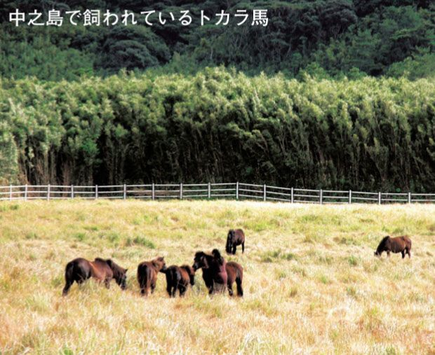
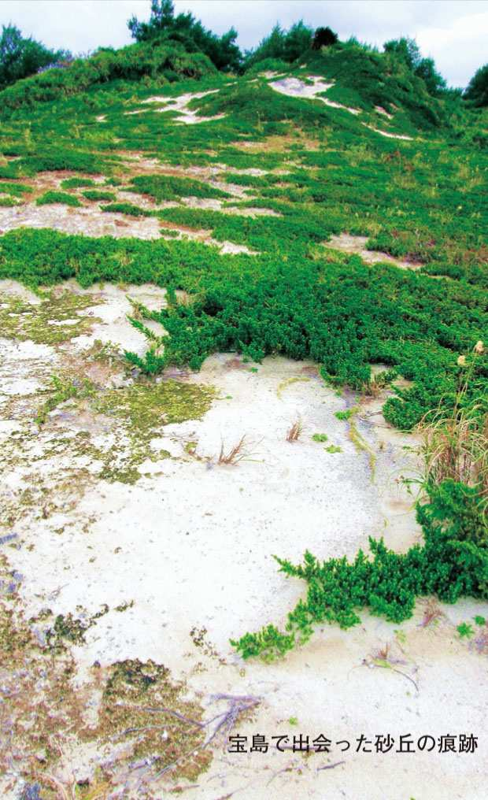
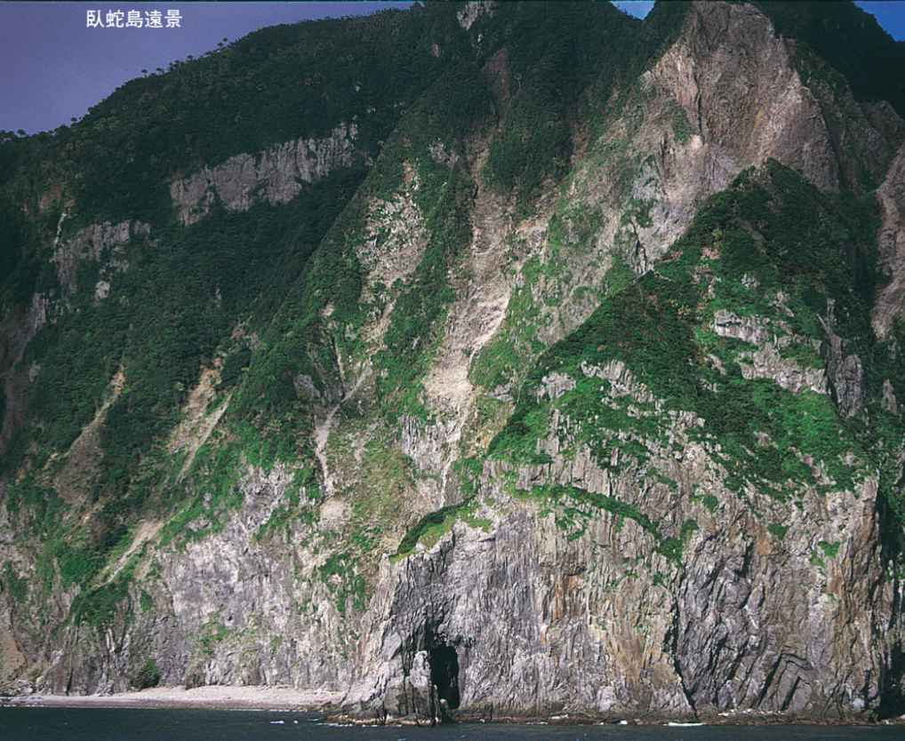
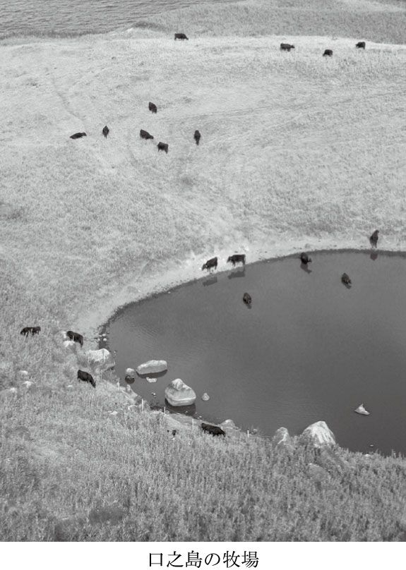
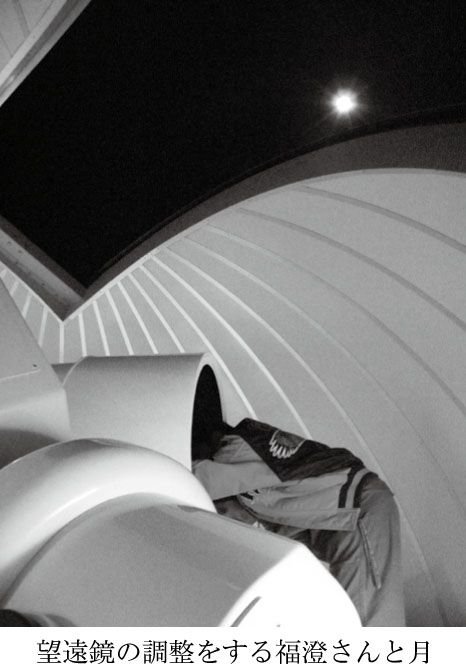
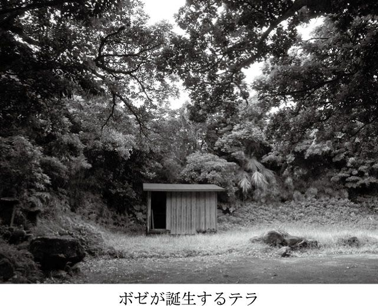
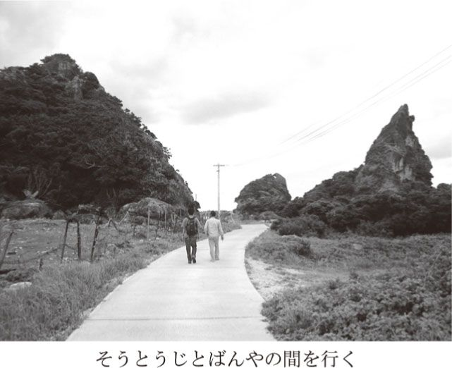
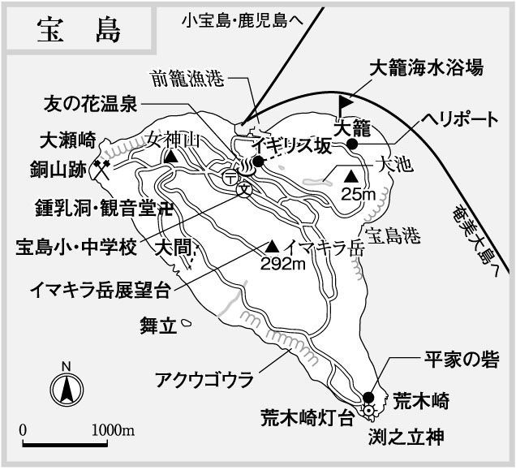

| 吐カ喇（トカラ）列島～絶海の島々の豊かな暮らし～ | |
| 斎藤 潤 | |
| (2008) | |




島が好きで全国各地を歩きまわっていると、どこが一番いいか聞かれることが多い。
独断と偏見をもってしても、一番いい島は決められない。
それだけ、魅力的な島も多ければ、訪ねるたびに新たな発見があって、大して興味のなかった島が、急に輝いて見えることがしばしばあるからだ。
しかし、一番好きなのはどこか聞かれると、一瞬躊躇はしても、
「やはり、吐噶喇かな。どこの島が一番とまではいえないけれど」
とても気になっていた島々の中で、最後まで残っていた吐噶喇列島を訪れたのは、昭和五〇年の秋。それまで、島だけではなく全国津々浦々を歩いてきたつもりだった。
だが、吐噶喇は衝撃だった。
吐噶喇列島は、屋久島と奄美大島の間南北百数十キロに連なる七つの有人島と五つの無人島からなる一つの自治体で、十島村という。日本で一番細長い村だ。昭和二一年二月米軍政下におかれるまでジットウソンと呼ばれていたが、北緯三〇度線以北の現三島村（黒島、硫黄島、竹島）が独立し、昭和二七年二月の日本復帰以降はトシマムラと呼ばれるようになった。有史以来、村を国境で分断されたのは、我が国では十島村だけではないか。
広大な荒海七島灘に散らばる七つの島に住む人々は、合わせて六二五人。
平成二〇年六月末現在の各島の人口は、口之島一一九、中之島一三六、平島八〇、諏訪之瀬島四九、悪石島七一、小宝島五一、宝島一一九。
自分が属している、自治会、マンション管理組合、会社、職場の一部署、学校、学級、サークル、老人会などなどと比べて、島々の人口規模を想像して欲しい。
しかし、わずかこれだけの人たちが保持している伝統文化、多様な民俗、そして生活の知恵は、計り知れない。廃れた習慣や知恵も膨大なのだが、それでも都会暮らしをする人間にはとても豊かに見える。もちろん、モノやカネではなく、知恵や心の豊かさだが。
与那国島近海で東シナ海に流れ込んだ黒潮の本流は、吐噶喇がある七島灘を波立たせながら、太平洋へと帰って行く。それだけで、自然環境がいかに厳しいか想像できるだろう。しかし、その厳しさがすばらしい景観を作り出し、古の民俗を島に封印してきたことも事実だ。地理的な位置関係から、琉球文化圏と本土文化圏が重なり合い、複雑で重層的な文化を育んでいることも見逃せない。
富士山を想わせる山、多種多様な温泉、雄大な火口など、活火山の恵みを随所で目にする。一方、海辺にささやかながら広がるサンゴ礁では、色とりどりの魚がきらめく。
しかし、昭和五〇年当時の吐噶喇に衝撃を受けたのは自然環境からではない。
吐噶喇には、ぼくがほとんど体験したことのなかった人間の生の暮らしがあったのだ。
まず、島に降りるのが一苦労。小舟で、名にし負う荒海の七島灘に乗り出し上陸しなくてはならない。降り立った島で電気が使えるのは、一日四～六時間ていど。
電話も島に一台だけ。
小さな店はあっても、品物は限られているから、自給自足に近い暮らし。
島人はなんでも自分でできたし、そうしなくては生きていけなかった。
恐らく、現在六〇代半ば以上の人ならば、完全な自給自足をしろと言われても、なんとかできる知恵はみな持ち合わせているだろう。問題は、体力だが......。
注目されることがさほど多くない吐噶喇だが、中国が開発中の海底ガス田、北朝鮮の工作船や戦艦大和、学童疎開船対馬丸が沈んでいる場所は、いずれも吐噶喇列島沖なのだ。
吐噶喇では、石器時代の遺跡はまだ見つかっていないものの、縄文遺跡がいくつも発掘されているから、有史以前から多くの人が行き交う海域だったことは想像に難くない。
吐噶喇が、史書に初めて登場するのは、白雉五年（六五四）のこと。
――四月。吐火羅国の男二人・女二人、舎衛の女一人、風にあひて流され、日向に流れ着く。（『十島村誌』より）
『日本書紀』に、そう記されている。
恐らく、遣隋使や遣唐使、倭寇、朱印船など、歴史に残る多くの船や人が、吐噶喇の周辺を航海したに違いない。江戸時代までの日本は、進んだ文化の多くを中国や朝鮮から吸収してきた。その最前線に横たわるのが吐噶喇の島々だから、無関係だったはずがない。
島陰で風をよけたり、水や食糧を求めたり、島人と来訪者の間になんらかの交流もあっただろう。難破船や遭難者が漂着したこともあった。また、海賊に襲われて退治したという話も伝わっている。
コラム「吐噶喇夢想新聞」は、そんな場所に存在する島々であることと、国際的な状況を念頭に置いて読んでいただけたらと思う。
もちろんみなさんの推察通り、好きな吐噶喇を思い切り依怙贔屓して書いています。
目 次
予備知識が全くなくとも、漢字の文字面だけで心惹かれる島名がある。
例えば、神島（三重県）、豊島（香川県など）、祝島（山口県）、嘉島（愛媛県）、喜界島（鹿児島県）、大神島・波照間島（沖縄県）などなど。
しかし、最も強烈に旅情を駆り立てられるのは、吐噶喇列島の「宝島」ではないか。
「寒い冬の季節はどこか暖かいところで過ごしたいと思い、正月に地図を見ていたら宝島という地名を発見して、今度俺は宝島へ行ってくるんだと家族に宣言したら、下らない冗談だと思ったんでしょうね。新年早々、なに言っているんだという顔をされましたよ」
と、今回中之島の温泉で一緒になった六〇代後半という一人旅の男性が語っていた。
地図で発見した「宝島」に惹かれて吐噶喇へ、という話は以前からしばしば耳にする。
宝島といえば、スティーブンソンの海洋冒険小説『宝島』の印象が強いせいか、架空の地名と思われがちだが、実在する地名でごく普通の人々が穏やかに暮らしている。
初めて吐噶喇を旅した昭和五〇年、ぼくも当然のように宝島へ上陸するつもりだった。最初の諏訪之瀬島に二航海（約二週間）滞在した後、小宝島に上陸。一航海滞在して、次は宝島へ下る予定だった。ところが、思いがけない事態が発生。結局、宝島への上陸は叶わぬまま、奄美大島へと下ることになってしまった。
当時の状況を、旅日記から抜粋してみよう。
――一一月一二日（水）。......午後二時半か三時頃だったか、彦助さんがやってきて思いがけないことを尋ねられた。十島丸は今悪石島まで来ており、小宝島にも今夕中には来るという。このところ、宝島泊、悪石島泊、諏訪之瀬島泊と、予定どおり運行したことがなかったのに、なんてこった。ぼくがどうしても宝島に行くというならば、小宝泊（沖で一泊）にするという。
今夕は、波が高くて艀を出せないのだそうだ。明るければフチノトマリの方に、十島丸から伝馬船を下ろして通船作業することもできるだろうが、こんな波の日に暗くなってからでは危険この上ないだろう。ぼくは私事の旅行できているのだし、どうしても宝島へいかなければならない用があるわけでもない。そして、今回宝島へ行かなければ二度と来る機会がないというわけでもない。ぼく一人のために多くの乗船客（ほとんどが地元住民）がいる５００トンの村営船を海上に一泊させることなどできないので、宝島に行けないようなら悪石島にでも上るから、今日は小宝島を通過しても良いと言わざる得なかった。
――一一月一三日（木）。六時三〇分起床。船が早いかもしれないので、早起きして飯を食う。七時半頃、宝島出港の連絡あり。今日のような風の日は、ツクリドマリに十島丸の伝馬船を下ろすということである。間もなく車でツクリドマリへ。
風陰だから少しは凪いでいるのかと思ったらとんでもない。かなりの波だ。それに港といっても、人工的なものはなに一つない。隆起珊瑚礁の大地が深く切れ込み天然の良港になっているのだが、なにしろ規模が小さく大波が中まで入ってきて白く泡立ち、さらに奥まで侵入して岩の裂け目から潮を噴き上げる。設備といえば、ロープ二本に棒一本。ロープは、その辺のサンゴ岩に穿たれた穴に括りつけるのだ。
こんなので大丈夫かと思っていると、皆それぞれ波が高くてどうだろうとか、なんとかなるとか言っている。手籠を背負った小母さんが、多分大丈夫と励ましてくれた。港に入るタイミングは難しいが、出る時は波を見計らうから大丈夫ということ。
そうこうするうちに十島丸は錨を下ろし、さらに伝馬船を下ろしてこっちへやってくる。港の手前で三つ四つ大波を見送った後、エンジンを思い切りふかして突入。接岸に成功した。男数名と珍しく若い女性が上陸する。波もかぶらなかったようす。入るのがこんなにうまくいったのだからと思いつつ、今度はぼくが伝馬船に乗る。唯一の客である。
今上陸したばかりの男のうち、二、三名は、早速艀を降ろしたり引いたりして手伝う。ぼくは、背中の荷物を降ろしてうずくまった。大波が次々とやってきて小さな入江の中で波は騒ぎ白く泡立ち、艀は艫を舳を岩にぶつけ底をすり、それはまあ大変。十島丸の通船作業の人たちは、必死に竿を操るが及ばず。さらに大波が来て、ぼくはずぶ濡れ。頭はたいしたことなかったが、背中、リュック、ずだ袋などがびしょびしょに。さらに小舟は波に揉まれる。ヤケクソ気味で海を見ているしかない。台風の時（この波も季節外れの台風一九号のせい）や冬のニシ（北西の風）が強い時など、いつもこうだったら大変なことだ。どうにか大波が止んだ隙を狙い出ようとするが、おまけの大波が二つ三つ。艀は波頭ではしゃぎまわるが、こっちはスリルでゾクゾク、うんざり。どうにか沖へ。
十島丸に接舷して引き上げてもらう。濡れ鼠。事務室にハガキを託す。一週間ぶりにショッピングを楽しむ。駄菓子を買い、喰う。美味し。伝馬船を下ろしたせいもあり、九時少し過ぎから一〇時一五分くらいまで、通船作業は一時間ほどかかった。
それから、悪石島に一航海滞在して、奄美大島へ向かう時のこと。
――一一月一九日（水）......てっきり宝島で一泊すると思っていたら、県の役人たちが宝で降りて一泊し、上りの十島丸に乗るということで、船は名瀬へ。一時少し過ぎから四時まで停泊する。北風のため大きな港は使えず、十島丸の伝馬を下ろして通称砂漠の東側の泊に渡す。小さい舟なので、数回通船作業を行い、約一時間かかる。波が荒く曇っているので、上陸せず。しかし、たまに陽が射すと砂漠が美しい。やはり一度は訪れてみたい島だ。
吐噶喇の生活を律するのは、昔も今も変わらず鹿児島から下ってくる連絡船だ。当時の「第３十島丸」は、島々と鹿児島や名瀬を結んで、週に一往復（現在二往復）していた。
一応は運航予定表もあったのだが、大半の島で艀による通船を行っていたため、誰かが家を新築するとか、大がかりな工事があると、通船作業に膨大な時間がかかり、一島の沖に半日くらい停泊することも珍しくなかった。その他、天候、急病人などなど、様々な要因によって運行予定が大きく狂うこともしばしばだった。
そのため、実際のところは予定は未定で「幽霊船」とも呼ばれていたほど。当然のことながら、とんでもない時間にあらわれることもあり、夕方や夜の一〇時一一時はもちろん、夜中の一時二時、明け方の四時五時に、通船作業が行われることも日常茶飯事だった。
また、風向きが悪いなどの理由で、日頃利用している港が使えない時は別の港（単なる自然の入江も多かった）を選ばなければならないが、小さいとはいえ艀を陸上移動するのは大変なので十島丸に積んである伝馬船を海上に下ろして通船作業をした。その場合は、荷物の積み下ろしは次便に延期して、基本的には人間だけ運んだ。
海が荒れ気味で夜の作業が危険な時は、波に揺られながら一晩沖がかりして、明るくなってから通船ということもあり、船に弱い人の苦しみは想像を絶した。さらに、一晩待たされた挙句、やはり通船は不可能となった時の打ちのめされた思いは、なんと表現すればよいのか。だが、島人たちはそんな現実を、甘んじて受け入れていた。
一方、十島丸は楽しみも積み込んでいた。各島に小さな売店はあったが、朝夕の限られた時間にしか開いていないことが多く、また売っているものも酒、煙草、缶詰など限られていたし、欠航が続くとすぐに物がなくなってしまう。
だから、甘いものに飢えている島人が多く、艀から十島丸に乗り込んできた男たちが、競い合って船の小さな売店でヤクルトや饅頭を買い、その場で実に旨そうに飲み食いする様を、幾度目にしたことか。最初は奇妙な印象を受けたが、一ヶ月ほど吐噶喇を旅するうちに、彼らの欲求が素直に理解できるようになった。
宝島上陸を断念した後、何回か吐噶喇列島を訪れたのだが、南端の宝島に足跡を印す機会はなかなかなく、初めて上陸できたのは島を目前にしてから一六年を経た、平成三年の吐噶喇家族旅行の際だった。
下の娘は、その宝島で五歳の誕生日を迎えた。
（参照元へ戻る）
口之島に上陸するのは、二〇年ぶりだった。
しかし、吐噶喇へ来るたびに必ず（一度だけ奄美大島の名瀬を起点に宝島と往復したが）口之島には寄港しているから、刻々と変貌してゆく港の有様は目にしていた。
連絡船が接岸できるようになり、艀作業が不要になった時ほどの画期的変化ではないけれど、どこの島の港も着実に大きくなりつつある。最初に吐噶喇を訪れた三三年前と比べたら、規模の違いは軽トラックと大型ダンプ以上だ。
口之島に到着して接岸作業を待つ間、悪石島で乗船した時と同じクロネコヤマトの人を見かけた。吐噶喇の島々にも宅配便はやってくるが、普通クロネコの人は連絡船に積み込んでしまえばそれでおしまい。宅配便の宅配はされず、港で受け渡しが行われる。
いつからクロネコの人が船に乗り込むようになったのかと思い話しかけると、
「今回が、初めてのケースです。いつものように送ってもよかったんですが、大切な小中学校の全国学力テストの結果なので、何か不都合があってはいけないという会社の配慮で、直接先生へ渡すために乗ってきました」
平成一九年度から小六と中三を対象に実施された全国学力テストの結果を、わざわざ届けにきたのだという。昨日は宝島まで真っ直ぐ下り、どこの島の学校にも同じ日に結果が届くよう、今日になって一島一島渡して歩いているのだ。
口之島に接岸してお客が下船し終わると、彼は最後に降りてきて学校の先生に書類が入った包みを渡した。その後船に戻る足取りは、心なしか軽やかにみえた。
迎えにきた民宿くろしおの宿の女将肥後志真子さんのクルマで、上の集落へ。以前は坂を上り右に曲がって集落へ入った記憶があったが、左へ大きく曲がり広々と開けた風景の中に入った。道路事情もずいぶん変わったらしい。くろしおの宿は、学校近くの高台にあった。
日本史の教科書にはまずでてこないが、北緯三〇度線以南の吐噶喇列島は敗戦後の昭和二一年二月から米軍軍政下におかれ、外国になってしまった。
国内の緯度経度で、一番有名なのは明石を通る東経一三五度の日本標準時子午線だ。
そして、祖国復帰前の沖縄と本土を隔てていた、北緯二七度線も知られていた。それらの陰に隠れているが、北緯三〇度線も国境だったことがある。
日本でただ一ヶ所北緯三〇度線が通過している陸地が、吐噶喇最北端の口之島だ。三〇度線は、島北端の丸瀬という岩礁の南側をかすめ、フリイ岳の南麓を通っている。だから、北緯三〇度線以北は、全島の面積の数％足らずか。
この措置によって、それまで有人島一〇島からなっていた十島村は、上三島（現在三島村となっている黒島、硫黄島、竹島）と下七島（口之島、中之島、臥蛇島、平島、諏訪之瀬島、悪石島、宝島〈小宝島は宝島の属島扱い〉）に分断されてしまった。一つの村の中に突如国境が引かれてしまうという事態は、日本史上空前絶後なのではないか。
口之島の集落は、元々小高い山の上にしかなかったが、島の北端を国境が通るようになって状況は一変する。国境の島となった口之島には、闇屋（密貿易者）たちがウンカのように群がり、これまで人家のなかった西之浜（フェリーとしまが接岸する場所）に集落が出現。密貿易の基地として、大いに栄えるようになった。新興繁華街の常で料理屋から遊郭まで登場し、一攫千金を狙う男たちで一時は殷賑を極めたという。
密貿易といえば悪質な行為のように感じられるが、あくまで占領軍である軍政府からの見方で、地元の人たちにとってみればごく自然な商取引にすぎなかった（と言っておこう）。
専売法のもとでは違法行為だった塩作りが今では問題がなく、同じように健康に大きな害を及ぼす煙草は合法で大麻は違法というような類。
ただし、地元には密貿易に手を染める人はほとんどおらず、同じ軍政下にあり圧倒的に人口が多かった奄美の人たちが活躍したという。密貿易の主役は闇屋であり密航船だったが、軍国主義から解放された新生日本の教科書を手に入れるため奄美から本土に密航し、入手後また密航船に乗って三〇度線を越え、奄美へ戻って行った熱い教師たちもいた。
昭和二七年二月になって国境は北緯二九度線になり、西之浜の喧騒は潮が引くように消えてしまったが、それでも翌年の一二月に奄美が本土復帰するまで、七島灘（吐噶喇海域）は国境の海であり続け、多くの密航船が往来して賑わったという。
宿で一休みしてから、二〇年ぶりの口之島へ繰り出した。これだけ月日を経ていると、半ば初めての島のようで新鮮。巡り方は特に考えていなかったのだが、吸い寄せられるように村の中心にあるコウ（河。泉のこと）へ向かっていた。
以前は周囲にもっと木が繁り鬱蒼とした感じだったが、ずいぶん明るくなっていた。それでもコウは今も大切に利用されているようで、澄みきった豊かな水を湛えあふれさせて、自分が村の中心であることを黙然と主張しているようだった。
かつては、コウの周りに女たちが集まり、芋焼酎造りに精を出したという。
穏やかに果てしなく湧きつづける清水を目の当たりにして、豊かな気持ちになれない人間はいないだろう。かたわらのベンチでかすかにさざめく水面を眺めていたら、大きな竹籠を持ったオバァさんがあらわれて、長靴のまま水の落ち口の近くにザブザブと入った。そして、水中から大きな丸石を拾って、中に入っているものをグリグリと押しはじめた。
「こうすると、里芋の皮がきれいにとれるですよ」
石と竹籠の表面にこすられて、里芋がどんどん白くなる。竹の編み目から水中にハラハラこぼれ落ちた皮は、落ち口の方へふわふわと漂っていく。こうして下ごしらえした里芋はさぞかしうまいに違いない。とても豊かな風景を見せてもらったような気がした。
天気もいいので前之浜（東海岸）の方へ下りていくと、八幡神社があった。吐噶喇の神社にも鳥居はあるのだが、どこか本土と違った空気を湛えているところが多い。透明感が違うといえばいいのか。濃密さが優っているといえばいいか。
海岸線でしばらく打ち寄せる波を眺めているうちに、急に人恋しくなって集落へ戻った。とはいえ、村にもそんなに人がいるわけでもない。薄暮が迫りつつある路地を歩いているうちに、白い屋根が異常に多いことに気づいた。ふつうならば黒く塗られているだろう屋根が、ビカッと真っ白。まるで、濃密な雪がへばりついたまま融けずに残っているよう。吐噶喇はもとより、他の地域でもこんな屋根の群れを見たことがない。
その晩早速くろしおの宿で、ご主人の肥後栄男さんに疑問をぶつけてみた。
「どうして、口之島ばかりこんなに白い屋根の家が多いんですか」
「多分、熱や暑さ対策のつもりだろうが......。私は白は塗るなと警告していたのに、聞き入れる人は少なかった。梅雨時は湿気がこもってカビだらけになり、それは大変なはずですよ。大体、屋根に壁用の白いペンキを塗っているので、防水性も悪くなってしまう」
白い屋根が日本の風土に適しているならば、とっくに全国的に採用されているはずなので、栄男さんの指摘の通りと考えるしかない。見た目には不思議な光景で、印象深いが。
中学卒業後、栄男さんは東京の自動車修理工場へ就職し、夜間高校へ通う。西さん（第十四章参照）より年下の栄男さんだが、まだ集団就職が盛んな時代だった。
「同級生の女の子たちは、紡績へ行きましたよ。愛知、岐阜、三重などの会社へ。その子たちを、西駅（現鹿児島中央駅）で見送ったのが、忘れられない」
栄男さんは、やがて千葉県浦安市で土建業を営む口之島出身の社長の片腕として、辣腕をふるうようになった。一〇年かかって飲めない酒を飲めるようにしながら、営業部隊の先頭に立って邁進した。しかし、それが祟って肝臓をいためてしまう。
「あの頃は、成人病の塊みたいだった。このままおったら、死ぬな～って。そうしたら、海が恋しくなり、魚釣りがしたくなった。小さい時から、釣りが好きだし上手だったんですよ。島に母親が一人だけで、放っておけないということもあったし」
「私には、何の相談もなかったとですよ。反対されると思ったんでしょうね」
と、奥さんの志真子さん。島へ戻ったのは、一三年前のこと。
「帰ってきた時、母は怒りましたよ。漁師になるなんて、なんごとかって」
島で漁師をしようと帰郷した栄男さんだが、釣り客に頼まれ遊漁船をはじめ、その後民宿も開業。大物釣りのメッカである七島灘にもかかわらず、地元の遊漁船は栄男さんの黒潮丸や諏訪之瀬島のトカラ南風丸など、数えるほどだという。そのため、遊漁の引き合いも多いが、現在は民宿をメインにお客に出す魚を確保することに力を尽くしているという。
――春夏秋冬、その季節の旬なお魚を夕食や昼食にお出ししております。（鰹・キハダマグロ・鰹のタタキ・サワラ・アジの姿づくり・ヤイト・カンパチ・白鯛・青チビキ・アラ・ブリなど）。『お刺身はおかわり自由です』！
ウェブサイトのこんな言葉につられてふらふらと電話したら、「うちは、魚しか出さないけれど大丈夫ですか」と確認された。望むところだと乗り込んだ晩のお品書きは、以下の通り。
むっちりした極上のカツオの刺身、カツオのカルパッチョ、カツオと胡瓜の酢の物、三点盛り（カツオのぬた、サワラの身欠き〈塩漬けのサワラの身を干したもの〉など）、その他ちょっと肉が混じった煮物や天ぷら（カツオも混じっていた）、お吸い物など。上等なカツオは、最上級の美味の一つと思っている魚好きにとっては、ありがたいカツオ攻め。
その他、四泊して並んだ魚料理の一部を披露すると、シビ（キハダマグロ）の刺身、アラの鍋とアラのムニエル、シビのビンタ（頭）煮、シビのたたき、ゆで立てイセエビなど。
魚嫌いの人が泊まったら地獄、魚好きには極楽の日々だった。平島から鹿児島へ戻る途中、なんと口之島で志真子さんからシビ刺の差し入れがあり、思わず昼から呑むはめに......。
セランマ温泉の保養施設は変わっていなかったが、緩やかな渓谷に沿って気持ちのよい露天風呂が作られていた。実は、セランマ温泉にはあまりいい思い出がなかった。以前、村からはるばる歩いてきて、いざ浴槽に温泉を溜めようとしたところ、パイプが詰まっているのかポンプの調子が悪いのか、お湯が出てこない。
あまりにも残念なので、周辺をうろついたら地面に棺桶ていどの穴が掘ってあった。手をつけると人肌くらいの温度。これが露天風呂ということらしいが、入浴しようかどうかためらった。小さなオタマジャクシが、うじょうじょ泳いでいたのだ。
しかし、再びここまで来る機会はないかもしれない。オタマジャクシをかき分けながら、とろんとしたお湯につかった。風情も何もあったものではなく、温泉を楽しむ気分にもなれない。田んぼのぬるい泥水の中で水浴びしている水牛になったような気分だった。
温泉からの帰りは、かすかに噴煙を上げている燃岳山麓を北へ回り込み、島を一周して集落まで戻る別の道を選んだ。一部はかなり荒れていてクルマでは通行できないと聞いていたが、歩く分には問題ないだろう。
島南部のこの周辺には最高峰の前岳（六二八メートル）を筆頭に、四〇〇メートルを超える山が六座も集まっていて、島の中を歩いているというよりは、まるで山間地にいるような錯覚にとらわれてしまう。道端で草を食んでいたヤギが藪の中に逃げ込んだり、どこまでも道に沿って逃げていく黒っぽい野生牛の仔牛をのんびりと追ってみたり。途中、かつて入浴施設も作られていたという戸尻の海岸まで降り、温泉を探したり。
確かに、ふつうのクルマでの通行は困難と思われる場所が何ヶ所かあった。おかげで排ガスを吹きかけられることもなく、のんびりと散歩を楽しむことができた。
集落の手前で、山に竹を伐りに行くというオバァさんと行き違い、ちょっと立ち話。三、四年前までは米を作っていたが、年をとったのでやめてしまったという。
「このあたりも港の上の斜面も、みんな田んぼだったんですよ。水芋（田芋）は作っていますが。欲しい人がたくさんいるので、お金にもなるし。（奄美）大島へも出荷しています。もちもちしておいしい。焼いて食べることも多いですよ」
これから竹を伐り出して、自分のかるう（背負う）籠を編むのだという。
「数年前までは、前岳の向こうから七〇斤（四〇キロ強）の筍を、かるうてきたですよ。今の人はクルマに乗って本当に楽しています。自分たちの時代は本当に大変だった」
若い頃は、米四斗をかるうたこともあれば、重い砂糖樽を一度にいくつも運んだという。
夕食を終えて日高通さんの家に向かう途中、夕闇に包まれた島に村内放送が流れた。
......一一月二七日、第二回の受精卵移植を行います。三頭までです。一〇月一七日から二七日まで発情した牛に限ります。繰り返します。一一月二七日......
畜産家の日高さんは、村会議員であり十島村畜産組合の組合長も務めている。日高さんが故郷の口之島へ戻ってきたのは、二一年前の昭和六二年、三三歳の時だった。
「戻ってきた頃は、海をやるか陸を選ぶか迷いました。海は荒れるので一年の半分しか仕事ができない。しかし、陸だったら一年三六五日仕事ができる。それで、牛をはじめました」
当時は、仲買人との相対（市場のセリにはかけない直取引）が主流で、仔牛の価格は一六万～三〇万くらいしていたので、量産すれば何とかなるのではないかと思っていた。
「帰ってきたのは、島の一翼を担えないかと思ったからです。島を出ていった子どもたちが、将来帰ってこられる環境作りをしたかった」

そんな思いが二〇代後半になって膨らみ、改めて故郷に興味を感じるようになっていた。
現在はほぼ全員進学だが、高校へ進むにしても、就職するにしても、中学校を卒業した子どもたちは、島を出ていくしかない。そんな島出身者が、若いうちに島へ戻ろうとした時に、一番大きな障壁になるのが、働く場がないこと。現金を稼いで、家族を養い食べていく手段が、島にはほとんどない。あえて言えば、公共事業くらい。
「私もここの出身だったので、島の生活を知りつくしていました。だからこそ、島へ戻ることには大反対しました。一番の心配は医療問題です。鹿児島にいた時に、上の子を幼くして亡くしていたので、島に住んだらもっと大変だと思って。教育については、あまり心配していませんでした。かえって、島の学校ならマンツーマンのいい教育を受けられるだろうと考えていました。実際そうだったと思っています」
奥さんの元美さんが、何かを思い出すようにいった。通さんが、
「で、自分の生まれた島を何とかしたい。男のロマンだ、夢だ、といって口説いた」
団体行動が子どもの頃から好きではなく、鹿児島時代は保育園に行きたがらなかった息子の創さんだが、口之島では入学前にもかかわらず先生が学校生活をかいまみる機会をつくってくれ、学校も悪くはないかなと思うようになった。
「島の中学から鹿児島の進学校の普通科へ進んだので、てっきり大学に入ってサラリーマンになるかと思っていたら、高校卒業後農大（農業大学校）に行ってしまって」
と、お母さんが笑いながらいう。
「勉強は嫌いで、体を動かす仕事をしたかった。でも、農大へ行ったのは、新しい技術を学んで父に教えてあげられればと思ったからで、島へ帰るつもりはまったくありませんでした。ところが、農大の同級生は、農業高校出身者が多く、知識もあれば意欲も高かった。同級生と一緒に学ぶうちに、畜産に可能性を感じるようになりました。選択肢は二つ。一つは早く帰って、畜産に取り組む。もう一つは、年を取ってから島へ戻ってボチボチ」
迷いながらも、創さんの心は早期帰島・牧畜着手へと傾いて行った。
「自分のやり方、頑張りで、面白いことができるかもしれない。自分の力が発揮できて、満足な仕事ができそう。牧畜は自分に向いているのでは、と思うようになっていきました。それに自分は一人っ子で、いずれは親の面倒を見ないといけないので、どうせなら早く帰った方がいいという思いもありました」
そして、創さんは二一歳の時に、新しい畜産の知識を携えて島へ戻ってきた。
「今は六〇頭ほど（十島村で一番多い）ですが、まず一二〇頭までもっていきたい。当面の目標は、仔牛の出荷年間一〇〇頭です」
創さんの力強い言葉に、通さんもまんざらではなさそうだが、戸惑いもあるようだ。
「創が、帰ってくるとは思っていなかったから。夫婦二人では六〇頭が限度なので、増頭は考えてもいなかった。突然帰ってきて、急に増頭するといっても......」
「セリの時、吐噶喇の牛と聞くと購買者がさっと引く。イメージがよくないんですよ。だからこそ、日高の飼っている牛、と認識されるようになりたい。仔牛の生産だけで食べていけるようにしたい。吐噶喇の強みは、周年放牧が可能なことです。飼料代以外の経費が安くて済むので、他地域でやるより有利な面もあります」
と、鹿児島本土の同級生が置かれた状況をよく知っている創さんがいう。
「今後は、登録牛（系統のはっきりした牛）の受精卵移植を推進して、無登録の牛（一般牛）をなくしていくつもりです。十島村の牛は、四五％くらいが無登録だから。無登録母牛は一回限り受精卵移植をして仔牛をとり、あとは淘汰をすすめていきたい。新たな投資をするのが難しいと思うので、高齢者の牛は組合で預かって世話をすることも考えている」
組合長の通さんがそういうと、創さんがそれを受けるように、
「そこそこの値がついていたので、無登録を引きずってきましたが、トレサ法（牛肉トレーサビリティー法。牛の生育歴をはっきりさせることで食の安全を確保する法律）ができて、無登録牛は値段がガタッと下がったけれど、登録牛は全く下がっていません」
だからこそ、全て受精卵移植の登録牛にしていく必要があるのだという。
「島にいる若い世代は、二〇代が二人、三〇代はゼロ、四〇代が二人......。戸数の減少、畜産の衰退は、そのまま十島村の衰退につながっていきます。自分が頑張ることによって、吐噶喇でもこれだけの牛ができるということをみせたい。そして、それをみて若い人たちに、島へ帰ってこようかなと思って欲しい」
明けてこの五月、創さんのそんな言葉を別の島で思い出していた。
諏訪之瀬島出張所前の掲示板に貼ってあった「四月子牛せり市平均価格表」に日高創さんの名前を発見して、思わず「おお、やった」と叫んでしまった。
去勢登録牛の最高価格者の欄に、彼の名前があったからだ。一頭の金額が、五五万六〇〇〇円。平均価格は三一万九〇九〇円だから、平均の倍近い破格の値段だ。雌登録牛の最高価格は四〇万円、平均は二〇万九〇五八円。ちなみに、未登録の去勢一般牛の最高価格は三一万円で、平均は二一万円台。雌一般牛は最高で二八万二〇〇〇円、平均は一八万円台だった。仔牛の安値傾向は全国的なものだが、その中でもいい牛とそうでないものの格差がはっきりと浮かび上がっているのが最近の傾向だという。
創さんの頑張りに希望を見出した若者が、早く島へ帰ってくるといいのだが。
今日は早朝六時頃に下ってくる船に乗って平島へ行く予定だったが、突然発生して劇的に発達した台風の影響で、鹿児島出港が一日延期されてしまい、口之島でもう一日過ごさなくてはならなくなった。どうしよう。集落内をぶらぶらしても、本を読んでもいいのだが、せっかくなら目新しいことをしたい。と思っていたら、村内放送が流れた。
昨日も同じ内容の放送があったのだが、気にも留めていなかった。学校で社会教育学級の一環として、なにかの編み物教室があるという内容。宿の女将にきっと教頭先生がいるからと聞いて、すぐ隣の口之島小中学校を訪ねた。予想していた通り、教頭先生は先日港で宅配便の係員から書類を受け取っていた人だった。
今日の講座は、結束用のテープを使って小物を作るという内容。会場をのぞくと、子どもと大人十数人が楽しそうにおしゃべりしながら小物作りに取り組んでいる。
少し眺めてから、教頭先生に学校をめぐる話を聞いた。
話題は、実験的にブロードバンドを使った授業に取り組み、成果があったこと。社会教育学級はこれまで子どもと親が中心だったが、他の島人にも参加を呼びかけ、今日は看護師、老人会長、自治会長の奥さんなども参加していることなど。
「島の主な組織といえば、自治会、青年団、老人会、そして学校です。学校ももっと積極的に地域社会にかかわっていきたいと考えています」
今、学校が抱えている一番大きな問題は、就学生不足。
子どもは、平成二〇年五月一日現在で、小学生二名、中学生三名（うち山海留学生一名）。
それ以上に危惧されるのが、島に未就学児童が一人もいないこと。小学校三年生が一番小さいから、あと七年で小中学生はゼロになってしまう。この現状にようやく危機感を抱きはじめた島人たちは、これまであまり熱心に取り組んでこなかった留学生確保に力を注ぎはじめ、平成一五年以来となる留学生が中学校にやってきた。西之浜で民宿をやっている家が、里親を引き受けてくれたのだという。島に来たい子ども（というより行かせたい親）はたくさんいるのだが、吐噶喇だけではなく他でも問題は里親不足だ。
留学制度がはじまって一八年。他の吐噶喇の島では、少なくとも延べ一〇名以上（最も多い宝島は五四名）受け入れているのに、口之島は六名のみと際立って少ない。
ただし、悪石島はもっと少なく一名のみ。しかし、悪石島は島の子どもだけで現在九名在籍していて、七島中一番多い。さらに未就学児童も五名控えているので、当分は安泰だ。その悪石島にしても、家族旅行で訪ねた十数年前は、小中学校合わせて一名だったが。
午後もちゃんと滞在メニューが用意されていた。ヘリポートに近い健康広場で、グラウンドゴルフの試合をするというので、参加させてもらった。というより、暇そうにしていたところ宿の女将に勧められてでかけた、といった方が正しいか。
会場へ行くと、すでに隣のグラウンドではゲートボールの試合がはじまっていた。参加者はほとんどがお年寄りだが、格好も構えも堂に入っている人が多く、ボールを打つ時の目つきも鋭い。とげとげしさは全くないものの、お遊びではなく試合という雰囲気が漂っている。
一方、グラウンドゴルフの参加者は若手が中心で、和気藹々のお遊び気分。これなら、多少足を引っ張っても大目に見てもらえそう。グラウンドゴルフやパークゴルフは名前こそ聞いたことがあったが、見たこともなければ、ましてやプレーなどしたこともない。
単純にいえば、木製のクラブで地面の上に置いたボールを打って、ポールの下の籠状になった部分に入れるというもの。ゴルフと同じで、入れるまで打つ回数が少ない方がいい。暇つぶしと思って参加したのだが、単純だからすぐにできるし、やってみるとけっこう面白い。グラウンドといっても、雑草は生えているし、小石もあちこちに転がり、ボールの進路に立ちふさがる。どうやったら、うまく避けることができるか。だんだん燃えてくる。オリンピックばかりでなく、グラウンドゴルフも参加することに意義があるらしい。
フェリーとしまが延航になったおかげで、思いがけず島人気分が味わえた一日だった。
状況①
旅のアドバイス
吐噶喇を楽しく旅するためにもっとも大切なのは、時間（そして気持ち）にゆとりがあること。
島々と本土を繋ぐ唯一の足である連絡船『フェリーとしま』は、天候の急変により船の運航が微調整（1日くらいずれること）されるのは日常茶飯事といっていい。そんな事態に直面しても「まあ仕方ない」と受け流せるくらいの余裕が欲しい。
目的の島がはっきりしているなら、宿を確保しておくことも欠かせない（夜は桟橋で釣り三昧なら話は別）。旅人の絶対数はまだまだ少ないが、意外に混んでいることもあるからだ。
港湾整備（建設会社が自前で飯場を確保している）以外の大きな工事が行われていたりすると、島の民宿はどこも満室、などということもある。工事は夏の観光シーズンを避けて行われることが多いので、シーズンオフでも油断ならない。
また、島の売店で購入できるものは一部の食料品（ぼくの場合は、ビールや焼酎）くらいなので、その他の消耗品は吐噶喇行きの前に用意しておくべきだ。
現金も、そのうちに含まれる。カードは使えないし、ATMがあるのも、口之島、中之島、宝島の郵便局だけ。
各島に診療所があり、看護師が常駐しているので、保険証は万が一の時に有用だ。
長めの旅になる時は、船のダイヤや各島の観光地図も役に立つ。しかし、あるていど土地鑑が身についたら、最終的には自分の感性だけを頼りにひたすら歩くといい。その次の段階としては、道端で日がな1日人を待ちつつおしゃべりしたり、無為に過ごしたり、などという贅沢もある。
十島村HPは、http://www.tokara.jp/
――「ところ牛」との付き合い方
（参照元へ戻る）
日本に野生牛がいることを知る人は、少ないのではないか。
それも、絶海の吐噶喇にいることを。
役場が作った口之島のパンフレットには、こう書かれている。
――口之島は、日本でも唯一の純血種の黒毛和牛である野生牛が生息する地域です。燃岳付近の原生林では多くの野生牛を見かけます。また、生息域に入る時は必ず柵を閉めてお入りください。野生牛はおとなしく臆病です。刺激を与えないようにしてください。
二〇年前にセランマ温泉を訪ねた時に、途中で何回か野生牛に会った。威嚇されることはなかったので、そういう意味ではおとなしかったが、決して臆病とは思えなかった。
仔牛も含む数頭の群れと遭遇した時のこと、人の姿を見て逃げてくれるかと期待していたら、じっと目を合わせて動こうとしない。みんな一斉に、じ―――っ。一〇個以上の牛の目玉で、ぎろぎろ睨まれるのはあまりいい気分ではない。
シッシッと追い払う身ぶりをしても、まったく無視されたまま。
中には睨み飽きて道端の草を食べだす牛もいたが、比較的大きく迫力のある牛は、動こうとするどころか、まったく目を逸らせてくれない。こちらがそっぽを向いたからといって、襲ってきもしないだろうが、なんだか悔しいので負けずに睨み返す。そんな睨み合いが三〇分（実際は一〇分ほどだろうが、とても長く感じられた）も続いただろうか。
何の前触れもなしにふっと目を逸らせると、脇に広がる森の中にそろって姿を消した。逃げるというのではなく、そこにいる用がなくなったから去っていった感じ。
当時は、平安時代から島にいた牛だという人もいれば、世界で唯一の野生牛という人もいたが、最近では日本唯一としかいわなくなった。口之島の野生牛は厳密にいうと、家畜が再び野生化したもので、最近では野生化牛という言い方が増えつつある。また、イギリスなどにも再野生化牛がいるそうで、そのため日本唯一というようになったらしい。
それからちょうど一〇年後に、思いがけない場所で口之島の野生牛と再会したことがあった。悪石島で平成一一年に行われた、99パラダイストカラ・イン・アクセキというイベントの会場でのこと。もっとも、野生牛はもう眼を付けることができない状態になっていたが。
吐噶喇各島から島人が集まってのお祭りだったので、それぞれが自分の島をアピールするためのブースを出していた。鹿児島に上ることはしばしばあっても、他の島に上陸することは少ないので、島人たちはお互いに興味津々。
口之島のブースには、野生牛の焼き肉があったので、もちろん飛びついて食べてみた。確かに牛肉の味はするのだが、かなり硬い。しつこく嚙まないと、なかなか嚙みちぎれない。獣臭いということはなかったが、どこか野生を感じさせる味わいだった。不味かった記憶もうまかった覚えもない。あの野生牛を喰った、という事実に舞い上がっていたのだろう。
後になって聞いたところ、鹿児島大学に研究用の捕獲を依頼され、そのお礼として口之島の人たちがもらったものだったらしい。
ところで、島人たちはこの野生牛のことをなんと呼んでいたのだろう。野生牛ではあまりに即物的すぎる。きっともう少しこなれた呼称があったに違いない。そう思っていたところ、十島村畜産組合の組合長をしている口之島の日高通さんと話をしている時に、ぽろりと「ところ牛」という言葉が出てきた。
くらっときた。まずなによりも、響きがいい。
ところうし。
さすが平安時代から続くかもしれないお家柄で、どことなく優雅。
ヤセイカギュウでは、どうもギクシャクした感じを拭えない。
日本語としてこなれているのは、明らかにところ牛だ。
日高さんは、ところの意味を説明しようと悩んでいたが、呼び方だけでピンときた。
「ところ」とは自分の住んでいる場所、あるいは領有している土地という意味があるし、吐噶喇では元々土地所有は一島共有が基本だったから、ところ牛とは口之島の人々みんなが共有する、あるいは権利がある牛、もっといえば同じ島に住む仲間。
そんな意味合いで使われてきたのだろう。
「野生」と「ところ（我が島）」では、牛との距離感が全然違う。
野生牛という言葉は、家畜ではないから野生。そんな感覚で学者が命名したのだろう。学問の世界では客観視する必要があるから、そう呼ぶのは適切だ。
でも、島の人にとっては、少なくとも以前はずっとところ牛だったのだ。そこには、半ば家族のような感情があるのではないか。決して突き放した「野生」牛ではない。
日高さんたちは、ところ牛とどんな付き合い方をしてきたのだろう。
「ところ牛のことを学者先生たちは、野生牛とか野生化牛と呼んでいる。平安時代の絵巻に出てくる牛とそっくりだから、平安牛と呼ぶ人もいる。大正時代に諏訪之瀬島からきた牛が野生化したという学者もいるが......」
日高さんは、その見解には疑問を持っている様子だった。
確かに、日本の和牛と洋種の掛け合わせは、明治時代以降盛んに行われているので、もし大正時代にというのであれば、すでに純血種ではなくなっていた可能性が高い。
あの見島牛ですら、明治二〇年代後半に洋種との掛け合わせが行われ、その結果粗食に耐え従順といった見島牛本来のよさが損なわれ、二、三年で交配は中止し元の形質を取り戻すために戻し交配を繰り返したという話を、見島の郷土史家から聞いたことがあるほどだ。
「全国和牛登録協会の人が口之島へきて、初めてところ牛を見た時に、見島牛がいるっ！ と叫んだ。体形が全く同じらしい」
口之島出身のところ牛は、徳之島や沖縄に闘牛用の牛として引き取られていったものも多い。中には、横綱になったところ牛もいるという。
「種牛となって、闘牛用の牛の親になっているものもいる。最後は、ヤギ肉に偽装されて販売されるものもあるようです」
両者ともけっこう癖があり、食べ比べても区別しにくく、ごまかされてしまうらしい。
「昔は山に飼い牛を連れて行って、ところ牛と戦わせたこともあります。山でやる闘牛みたいなもの。七〇代半ば以上の人なら、経験があるはずです」
強そうなところ牛が出てくると、あの辺に強そうなのがいるといって、自分の自慢の牛を連れて行ったらしい。闘牛の原型を見るような話だ。
「最近のところ牛は、小さくなった。昔は、頭から肩までが大きかったし、爪もでかければ角も大きかった」
体の前半分が逞しく、後ろ半分は細め、それで小回りが利いたのだという。
今回、ぼくが見かけたところ牛は四頭。褐色が二頭に、黒毛だけれど後ろ足の付け根あたりが白いものと、黒毛の仔牛。どれも、二〇年前に対峙したところ牛に比べると、目つきは穏やかで脚の筋肉にも張りがないようにみえた。現在の棲息数は、せいぜい二、三〇頭ではないかという人もいれば、いやいや四、五〇頭はいるだろうという人もいた。
「野生牛をとって食べたことがあるが、焼き肉にすると生ゴムみたいな感じだった。臭いがとても強い。次にサイコロにして鉄板で焼いてみたが、これも同じようなもの。三回目に煮込んでみたら、やっと食べられた」
という話も聞いた。牧場では毛の色や模様がほとんど同じ牛ばかり、という状況を見なれていると、口之島のところ牛は変化に富んでいて面白い。そして、案外かわいい。
クジラやイルカ、野鳥や爬虫類。様々な生物に肩入れしている人がたくさんいるのに、口之島には住み着いてまで、ところ牛の研究をしている人はいない。もし、黒毛和牛唯一の純血種だとしたら、貴重な遺伝子を伝えてくれているかもしれない。
なのに、本当にほったらかし。人間とそんな距離感を維持しつつ生きているのが、ところ牛のところ牛たるゆえんかもしれない。ところうし。いい響きだ。
現況②
船 便
吐噶喇の島々と鹿児島本土や奄美大島を結ぶ唯一の足が、村営船『フェリーとしま』だ。人間だけではなく、自動車やガソリン、牛、各種食料など、あらゆる物資を運ぶ、文字通りの生命線。
基本ダイヤは週2往復で、名瀬まで行く金曜鹿児島出港日曜帰港と、宝島で折り返す月曜鹿児島出港水曜帰港の2便だ。
運航ダイヤは、鹿児島23時50分発で、翌朝口之島に6時05分到着後、5つの島に寄港して宝島に13時05分着。名瀬には、16時20分着。翌朝名瀬を4時（船内宿泊可）に発ち、宝島出港7時15分、また5つの島に寄り最後の口之島を14時15分に出港し、鹿児島への帰港は20時30分。
4～9月の夏ダイヤは、鹿児島23時発となり、全体的に約1時間ずつ早まる。
欠航は、夏の台風と冬の嵐によるものが大半で、就航率は90%を超える。しかし、出港が1日早まったり遅れたり、島での出港時間が繰り上がったり、ということは珍しくない。
また、年間12回の臨時便が予定されていて、夏場の多客期や牛のセリ、イベント、選挙などの対応に利用されている。運航予定は、1、2ヶ月前に発表される。自分が行こうと考えている時期の運航状況を、早めに把握しておくといい。ただ、2008年春の選挙の時のように、無投票と選挙実施の両状況に対応して、2種類の運航予定が組まれることもある。
また、各島に寄ってレントゲン健診を行う便（5月）や7つの島全てを走るマラソン便（秋）は、一航海ですべての島に上陸することができる。吐噶喇は、特徴ある雄大な島影が次々に現れるので、往復するだけでも楽しい。上り便からは、屋久島、口永良部島、竹島、硫黄島、開聞岳なども望まれる。
――噴煙を上げる離島の最高峰御岳へ
予報では明日から天気が崩れ、しばらく回復しないらしい。
それならば、最初に吐噶喇列島最高峰の御岳を征服しておこう。
口之島を挟んですぐ北にある屋久島が、離島の最高峰にして九州の最高峰でもある宮之浦岳を擁しているので全く目立たないが、御岳の標高はほぼ千メートル（正確には九七九メートル）もある。
屋久島の宮之浦岳、利尻島の利尻富士、佐渡の金北山に次ぎ、日本の離島では四番目に高い山で、時には冠雪することもあると聞いていた。常に噴煙を上げている島に限定すれば、離島の最高峰である。吐噶喇富士の異称をもつ絶海の独立峰だから、さぞかし眺めもいいだろう。せっかくなら、せめて山頂が雲に覆われる前に登っておきたい。
宿の人に、登山道入口まで送ってもらった。道の反対側は海岸線だから、千メートルをまるまる歩いて登らなくてはならない。道標には、御岳八・二キロとあった。総合的な体力はともかく、脚力にだけは自信がある。のんびり歩いて、二時間ちょっとか。
全部が純粋な登山道だったら、これほどの道のりにはならないだろうが、御岳は標高七八〇メートル付近まで九十九折りの車道がついている。石原都知事があんな無駄な道を作ってと発言して、地元から抗議された代物。車道終点の周辺には、ＮＨＫや民放の電波の中継塔があり、実際はその建設のために作られた道なのだ。
歩き出して間もなく、重機を積んだ何台かのトラックが黒い排ガスを撒き散らし、重たげに喘ぎながらよろよろと追い越していった。地デジ中継基地の工事がはじまっているそうだから、恐らくその関係だろう。
屋久島と奄美大島の間は、手抜き地図では空白の海域になっていることもあるくらいだが、実際は吐噶喇の島々が北から南へほどよい間隔で配置されているので、島々はまるで天然の電柱や橋脚のように便利に使われ、その先の人々に大きな恵みをもたらしている。有料道路を利用するクルマから通行料を取るように、地元にさほど恩恵のないまま中継点を提供している島は、電波の中継料をもらってもいいくらいだ。
そして、大規模な工事が比較的簡単にできるのは、島に人が住んでいてくれればこそ。
いくら都合よく島が点在していても、無人島では大変な難工事となる。工事に必要なあらゆるもの、重機やトラック、人、滞在施設、食料や水にいたるまで、無人島ならば全てをゼロから調達しなくてはならない。
薄明の中に鮮やかな黄色が浮かんでいた。野生化した夏ミカンとクサラらしい。クサラは小さなユズを想わせる柑橘類で、奄美大島やその周辺の島々でよく見かける。それが中之島にもあったのだ。青くて酸味の強いうちは、焼酎に絞り込んだり、なますや刺身に酢の代わりとして使う。しかし、種がやたらと多いので熟したものは誰も食べないという。
手の届くところにあったクサラをもいで、皮を剝く。どことなくおっとりした香気が立ち昇る。この匂いも好みだし、種は多くとも果汁がたっぷりの実もお気に入りで、野生化したものを見かけるとよく採って喉を潤していた。今回もそのつもりで、口に含むと実が弾けた。予想外の味の濃さ。そして、とても甘い。ジュースにすれば、この味なら十分に人気となるだろう。もったいない。味をしめて何個か山へ持っていこうかと思ったが、手が届くところはこの一個でおしまいだった。
他に途中で気にかかったのは、一月だというのにもうたくさんの花をつけているサクラツツジと道の法面を真っ赤に埋めているコモウセンゴケ。サクラツツジは屋久島の山などでもよく見かけるが、花は初めて。その名のとおり桜色したきれいな花で、そのまま庭に移植すればすぐに庭木になりそう。コモウセンゴケも蕾をつけたものがあったが、花はまだ。尾瀬などの寒冷地の湿原をイメージするモウセンゴケだが、切り通しなどが好きらしく、吐噶喇、奄美、沖縄でも法面などでしばしば見かける。
途中見晴らしが悪かったのは想定内だったが、足が重くしばしば休憩する破目に陥ったのには参った。二ヶ月ほど家に引きこもっていたので、すっかり足腰が弱っていたらしい。
途中一ヶ所だけ道が崖っぷちをかすめる場所があり、眼下を埋め尽くす照葉樹の森と戦後開拓が入った高尾地区の畑や牧場、先割岳、ジンニョム岳などが一望された。森は、中をぜひ歩いてみたいと思わせる充実ぶり。線路の枕木がコンクリート化される前は、山で枕木を伐りだし出荷していれば左団扇だったというが、そんな話が真実味を帯びて迫ってくる。また、森林資源が豊富な中之島は、他の島に建築用材を供給していたともいう。
電波中継塔の手前、標高七五〇メートル地点の曲がり角から、竹藪の中に細い登山道がのびていた。一分も進まないうちに急な登りになって、愕然とした。一応整備され、丸太が階段状に設置されているのだが、足がちっとも上がってくれない。八キロ歩いて一キロの登りが、情けないことに意外にこたえているらしい。
硫黄ガスの臭いが強まってきたのに、眺望がいつまでたっても開けてこない。竹藪の中を這うように進んだ。山腹から噴煙を上げる諏訪之瀬島と港が、辛うじて望める場所で長休み。その少し上で藪が途切れてぽっかりと青空が広がったら、異界との境のような火口壁の稜線が連なり、白い噴煙が縁を越えて這い降りてきた。濃密な煙に包まれると咳き込みそうになるほど、強烈な臭いだ。あと一〇〇メートルも前進すれば火口をのぞけるのだが、もうへとへと。なだらかで優しげな草原に倒れこんだ。登山口から二時間半と少々。青空をいただきぼんやり寝転べば、疲労感が活火山の山肌に吸い取られていくような心地よさだった。
足元の茫々たる錫色の東シナ海には、諏訪之瀬島、平島、臥蛇島、小臥蛇島などが、ポツンポツンと淋しげにたたずんでいる。諏訪之瀬島の果てでかすむ島影は悪石島か。これ以外にも口之島、小宝島、宝島まで含めて一つの村をなしているのだが、孤立した姿は一つの島が一つの村に感じられて仕方ない。東京都では実際、人口二〇〇前後の青ヶ島や御蔵島、利島が、それぞれ独立した行政組織をもち一つの自治体となっている。
たっぷりすぎるほど休んでから、火口壁の縁に立った。山向こうには口之島が横たわり、火口の中には予想外の光景が広がっていた。中心部のあちこちから硫黄ガスが出ているものと思っていたら、白煙を噴いているのは火口壁内側斜面の三、四ヶ所だけ。水が溜まって干上がったのだろうか、中央東側は真っ平らで小さな水溜りらしきものが光っている。西側のなだらかな丘は、初夏に赤い花を燃え立たせるマルバサツキの群落だろう。活火山の火口内とは思えない、穏やかな眺めだった。
硫黄ガスがこちらへ流れてくると、苦しい。それでも、火口を飽かずのぞいていたら、濛々たる白煙の下から不思議なものが現れた。幾重もの雛壇状になった地形は、明らかな人工物。一つの段の上に、さらに幾筋もの線が走っている。かなりの規模だ。中之島ではかつて硫黄を採掘していたそうだから、その遺構に違いない。それにしても、筋入り雛壇は何のための装置だったのだろうか。
翌日、歴史民俗資料館で館長の福澄孝博さんに聞いたところ、さすがに知っていた。筋状に見えるのは低い石垣で、石垣間の溝をさらに石で覆い、硫黄ガスが通り抜けるトンネル状の装置をこしらえ、しばらくそのままにしておく。すると、覆った石に結晶化した硫黄がびっしりと付着するので、それを搔き落として集めるのだという。
現在は原油の脱硫によって生じる硫黄だけで工業需要を十分に満たしているから、そんな優雅でノスタルジックな装置が復活することはないだろうが、もし残っていたら採取の様子を見てみたかった。体験学習で硫黄採取をすることならありかもしれないが、身近で純粋な硫黄を使う機会もないし、無理だろうな......。
その時、福澄さんから聞いた耳寄りな話。以前、山から硫黄を搬出した山道や軌道跡、トンネルなどが辛うじて残っているというのだ。
動植物を観察しながら吐噶喇富士に登り、硫黄採掘遺跡を見学しつつ地質や火山について学び、さらには硫黄搬出ルートを歩いて島の歴史を教えてもらい、照葉樹の森の中で島人と森の関わりを聞く。誰か、そんなエコツアーをやってくれないだろうか。そうしたら、屋久島をそろそろ卒業したいという人たちが、ボチボチやってくるのではないか。人口百五十足らずの島には、ボチボチていどのお客がちょうどいいし、環境の負担も少ないだろう。
元気があれば硫黄鉱山跡まで降りたかったが、今日は気力がない。それでも、なけなしの力を振り絞って九七九メートルの山頂まで辿りついた。口之島は指呼の間だし、はるか彼方の雲の下で薄墨色に見えているのは屋久島らしい。
弁当を食べた後、草原を褥にたっぷり昼寝をすると二時間がたっていた。
島で過ごすこんなとりとめもない一時が、無性にいとおしい。
登りに比べると下りの方が楽だったものの、コンクリートの感触が鬱陶しかった。アスファルトに比べて耐久性が高いのだろうが、一歩一歩足に突っかかってくるようで気に障る。落ち葉が積もった道路の中央部や苔むした道端を歩くだけで、ずいぶん楽だった。
登山道入口まで下ってからは、港から西区にかけての海岸線をぶらぶら。中之島には大きく分けると三つの集落がある。一番古く港に近いのが西集落。その南の海岸線には、戦後になって奄美大島出身者が拓いた東集落。そして、島中央の高尾台地に戦後入植した人たちが住む日の出集落。
エビスサマの前の海岸にある西区温泉をのぞき、村内唯一の役場支所の前を通って宮川を越えると、ささやかな公園になっていた。一角には小さな湯の湧く穴があって、「温泉玉子作れます。ョ（要フタ）１時間以上」と書かれた札の根方に鍋の蓋が置いてある。島唯一の店が開くのは午後五時なので、今日はゆで卵を作っている時間はなさそう。
傍らにある島の神々が合祀されている地主大明神社の鳥居脇に、見慣れぬ案内板がたっていた。中之島「自然体験観光交流」の拠点めぐり、「島まるごと博物館」とある。「中之島住民自治会」や「島興し結の会」と並んで、「トヨタ財団2006年度一部助成事業」と書かれているので最近できたものらしい。
――吐噶喇列島の中心島である中之島は、原生林の巨樹・古木が多く、多種多様な植物・生物群が豊かな自然資源を形成しており、自然資源と一体になった歴史・文化遺産が、まさに「島まるごと博物館」をなしている。
そして、自然体験交流コースとして、「ビロウ樹の里・野鳥観察の森」（地主大明神社周辺）、「楠木集落・自然博物館の拠点」（楠木は西集落の北地区）、「島人の命の水源地、防空壕跡、平家落人番所の小城」、「トカラ富士御岳の麓高原」（トカラ馬放牧場、九州最大級の天文台、歴史民俗資料館）、「底なし池」、「ヤルセ灯台と開拓集落跡の巨樹ガジュマルとイヌマキ大木」の六コースが記されていた。知っているものも多いが、知らない場所もあって島巡りの参考になる。特に、高台にあって港に一番近い楠木が、巨樹に埋もれた村とは知らなかった。どうりで海上からも港からも、家々がほとんど見えないわけだ。
まずは、目の前に鎮座する地主大明神社のビロウ林を散策する。本土にある鎮守の森とはずいぶん風景が異なるけれど、厳かな雰囲気は共通していた。社殿のさらに山側には、里中どんという聖地があり、赤い鳥居の下に据えられた一対の丸石の上に、笹の葉と真っ白な小石、米、削り節などが供えられ、周辺にはイヌマキ、ガジュマルなどの巨樹も聳えていた。
へき地診療所、郵便局、吐噶喇では老舗の大喜旅館の前を通って、海っ端の東区温泉へ。中之島の海岸には二ヶ所も天然温泉があってなんとも贅沢と思っていたら、実はもう一ヶ所あって建設会社が利用しているらしい。
西区もそうだったが東区温泉の入浴棟も、護岸から迫り出した要塞のようで、半ば地面に埋もれたように作られていて、入口へは道路から降りて行かねばならない。
浴室に入ると三人の先客がいたので、早速利用させてくださいとご挨拶。脱衣場は浴室の手前に設けられ、特に仕切りはない。料金は志納だが、他の島の相場に準じて料金箱に二〇〇円を投入。専用の封筒に入れて一〇〇〇円以上納めると、寄付金とみなして壁に名前を掲示してくれるそうだ。

白い波板の屋根から光がもれ、内部は意外に明るい。何杯も掛け湯をしてから、硫黄の匂いがする白い濁り湯に首まで浸かり、思い切り手足を伸ばす。凝り固まっていた疲労がメリメリ融けていくような気持ちのよさに、思わず呻き声をあげてしまった。完全に脱力して全身を湯に預けている時の快感は、何ものにも替えがたい。
「いや～気持ちのいい温泉ですね～。こんなお湯に毎日浸かれるとは、実に羨ましい」
誰ともなく三人のお年寄りに話しかけると、すぐにのってきた。
「あぁ～、本当にいい温泉だろう」
満足そうな顔をして、皆さんが一斉に相槌を打つ。
「こんな素晴らしい温泉を作ってくれたご先祖様に、心から感謝しているよ」
東区は、敗戦後奄美大島北部の笠利町赤木名から移住してきた人たちが拓いた集落で、最初は芋作りが中心だったという。
「昔はね、屋根が茅葺でもっと風情があったんだ。周囲は石垣で、板壁ではなかった」
今は熱い源泉の量をバルブで調節しながら浴槽に注いでいるのだが、以前は湯壺と水壺があって適当に混ぜ合わせて湯温を調整したという。湯を舐めると微かにしょっぱい。
「そう書いてあるが、昔は胃薬として飲んでいたんだ。まあ、今も......」
指差した壁の温泉分析表には、「飲用許可無し」。でも、効きそうな感じがする。
「胃癌にも、効くよ！」
浴室内の写真を撮ってもいいか聞いたところ、
「いいとも。いい温泉だから宣伝してくれよ！」
三人が上がってからも、出たり入ったりだらだら濁り湯と戯れていたら、いつの間にか小一時間が過ぎていた。
足も体もかなり軽くなったので楠木や東集落を散策したかったが、これから高尾の外れにある宿まで一時間歩かなくてはならない。宿は港近くにも二軒あるのだが、いずれも地デジ工事など仕事関係の人たちで満員だった。今日はこれで切り上げることにして、標高二〇〇メートルの場所に広がる台地へ向かった。
夕食を早々に終えてから、夜の工事現場へ向かう同宿者に便乗させてもらい、一時間かけて歩いてきた道を再び役場の支所へ。平成二一年七月二二日の皆既日蝕に関する住民説明会があると聞いて、傍聴させてもらうことにしたのだ。議論はなかなか活発に交わされ、会合は一時間半に及んだ（第十五章参照）。
吐噶喇夢想新聞①
十島村独立計画の背景
❖中之島発 先月鹿児島市内から中之島へ役場を移転した十島村が、日本から独立する計画を進めているという未確認情報をつかんだ。同村は吐噶喇列島とも呼ばれ、鹿児島県の南部に連なる7つの有人島からなり、人口も産業も少なく税金喰いとしてお荷物扱いされてきた島々。
本紙のインタビューに対して、鹿児島県当局は明らかな誤報と断言しながらも、なにか思い当たる情報を得ているようで戸惑いを隠さなかった。
現地事情に詳しい識者によると、財政再建という名目のもとに推進される過疎地冷遇に耐えかねた十島村が、窮鼠猫を噛むの決断で大胆な行動に出る可能性もあるという。
❖鹿児島発 昨日本紙が報じた十島村独立計画は、大きな波紋を呼んだが、その背景が徐々に明らかになってきた。日本政府が知らない間に、吐噶喇列島は米中の静かで熱い戦場になっていたのだ。十島村の窮状を知った中国系のファンドが、密かに吐噶喇全島買収を画策。手厚い保障をした上で、現住民は本土へ移住させ、吐噶喇例島すべてを中国系企業の社有地とし、さらに同国の社員を駐在させ実質的な中国化を図ろうと計画。受け皿となるのは、中国最大手のインターネット関連企業だという。
中国人民解放軍は、第一列島線（九州からインドネシアにいたる列島）の中国側を最重要海域と位置づけており、その中核となる吐噶喇列島を事実上占有することの意義は計り知れない。
それを察知した米国系ファンドが割って入り、現在水面下で激しい吐噶喇争奪戦が繰り広げられているという。ここまで何ら手を打ってこなかった日本政府の対応の遅れに、国内だけではなく海外からも危機管理の甘さに非難が集まりつつある。
※現実にこんな記事が載らないよう願っている。
――数々の潜在資源を活かす手はないのだろうか
吐噶喇富士を往復とも歩いて制覇した翌朝は、高尾台地の東にある通称底なし池（御池）を目指した。ここも以前から気になっていながら、まだ訪ねたことのない場所だった。なんといっても名前が挑発的で、放ってはおけない。
歩きだして間もなく、敷地の入口に「歓迎光臨」という看板を掲げた家があった。不思議に思い後で聞いたところ、奥さんが中国人らしい。小さな島でも、海外から嫁いできた人をよく見かけるようになったが、吐噶喇にもそんな波は及んでいた。
そこから少し進むと、今度は学校跡があった。一瞬通り過ぎそうになったが、ツタに包まれた校門に気づいた。かすれて読みにくくなった白い文字で、「中之島小学校日之出分校」と書かれている。校庭らしき広場は、すっかり草で覆われていた。
今でこそ、小学校三名、中学校一名の計四名（他に、留学生と教員の子どもが各一名）になってしまった中之島小中学校だが、かつては本校以外に日之出、朝日（両方ともいかにも開拓地らしい地名ではないか）、そして臥蛇島の三つの分校があった。
日之出分校は、昭和二八年に開校し、その後体育館やプールまで作られたが、児童数が減少して、昭和五二年三月に閉校となった。その名残りの校門だった。
しばらく歩くと、今度は犬とすれ違った。吠えかかったりせず行儀がいい、明らかな飼い犬。今度は、オバァさんがやってきて、犬を見なかったかと聞かれた。
「ちょっと前に、向こうの方へ歩いて行きましたよ」
底なし池に近い池原に住んでいて、戦後与論島から入植した人だった。何年前のことか聞いたところ「いつきたか、忘れてしまった」といって笑った。姉妹でやってきたらしく、他にも与論から入植した人が何人もいて、当初はイモやキビを作っていたという。
すぐ近くと思いながらなかなかたどりつけなかった底なし池がみえてきた。水量が豊かで立派な池だったが、周辺は予想していたほど鬱蒼としていない。池畔の案内板には、
――100万年前の火山活動によって誕生した噴火口で、活動がおさまった後、周囲の山々から土砂が流入し火口池になったものと推定されている。この池の一周は約２キロ、水深は４メートルであるが、底が泥状のため「底なし池」と称され、島民から恐れられている。池の周辺には、シイ、マテバシイ、タブなどの群落が密生しており、昼なお薄暗く、原生の姿そのままである。水面は、ヒシ、セキショウモがおおっており、コイ、フナのほか、怪魚の棲息もいい伝えられている。地下湧水量が豊富で、一年を通しての水量がほとんど変わらないため、昭和45年から水力の発電利用を行っている。
以前はここに生えていた七島藺を刈り取って、畳表を織っていたこともあったという。池の畔を車道が半周していたが、自然の池らしい優しげなたたずまいが心地よい。
東側にまわりこむと、池の向こうに噴煙を上げ続ける御岳がそびえていた。どうせなら、残り半周に遊歩道をつけて一周できるといい。森と湿原と火口の変遷を観察する、エコツアーの半日コースができるのではないか。
車道の行き止まりには、こぢんまりとしたダムがあった。最大取水量は一秒間に〇・〇八九立方メートルとある。はるか谷底に続く導水管があり、発電所らしき建物もみえた。
クルマは底なし池への分岐で、南へと曲がった。御岳登山道ほどではないが、ここも羊腸の道。そして、周辺の見通しも悪い。七ツ山海岸が一望できるところで一度とまってもらっただけで、ヤルセ燈台の入口に着いてしまった。周辺は遠くから見れば牧草地のようだが、一面の竹藪。島に昔から生えている竹が、牛たちの重要な餌になっているのだ。竹の草原越しに、峨々たる口之島、直立不動のビロウ、我関せずの黒牛、白い燈台、昔から私はここにという表情のジンニョム岳などが望まれる。
燈台の辺りを散策してから西の旧朝日集落を目指した。はじめての道なので、歩いているだけで心が浮き立つ。両側はほとんど竹藪で、ときどきバナナやビロウが混じる。山が迫った地形で、常に前方に高い山がみえている。突然、藪の中から大きな鳥がのさのさとあらわれた。最初はホロホロ鳥かと思ったが、どうも翅の模様が違う感じ。大体、フランス料理の高級食材がうろうろしていたら、心ある島人なら放ってはおかないだろう。頭は禿げていて喉元には赤い肉垂があり、お世辞にも美しいとはいえない。いまだに正体は不明だ。
この辺から道端のバナナやビロウがふえ、大きなサボテンを植えてある一角もあった。島の人が手がけたという「メー太郎王国」かもしれないと思いつつ歩いて行くと、果たして柑橘類の果樹園の下で数頭のヤギが悠然と草を食んでいた。
その少し先に巨大なガジュマルがあり、ほとんど平地といってもいいような緩斜面が広がっていた。人工的なものは見あたらないのだが、人が住んでいた気配が濃密に漂っている。ガジュマルにも集落のかすかな匂いを感じた。この辺りが朝日開拓地だったのだろうが、昭和二四年に発足し、四一年には廃校になったという朝日分校の跡は分からなかった。
長いガジュマルの気根を縛ってブランコ状にしてあるので、誰かが遊びに来ているのかもしれない。それとも、森に住む悪戯者の遊び場になっているのか。この辺まで馬に乗ってこられたら楽しそう。その先は、道が荒れていて危険だという理由で、通行止めになっていた。
「トカラ馬は、元々喜界島から農耕用に宝島へ連れてこられたそうです。一時は一〇〇頭くらいいましたが、戦後機械化が進んで馬が不要になったり、岩崎産業が観光客に見せるため本土に連れていったりで、どんどん減ってしまいました。十島村では最後の一頭になってしまった時、中之島に連れてきて本土から一頭もらい、ここで繁殖させて三〇頭までふえたそうです。しかし、その後また八頭まで減ってしまいました」
減った原因は、オスとメスが一緒に飼われていたため、メスをめぐってオス同士が争って怪我をして死んだり、消化器の病気や腸捻転で死んだりしたためで、オスとメスを分けることでようやく回復の兆しが見えだし、現在は一〇頭まで回復したという。
さぎりさんの夢は、農耕を手助けしてくれる家畜だったトカラ馬を、もっと身近に感じられるよう、大人しいメスや仔馬を使った、ホーストレッキングをできるようにすること。
「基本的には天然記念物なので、今すぐどうこうできるわけではありませんが、もっと頭数がふえ、よそからもトカラ馬を入れることができれば、いずれやってみたいと思っています。もしそうなったとしても、乗ることができるよう訓練をしなくてはいけないし、舗装道路は蹄を傷めるので、蹄鉄なしでどうやって蹄を守るか考えなくてはいけないし、魅力のあるコースも考えたいですよね。なかなか大変です」
といいながらも、夢が広がっていくのか楽しそう。中之島には、屋久島の縄文杉のような象徴はないけれど、自然環境はかなり充実している。聞くところによれば、様々な作業に使われていた旧道が、消えそうになりながらも島内の至るところに残っているそうだから、そんな小径をホーストレイルとして利用できるのではないか。日本では自然に偏りがちなエコツアーだが、小径の歴史を検証すれば、馬に乗っての文化的なエコツアーも可能だろう。
昼間はトカラ馬に乗って島をのんびり巡り歩き、夜はゆったりと名湯につかる。それから、島の食材をふんだんに使った料理と地酒があればいうことはない。電気を消しランプの下で、島のお年寄りの話を聞かせてもらうのもいい。何日間か馬のペースにまかせて島で過ごす。そんな日々を送ってみたい。と思うのは、ぼくだけではないと思うのだが。
ちなみに、さぎりさんは『トカラ列島トカラうま！』というブログを開設している。トカラ馬の話だけでなく、島の日々の暮らしやふつうの生活がかいまみえて面白い。
高尾台地から海岸へ下り、島で一番古いとされる西区の集落を散策した。一括りに西区とよばれているが、実際は港に近い丘の上の楠木地区とその南の里村地区、海岸沿いの船倉地区の三地区からなっている。港から役場支所や宿へ向かう時に、船倉地区は必ず通るが、丘の上の集落は意識的に探さないと存在すら気づかないほど、すっぽりと森に包みこまれている。連絡船の上から西区を望んでも、よほど注意していなければ、海岸の家々にしか目がいかないだろう。ぼくも、楠木・里村地区を歩くのは初めてだった。
第一印象は、なにしろ緑が多い。巨樹の森に埋没しているわけではなく、それぞれの家には庭もあって花や庭木が植えられていて明るいのだが、家と家の間の巨樹率が高いので、緑深いイメージが強くなっているのだろう。最初にみかけた、推定樹齢四〇〇年、樹幹周囲二八メートル、樹高一八メートルと案内板に書かれていた巨樹に感心していたら、同じような存在感にあふれるガジュマルが続々と登場。
だんだん麻痺してきそうなほどの、大物ぞろいだ。よそ者でさえたちまちそうなるのだから、地元の人がこの景観を当たり前としているのは当然だろう。でも、南西諸島全体をみわたしても、これだけの密度で巨樹が存在している集落は珍しいのではないか。集落の巨樹と祠巡りで、エコツアーの半日コースができるだろう。
昔からの地元の神様を拝み、古い墓石の残る墓地をさまよい、小学校に上がる前の姉弟としばらくおしゃべりをし、もう一度巨樹の存在を嚙みしめながら船倉地区へ下り、西区温泉にゆったりとつかった。四時過ぎだったせいか、出たり入ったりしながら一時間近く温泉に滞在したのだが、ずっと貸し切り状態だった。
それまでも何回か電話をかけていた安藤澄也さんに、湯上りにまた連絡したところやっと人がでた。しかし、話をしたかった澄也さんは温泉に行っているという。今は、誰も入浴していない。ということは、間もなくくる人がそうだろう。すぐに、キリッとした表情の人が、バイクで坂を下ってきた。焼酎の話が聞きたいんですがと話しかけると、ちょっと怪訝な表情をしながらも興味を示してくれた。安藤さんが温泉から出てくるのを待って、夕食時に申し訳ないと思いつつ、自宅へお邪魔した。
吐噶喇のサツマイモを使って焼酎造りに挑戦している人がいると聞いて、ぜひ話を聞いてみたかったのだ。吐噶喇では長らく焼酎を自家製造していたという話は、いろいろな島で聞いていた。日本に復帰後は自家製焼酎は作らなくなったというが、どうも昭和四〇年代まではどこの島でも自家製造していた気配がある。材料（イモ、ムギ、天然酵母、水など）がすべて自給でき、技術もあり、なおかつ唯一の流通手段である連絡船が当てにならないとなれば、作っていなかったという方が不思議だ。
昭和一六年生まれの安藤さんが、焼酎造りをみた記憶があるのは子どもの頃。オバァさんが囲炉裏の脇で麴をたて、うまくできた麴はお互いに融通し合っていたのを覚えている。
「焼酎造りは、女の、バァさんたちの仕事でした」
安藤さんは、高尾のうまいサツマイモで焼酎を作ってみたいと鹿児島の蔵元に相談し、ゆでたサツマイモを冷凍して運び、醸造してもらった。味は上々だったようだが、コスト的に合わず宙ぶらりんのままだという。吐噶喇のサツマイモにはアリモドキゾウムシなどの害虫がついていて、生のままで本土に持ち込むことは厳禁されている。
今度わざわざ安藤さんを訪ねたのも、以前から吐噶喇で芋焼酎を作れば、格好の特産品になると思っていたから。一番の問題は酒造免許だろうが、あとはどうにかなる。そんなに上品なものを作る必要もなければ、大量に作る必要もない。吐噶喇古来の焼酎を作って、かかった手間に儲けをのせて売ればいい。風説のみでとんでもないプレミアム価格がついている焼酎や泡盛がたくさんある中で、個性的な吐噶喇焼酎はきっと注目されるだろう。
島にきた人にしか販売しない。一人二本まで。できた量に合わせて、いろいろと条件を付けて売ってもいい。それに近いことをしているのが、東京都の青ヶ島だ。島で買っても、三〇度の芋焼酎が七〇〇ミリリットル瓶で二四〇〇円ほど。東京までくれば三〇〇〇円を超え、当然プレミアム付きで取引されているものもあるという。
中之島で作る分には、アリモドキゾウムシの食害も関係ない。うちの島のイモが一番おいしいという島々が連なっているのだから、きっとうまい芋焼酎ができるに違いない。誰か、挑戦してみる人はあらわれないだろうか。

昨晩はあいにくの天気で、内部を見せてもらっただけだったが、今晩は贅沢だった。
生のシリウス、土星、アンドロメダ、Ｍ79球状星団、オリオン座大星雲などが、次々とぼくの肉眼に飛び込んでくる。宮沢賢治の『銀河鉄道の夜』に、いつの間にか迷い込んだような幸せな気分。ただ星がみえるだけなのだが、それがすごい。
その後は、昼に急用が入って案内できなかったからと、歴史民俗資料館も見学させてくれた。館内に一泊して昼とは全く異なる夜の顔を楽しむというイベントをする水族館がふえているが、真夜中の博物館でも不思議の世界に迷い込んだアリスの気分になる。さりげないものまで、意味ありげにみえてくるのが楽しい。
凍りついたように動かないボゼ（第十一章参照）は、本当は歩きまわりたくてうずうずしているに違いない。とぼけた表情でじっとしている吐噶喇こけし（こんな素朴なこけしが、土産物として売っていたら、買いたい人はたくさんいるだろう）たちも、自分たちの自由になる夜を侵されて、ぷりぷり怒っているのかもしれない。日本風には素朴派。フランス風に気どっていえば、アール・ナイーフといったところ。みんな夜中の方が生き生きしているのが面白い。
そして、昭和二一年までは同じ十島村だった硫黄島のメンドン。竹籠を利用し、赤土色と黒を基調に彩色した面で、悪石島のボゼとの共通点も多い。人間が知らないところで、ボゼとメンドンは、なにかを語り合っているのではないか。ボゼは決して孤立しているわけではない。真夜中が近づき、妄想は超新星が作りだした星雲のように広がるばかり。
ついでに、収蔵庫もみせてもらった。お宝（ぼくにとってだが）がたくさんあったが、まず記憶に残ったのは島桑製と思われる行楽用の弁当箱。指物の材料として最高といわれるのは、桑。それも、伊豆諸島の御蔵島、三宅島などの島桑を最上とすると聞いていた。ところが、本場の御蔵や三宅から、吐噶喇に桑材を採りにきていたという話を聞いたことがあって、真偽のほどはどうだろうと思っていたのだが、こんなものがあるなら本当かもしれない。
もう一つは、さっき安藤澄也さんと話していたツブロ（蒸留具）や桶など焼酎製造用具の数々。島で製造ということになれば、使えそうな保存状態のものもある。ツブロを瓶のラベルにしても目を引くかもしれない。沖島、と書かれたツブロもあった。中之島が、南に連なる吐噶喇の島々を指す言葉。もちろん、それらの島々に対する優越感の表れだ。
三〇年以上前に初めて吐噶喇へ渡ろうとして、鹿児島市内の観光案内所に連絡船の出港日を聞きに行ったら、係員が吐噶喇自体を知らなかった。十島村の存在を知っている人が出てきて、あんな何もないところへ行っても仕方ないと、親身に忠告してくれた。
彼は、もちろん吐噶喇なんぞに行ったことはなかった。理由は、何もないので行っても無駄だから。気の毒なことだ。鹿児島の沖島である吐噶喇は、これほど豊かなのに。
状況③
医 療
絶海の孤島が連なる吐噶喇列島は、医療環境に恵まれていない。しかし、国民皆保険が大きく揺らいでいる今、吐噶喇の医療状況は決して悪いとはいえないだろう。
7島すべてに看護師（2008年5月現在、女性6名、男性1名）が常駐し、緊急事態には24時間態勢で対応してくれる。看護師が島から離れる用がある時は、資格をもった島人が対応するか臨時の看護師を派遣するよう努めている。かかりつけ医が、いつも気楽に付き合っている同じ島人という状況を想像して欲しい。
それ以外に、巡回診療が月に2回。中之島の診療所に医師が常駐している形になっているが、1期間3ヶ月の間、上四島（口・中・平・諏訪之瀬）を行ったり来たりして巡回診療を続ける。下三島（悪石・小宝・宝）は、また別の医師たちが、月に2回足を運んでいる。それ以外に、特定健診、ガン検診、眼科・耳鼻科・皮膚科健診なども行われている。いずれも、赤十字病院に勤務する自治医大出身の先生たちだ。
緊急時は、医師の指示を仰ぎつつ看護師が対応するが、手に負えない時は役場と県を通じて、鹿児島県警機動センターに要請してヘリコプターを派遣してもらう。
県警の対応が難しい場合は、自衛隊に派遣を要請することもある。急患のため吐噶喇ヘヘリコプターが飛来するのは、年に14、5回ていど。島内での急患搬送は、消防団が対応する。
「数少ない機会だと思って検診を受けたら初期のガンが見つかり、早期治療をしたおかげで治すことができた。病院嫌いなので、都会にいたらもっと発見が遅れていたに違いない。ここにいたから助かったのだと思っています」
Iターン者から聞いたそんな話が、妙に印象に残っている。
手軽に入ることができるのは、口之島集落内のコミュニティーセンターに付設されている里のゆ温泉だ。入浴は、火・木・土の一七時から二一時まで。一七時ちょうどに行くと、湯船にまだあまりお湯が溜まっていないことがあるから、少しゆっくりとでかければ間違いない。これは、他の島の内湯でも同じことが言える。入浴料は二〇〇円。
集落から九キロほど離れているが、一番のお勧めはセランマ温泉だ。徒歩で二時間、クルマならば二〇分ほど。集落を抜けると、道の両側はほとんど緑ばかりで森林浴をしているのと同じ。じっくり観察すると、緑の表情の多様さは驚くばかり。野草や樹木の花を目にすることも多いし、野鳥や昆虫類も道を横切ったり頭上を飛んだりする。
運がよければ（あるいは、運悪く）、途中で野生牛（第二章参照）と遭遇することもある。いろいろな楽しみがあるので、ハイキングが好きな人には歩きを勧めたい。同じ道を往復するのではなく、島を一周して帰ってくるのがお勧め。ただし、舗装がかなり傷んでいて、クルマで一周するのは危険が伴う。クルマならば、南海岸を往復するといい。
保養施設を利用したい時は、コミュニティーセンターで鍵を借りて持参し、湯船に自分で温泉を溜めて入るようになっている。帰ってくる時は、もちろんお湯を抜き、浴室を元通りきれいにして鍵をかけてくる。
セランマには、最近もう一つ魅力が加わった。
施設脇の渓流沿いを一、二分登った所に、木立に囲まれ木洩れ陽が遊ぶ露天風呂ができたのだ。島人の有志が、楽しみながら作ったのだろう。浴槽は、まったくの露天が二つと塀で目隠しされたものが一つあった。「花鳥風月 露天汰華裸湯 セランマ温泉露天風呂へようこそ」と書かれた手作りの看板が立てかけてある。
また、温泉があふれる渓流の下の方は、温泉成分が沈殿してできたのだろう、規模は極く小さいながらもミニ九寨溝になっている。九寨溝とは、中国奥地の世界遺産で石灰岩の沈殿物が棚田状の景観を作り出している最近注目の観光地だ。森の中にポツンと建つ保養施設には、眼下に海を望む広々とした休憩室もあるので、弁当をもっていけば内湯と露天風呂で温泉を堪能し、のんびりと森林浴を楽しみながら充実した一日を過ごすことができる。
実は、口之島にもう一ヶ所温泉の湧く場所があり、かつては入浴棟も作られたことがあった。集落から東に進んだ海岸のどんづまり戸尻が、温泉の湧く場所。しかし、加熱しなくてはならなかったので、一年ほどで入浴棟は使われなくなってしまったという。
今も湯は自然に湧いていて、潮が引いた時に海岸線を掘れば、温泉に浸かることができるという。しかし、掘っても掘っても荒波ですぐに埋まってしまうため、今は顧みられなくなった。そんな話を手がかりに戸尻海岸まで行ったところ、波打ち際の岩や石が一部褐色に変色している場所はあったが、湯が湧いているのは確認できなかった。しかし、戸尻に温泉が湧いているのは間違いないそうだ。
二つのうち港に近いのが、西温泉。海沿いの道を一〇段ばかり下ると、温泉小屋の入口があり、左が男湯、右が女湯になっている。海辺の眺めのいい場所にあるのだが、そのために台風で度重なる被害を受け、現在は海岸の防波堤と半ば一体化して、コンクリートで固めた半地下式の要塞のような温泉小屋になっている。屋根は白い波板を使っているので、浴室内は意外に明るい。湯は白く濁った硫黄泉で、源泉は七一度。
一方東温泉は、戦後奄美大島北部から入植した人たちが、新たに小屋掛けした温泉だ。以前は茅葺で風情があったが、今は西温泉とほとんど同じ造作だ。硫黄の匂いがする白い濁り湯で、かすかに塩分を含んでいる。温泉の内部や泉質は同じようなものだが、西と東では人の気質や言葉が微妙に違い（地元の人に言わせれば、全然違っていて）、そんな点に注意しながら湯につかり、地元の人と話してみるのも面白い。
両方の温泉とも、清掃時間以外はいつでも入浴可能。入浴料は志納だが、目安は二〇〇円ていど。定められた封筒に入れて一〇〇〇円以上納めると、壁に名前が貼り出されるそうなので、自分の名前を孤島の温泉に残してくるのもいい思い出になるだろう。
また、他の温泉でもそうだが、ひょっこり訪れた旅人が気持ちよく温泉を利用できるのは、島人が日頃から大切に使っているからこそ。
入浴前に掛け湯をする、あまり汚れた格好で脱衣場を使わないなど、最低限のマナーは守らなくてはならない。
口之島で民宿や釣り船を経営している肥後栄男さんの話によると、小臥蛇島の崖の下でも三八度くらいの温泉が三ヶ所ばかり湧いていて、湯気が上がっているという。これは、最近初めて耳にした話だが、浸かった人はいるのだろうか。また、浸かれるような状況なのだろうか。それは、はっきりしないという。
以前は温泉のない平島だったが、コミュニティーセンター開設に合わせて温泉の掘削に成功。あかひげ温泉が誕生した。入浴できるのは、火・木・土の一七時から二一時まで。入浴料は二〇〇円。ここや口之島、宝島の入浴施設は、コンクリートの四角い建物で風情はないが、集落内にあるので気軽に温泉を楽しめるだけでも感謝したい。
諏訪之瀬島には、全国でも超一級の作地温泉があるが、船でしか行くことができないため、島人でも入ったことがない人が多いというほどの秘湯。一度挑戦したことがあるが、足元の岩の状態が悪く、上陸することはできなかった。海がよく凪いで、その上にちょうどよい潮時を狙わないと上陸できない。温泉は一ヶ所にポツンとあるのではなく、浜辺や渓流沿いの何ヶ所からか湧いているという。ということで、一番ワイルドな温泉を持つ諏訪之瀬島の人たちは、吐噶喇の中で一番温泉に縁遠い暮らしをしている。渡船の相場は、往復で一艘三万円ていど。宿か役場出張所に相談するといい。
悪石島は、温泉のデパートといってもいいくらいバラエティーに富んでいる。温泉があるのは、船が接岸する桟橋対岸一帯だ。港から一度高台まで登って、また海岸へ下りると、温泉マークがついた大岩がある。その下には島人が重機で掘った岩だらけの窪みがあり、無色透明でかなり熱い温泉が湧いている。
窪みが埋まっていたら、適温の場所を探し工夫して浸かるしかないが、それはそれで楽しいものだ（第十章参照）。もちろん、脱衣所もない。水着を着用してもかまわないが、その途端に海水浴になってしまう。せっかくなら、やはり裸で入りたい。悪石島で一番野趣あふれる温泉といえば、ここ。潮時が悪いと、熱すぎたりぬるすぎたりで入れないこともあるので、島人に確認してから行ったほうがいい。
その一〇〇メートルほど先に、男女別の内湯と雄大な日没を望むことができる男女別露天風呂（女性用が特に絶景）がある。ここは海中温泉と異なり、やや薄茶色で濁ったお湯。入浴は、一七時から二二時まで。入浴料は、二〇〇円。
嬉しいことに悪石には、その奥にもう一つ毛色が変わった温泉がある。今のように浴槽が整備されるまでは、島人が「医者いらず」として愛用していた砂蒸し温泉。砂に体を埋めるのではなく、地熱が高い地面の上に毛布を敷いて横たわる、岩盤浴ならぬ天然の地盤浴だ。

宝島も平島と同じく、天然の温泉には全く恵まれなかった島だが、ボーリングで源泉を掘り当て、友の花温泉が誕生した。入浴できるのは、火・木・土の一七時三〇分から二一時まで。入浴料は二〇〇円。空気に触れると褐色をおびたささ濁りになるお湯で、ほのかに塩味がする。
吐噶喇夢想新聞②
日本政府自衛隊の吐噶喇駐留を検討
❖東京発 米中両国のファンドによる吐噶喇争奪戦に衝撃を受けた日本政府は、住民をすべて本土に移住させ、吐噶喇に自衛隊を駐留させた場合の経費を試算するよう、防衛省に対して非公式に請求した。
本紙は、独自のルートを通じて部外秘の試算を入手することに成功した。試案では、中之島、悪石島、宝島に120名ずつ計360名規模で駐留させ、経費として初年度は187億3760万円を見込んでいる。なお、経費の詳細については不明。
政府内では、防衛予算の抑制が急務の時にこれ以上の支出増は好ましくない、東シナ海ガス田の目と鼻の先の吐噶喇に自衛隊の基地を新設するのは、中国を刺激しかねないという慎重論もでて、自衛隊駐留案は見送りになる公算が強い。
なお、候補地の一つ宝島では、昭和32年米軍が日本政府に通信基地の用地を要求。国の意向を受けた県は、反対闘争ではなく条件闘争に持ち込むよう指導勧告したが、地元は断固反対の姿勢を貫き、設置を断念させたという歴史を持つ。
❖参考数値①: 平成20年度の防衛予算は総額4兆7426億円、自衛官の員数は24万8303人。単純計算すると、一人当たり1910万円の経費がかかっている。吐噶喇各島に、現在の住民とほぼ同数の650名を駐留させると、極めて単純に計算しても年間約124億円の経費が必要になる。駐留地を3島ていどに絞り各100名を配置しても、年問約57億円がかかる。
❖参考数値②: 平成18年度の十島村決算状況によると、歳入38億8822万円（うち、地方交付金15億6027万円、国庫支出金11億2240万円、県支出金3億1731万円、地方債2億7960万円。以上で歳入の84.3%を占める）、歳出36億7236万円となっている。
※現実にこんな記事が載らないよう願っている。
――長い歴史を断ち切って三十余年
島、という言葉から多くの人が連想するのは、椀を伏せたような島影ではないだろうか。ところが、実際は大半ががっかりするほど平べったい。そんな拍子抜けした想いを抱きながら島内を歩くと、これまた思いがけないほど険しかったり広かったり森が深かったりする。そんな落差が小島の面白味でもある。
ところで、観念的に想像する島影は、どのくらい実在するのか。利尻富士を擁する利尻島の島影は、日本で最も美しいかもしれない。離島の最高峰がある屋久島も、近くからでは巨大な壁が覆いかぶさってくるようで圧倒されるばかりだが、かなり遠くから望めば島らしい。見上げるばかりの断崖絶壁で囲まれ、未だ接岸できる港すらない南北大東島の島影は、意外にも海面に張り付いた一筋の紐のようでしかない。
そんな中で、御蔵島、青ヶ島、そして臥蛇島などは期待を裏切らないだろう。
臥蛇島もご多分にもれず以前はいろいろな表記がなされていたようだが、今は臥蛇島。文字面の印象と島影の厳しさが見事に重なり合う。一度目にしたら記憶に深く刻まれる、威厳ある立ち姿だ。南東には、同じような風貌の小臥蛇島も聳えている。
人間を厳しく拒んでいるようにみえる臥蛇島だが、大変に古い歴史をもち、人口が一〇〇人を超えていた時代もあった。『十島村誌』の年表から臥蛇島関連の記載を拾ってみると、一番古いのが一一八五年。壇ノ浦の合戦で大敗した平家が各地に落ち延びた年だ。吐噶喇の他の島々と同様に、臥蛇島にも落人伝説が残されていたという。
一二二七年、十島は川辺郡に属し、平氏の川辺氏が支配。一四三六年、島津氏が、臥蛇島と平島を種子島氏に与える。『李朝實録』に、一四五〇年、臥蛇島に漂着した朝鮮人四人を、同島が薩琉の中間にあるという理由で、二人は薩摩へ、二人は琉球に送った（奴隷として売ったらしい）と書かれている。一五一三年、臥蛇島から種子島氏に鰹節、鰹の煎汁、綿などが上納される。などなど、古くから臥蛇島関連の具体的な記述がいくつも登場している。
また、一四七一年に申叔舟によって著された『海東諸國記』には九州南方海域の詳しい地図も載っていて、そこにも吐噶喇の他の島々とともに、臥蛇島が明記されている。
考えてみれば室町時代は海外との交易が盛んに行われた大航海時代であり、日本から琉球、中国、もっと南の国々、どこへ行くにしても吐噶喇海域は避けて通れなかっただろう。臥蛇島周辺が、外国航路の銀座のようであった可能性も十分あるのだ。
そんな歴史の一端を窺わせるものとして、無人島になるまで臥蛇島の各所（主に聖地）に保管されていた陶磁器がある。残された七〇点のうち約二〇点が一九世紀以前のもので、一二、三世紀の中国のものや、タイ陶磁の可能性があるもの、高麗青磁なども含まれているそうだ。現在、それらは中之島の歴史民俗資料館に収蔵されている。
先にでてきた『李朝實録』には、臥蛇島には三十余戸あったと記されているが、その後の人口の推移を『十島村誌』で追うと、江戸時代中期（一七二七年）に八〇を数えている。明治四三年には一〇〇人を突破。昭和一五年には最大人口一三三（年は不明だが最大一八〇人以上の記載もある）を数え、昭和一九年まで三十数年にわたって一〇〇以上を維持し続けた。しかし、敗戦後は人口が激減して、最初に統計がとられた昭和二五年には、ほぼ半減の六二人になっている。昭和二六年にまとめられた奄美群島政府の『十島村調査資料』には、早くも臥蛇島民移住計画が載っている。一世帯当たり二万円支給し中之島へ移住させ、同地で二町歩を与えるという内容だった。これは実現することはなかったが、カツオ漁の衰退や若者の減少によって臥蛇島の過疎化は着実に進行していった。
そして、昭和四五年七月二八日、最後の四世帯一六人が離島して無人化した。一番大きな理由は、人口が減りすぎて艀作業が不可能になったため。高度経済成長による若年層の都会への流出、過疎化などの象徴的な出来事として、全国的に注目を集めた集団離島だった。
離郷三〇年を記念して、元臥蛇島島民たちが作る臥蛇会が、集団離島を余儀なくされた七月下旬に墓参りを企画し、それに同行させてもらえることになったのだ。
せっかくならと早めに鹿児島に入ったのだが、これが災いした。台風が立て続けに発生し七島灘にも大きな影響を及ぼしたので、鹿児島に足止めを食らった挙句、結局臥蛇島行きは一年先送りとなり、三〇周年墓参は流れてしまった。三一周年に当たる翌年は、前年の教訓を活かし比較的台風がやってくる可能性が低い六月に設定された。
六月二九日の真夜中、フェリーとしまは静かに鹿児島港を出航したが、レストランは明日の臥蛇島訪問を前にして、かなりの賑わいだった。久々に顔を合わせる旧島民も多いようで、しんみりとした雰囲気で会話している人たちもいる。
臥蛇島を偲ぶため息が、どこからともなく湧きあがり聞こえてきそうだった。
翌六月三〇日の早朝、口之島に到着して乗下船と荷役を終えたフェリーとしまは、中之島がある南へは向かわず、ほぼ真西に位置する臥蛇を目指した。空は青々と晴れ渡っているのに、臥蛇はどことなく憂鬱そうだった。迫りくる臥蛇島は、船上にのしかかってきそうな迫力があった。近寄るほどに、見上げるばかりの海蝕崖がさらに立ち上がってゆく。
甲板の手すりにもたれ、取りつく島のない海岸線に囲まれた島影を食い入るように見つめている人たちがいた。
臥蛇会の旧島民たち。
三〇年の時が流れるうちに足が不自由になり、上陸できなくなってしまった老人たちに、せめて間近で生まれ故郷を見て欲しい、という船長のはからいで航路を変更したのだ。
どんな思いが胸をよぎっているのだろうか。
小声で島に語りかけながら、そっと目元を拭う老婆もいる。島に向かって思い切り大きく手をふっている人。大声で呼びかける人。それぞれが自分なりのやり方で、見捨てざるを得なかった故郷へ、自分の思いの丈をぶつけているようだった。
おそらく初めて見るのだろう、老婆の脇には興味津々で目を凝らしている若い人もいる。臥蛇島出身のオバァちゃんに付き添ってきた孫、といったところか。
臥蛇島を一周したフェリーとしまは、後ろ髪をひかれる思いの老人たちを乗せたまま、中之島に寄港した。臥蛇島への上陸予定者は、ここで小舟に乗り換えてまた臥蛇へ戻る。第一陣はすぐに取って返したが、我々第二陣は中之島の役場支所へ荷物を預けた。
出発予定の一一時になっても、動きがない。小舟のやりくりで、一時間近く遅れそう。結局、支所の集会室で用意されていた弁当を食べた。自由に身動きがとれないもどかしさがあったが、大半が島の食材でまとめられた弁当にすっかり癒された。
第二陣が出発できたのは、予定より一時間半遅れの一二時半。場所が場所、状況が状況だから、仕方がないだろう。去年のように待ちに待って中止になったことを考えれば、上々の首尾といえるかもしれない。
午前中より波が出てきたようで、我々を乗せた行政連絡船「ななしま２」は船底がドンドンと海面に叩きつけられ、けっこうな揺れだ。港とは名ばかりの入江を控えた前之浜で沖がかりしたななしま２から、さらに小さな漁船「第二可能丸」（その後、この船が渡海中に転覆して五人の行方不明者をだす重大な海難事故を起こすことになるとは、その時は想像すらできなかった）に乗り換える。
海がきれいで、昔のままの海底の様子がよく分かる。要塞のように立派になった有人島の桟橋と比べれば、おもちゃのような桟橋しか造られていないからだろう。港湾整備は、反対側から見れば、海岸と周辺の海の破壊だ。臥蛇島では、岩礁の爆破、浚渫、ケーソンの設置などが行われていないので、海が荒らされることなく残されていた。
三〇年前のまま、封じこめられた海。飛び込んで無暗に泳ぎ回りたくなるような澄んだ海。しかし、臥蛇島の海を見て感傷的になっている時ではない。日々休むことなく、波に舐められ齧られ毟られて、形を変えつつある突堤に飛び降りた。
突堤は、先端部よりもむしろ付け根部分の浸食が激しく、コンクリートは一人がどうにか通れるほどの幅しか残っていない。第一陣の女性たちが、岩陰で休んでいた。
臥蛇会の代表が、港の前の地面に竹筒を打ち込んで花瓶を急造し、たっぷりの花を供えた。さらに焼酎もとりだし、盛り塩をしてから周囲に塩をまいて清め、手を合わせて深々と頭を垂れた。報道のカメラが、集中する。
島住まいの様々な思いが駆け巡り、渦巻いているのだろうか。それとも、島を去ってからの日々を回想しているのか。島へ向けて深々と下げた頭は、長い間下を向いたままだった。ぼくも島と苦楽を共にした人たちと地霊に対する敬意をこめて、後ろで静かに合掌した。
港の前には、見ただけで登る気力が萎えそうな急崖が立ち塞がっていた。ところどころ、小径を支える石垣はみえるけれど、半ば崩壊しかかった急崖にジッグザッグと刻まれた道は見るからに危うい。一歩踏み外すと、ズズズズリ～と海岸まで落ちてしまいそう。
しかし、その踏み跡が集落へ続く唯一の道だった。これでも今日の日に備えて、中之島青年団や役場職員が、事前に草刈りをしていたのだという。
実際に登ってみると、下から仰ぎみて心配したほど険しくはなかったが、島の玄関と集落を結ぶ最も重要な道は、明らかに登山道だった。登りきるとやっと平らな場所にでた。赤黒く錆びた巻揚げ機が凝然と立ちすくみ、周辺は緑の芝に覆われた広場になっていた。
そこから奥にかけてはなだらかな斜面で、ここなら集落があってもおかしくはない。
少しだけ人家の跡らしきものもあったが、甕やガラス瓶、風化した柱の一部などが転がるばかりで、昔の面影を探るのは難しい。赤錆びたモーターが置かれたブロックの小屋や、なにかの基礎に水が溜まってできたらしい池もある。
はっきりとしたコンクリートの道があったので、何人かの参加者と一緒に黙々と登った。時々道沿いに石垣がみえて、周辺に集落があったことを窺わせるが、家々は道からやや入ったところらしく、屋敷跡は確認できない。藪の中へ小径がのびている場所もあったが、知った人がいないのでよく分からない。道は、ひたすら燈台へ続いているような感じ。
かつて暮らしていた人たちの生活が匂わないからだろう。思っていたよりも、淡い感慨しか湧いてこない。途中の道端でたくさん見かけた、細長いぼんぼりを灯したように咲いている淡いクリーム色したクワズイモの花が、妙に印象に残った。
ひたすら登りつめると、今では島唯一の住人となってしまった白亜の燈台があった。周辺には、かつて燈台守が暮らしていた官舎や倉庫が残されていて、急に生々しい生活の匂いが立ち込める。三号室という札や、倉庫には巨大なレンズも残されていた。建物の上に設置されている燈台の電源となる太陽電池が、ギラリと光る。近くにはヘリポートもあった。
帰り道、少しでいいから三〇年前に絶えた島人の気配に触れたくて、藪の中に辛うじて残る小径を歩いていると、誰かの見えない手でポンと背中を押されたように、光に満ちた広い空間にまろびでた。小中学校の校庭だった。
集落が森に、竹藪に帰ろうとしているのに、昨日草むしりをしたように、雑草すらほとんど生えていない。厚く厚く積み重なり、深く深く染み込んだ子どもたちの想いが、雑草が校庭に侵入することを頑なに拒んできたのだろう。木の下闇から、甲高い笑い声をあげる子どもたちが走り出てきても、なんら不思議ではない。そんな光景。
ここだけ時が止まっているのかもしれない。緑に囲まれ、覆い尽くされようとしている透明な光と風のオアシス。じっと立ち尽くしているだけで、自分がどんどん島と一体化して、無に近づいていきそうな心地よさだった。
奇妙な明るさに包まれた空間のまわりを探索すると、人の営みの痕が次々と立ちあらわれた。薄暗がりで仁王立ちする校門とそれに続く石段。巨大な鱗を持つ魚の骸と見えたのは、崩れずにそのままドスンと落ちてしまった瓦屋根。タイルを張った流し台や煉瓦積みの竈、真鍮製の蛇口、ガジュマルの根に絡みとられた水槽、錆びた貯水タンク、建物の柱はまるで鳥居のような形で残っている。近くには合祀されたと思われるお宮もあった。
一番大きな建物跡には、多分校舎が建っていたのだろう。昭和一九年に落成した臥蛇島分校は、総檜造りだった。臥蛇島で座礁した恒春丸が積んでいた台湾檜を安く譲ってもらって新築したそうで、二六坪あったという。
同行者たちを誘ったのだが、校庭へは誰もやってこなかった。臥蛇会の一行が、木立の向こうを静かに通り過ぎていっただけ。彼らが立ち止まっていた場所に行ってみると、ビール瓶や一升瓶が転がる崩れ落ちた建物の残骸の上に、なにかを鎮めようとするように、華やかな花束がそっと置かれていた。

目が慣れてくると、小径が藪を縫うようにいろいろな方向にのびていた。辿ってみたくもあったが、迷子になるとみんなに迷惑をかけてしまう。さっき通ってきた踏み跡を戻り、巻揚げ機の広場まで下った。テレビクルーなど数人が残っているだけ。大半の人は海岸まで降りていて、破壊されずに残った美しい入江で銛を片手に泳いでいる姿まで見えた。
臥蛇島訪問を終えて中之島へ戻った晩に、臥蛇会の人と地元住民、取材陣などその他参加者の交流会があった。そこへ、比地岡栄雄先生の娘さんたちも加わった。
比地岡先生は中之島小中学校臥蛇島分校の教師として島へ赴任し、学校教育に熱心に取り組んだだけではなく、学校自家発電や簡易水道などの整備、現金収入源となる畜産やシイタケ栽培の奨励など、島の生活水準の向上に尽力し、島人から入道先生と親しまれた島の恩人だ。ＮＨＫのテレビ番組「ある人生」で昭和四〇年に「臥蛇の入道先生」として紹介されたこともある。恩人の娘さんたちの参加に、臥蛇会の人たちも大喜び。
当時、村議会議員だったらしき中之島の人から、臥蛇島が無人島になることを阻止できずに遺憾であった、という由の挨拶があった。
集団離島に至った直接の理由は著しい過疎だったが、それに先立ち国県村などの行政当局が強力に移住を推進し、移住せざるを得ないような状況に追い込まれた、という想いを拭い切れない旧島民たちは、無表情だった。
凍りついたような表情、と言うべきかもしれない。人を憐れむようなおためごかしだけは、言って欲しくない。澱む怨嗟が臥蛇会の人たちの間を、静かに流れた。
誰かが、吐き捨てるように呟いた。
「なにを、今さら......」
column
現況④
教 育
義務教育適用除外地、という言葉をご存知だろうか。
権力を独占する国家と、気づいたら国民になっていた者との関係を、これほど如実にあらわす単語はないだろう。要するに、国が義務教育を施すことを放棄した場所。
一方、地租改正による調査を実施し、日本国が吐噶喇から徴税するようになったのは、明治18年。吐噶喇の若者たちが、名瀬で徴兵検査を受けるようになったのが、明治40年。
だが、十島村に小学校令が施行されたのは、昭和5年になってから。もちろん、それまでも島人たちは、それぞれの島で私立学校を開設し、自ら教育に取り組んではいたが。
昭和2年8月、昭和天皇奄美行幸の折、軍艦に乗って十島村の沖を通過したのだが、その際、小学校令未施行の村と聞き、「早く実施するように」という沙汰があったおかげで、急遽施行されたというエピソードがある。天皇が黙っていたら、どうなっていたのか?
ところで、現状（平成20年5月1日現在）はどうなっているのか。7島すべてに小学校（計31名）と中学校（計25名）があり、14校で合計56名が学んでいる。
内訳は、純粋な島の子どもが34名、先生の子どもたちが12名、山海留学生が10名。
一方、先生の数は、小学校が27名、中学校が25名で、合計52名。全村民の約1割が先生とその家族という計算になり、学校維持が十島村にとっていかに重要か察することができる。
十島村山海留学は、都会の子どもたちに豊かな自然を体験させるとともに、学校の児童生徒を確保するため、平成3年にはじまった。十島村の特徴は、留学希望の締切日を設けず、随時対応していること。詳しくは、十島村教育委員会☎099-227-9771へ。
――神秘的な森と水田が共存する
口之島から平島へ下るつもりだったが、ちょっとためらった。
南大東島近くに熱帯低気圧が発生して、早くも明日には台風になるという予報が流れたからだ。今度のフェリーとしまの鹿児島出港は、明日の夜中。明後日はまだいいとしても、その翌日平島から鹿児島へ上るときが問題だと思った。南之浜港に、船が接岸できないのではないか。日曜日に上鹿できないと、さらに三泊して水曜まで待たなくてはならない。それは困る。でも、困ることは珍しくないのが吐噶喇航路の常識だ。
迷っているうちに船の出航が一日延び、台風はその間にメキメキと発達し尻に火がついたように速度を上げ、本土の方へ去って行った。口之島にはもう四泊していたので、一日ずれただけなら平島へ行かない手はない。
暁闇の口之島を出航してしばらくすると、水平線の雲の上から朝日が顔をのぞかせたが、船が南下するにつれて中之島の御岳に隠れ、やがて再び山の中腹からあらわれた。なんだか、太陽と一緒にのんびりとした隠れん坊をしているよう。台風の直後だというのに、海は凪いでいるといってもいいくらい穏やかだった。
七島中、一番操船が難しいという平島南之浜港に無事接岸。六年ぶりの平島だった。天候はすっかり回復して、抜けるような青空が広がっている。いつもお世話になる民宿たいら荘に荷物を置いて、東海岸の探索に出かけた。

ヘリポートの角を左へ曲がってしばらく行くと、右手眼下に立派な港が見えた。東之浜に作っていた港が、あんなに大きくなってしまったのか。でもなんだか位置関係がおかしいと思って地図で確認すると、さっき上陸した南之浜港。道が大きく回り込んでいるので、勘違いしてしまったのだ。
行く手正面に、もわもわと気だるそうに白煙を漏らす諏訪之瀬島があらわれた。火山灰は、こちらに向かっているようにみえる。やがて本物の東之浜港がみえ、彼方には臥蛇島と小臥蛇島の島影もあらわれた。
東之浜港は、まだ大きな突堤が真っ直ぐ海に突き出しているだけだったが、以前の艀がやっと接岸できるていどのものに比べると、格段に立派になっていた。
海岸に真新しいきれいな建物ができていると思ったら、トイレとシャワー施設だった。どれだけの人が使うのかは分からないが、海水浴客にはありがたいだろう。以前ここで泳いだ時は、細い沢に滴る水でタオルを濡らして体を拭い、それから服を着て宿まで戻ったものだった。その近くに、「穴口０・３ＫＭ」と書かれた道標と穴口や平家の穴に関する案内板ができていたのも意外だった。まるで、観光地じゃないか。
幸い穴口までの道は整備されておらず、海岸に途切れとぎれに続く風情ある踏み跡をたどることができた。穴口とは海岸の岩の上にある甌穴で、割れ目に入った岩が潮の干満や波の力によって転がり周囲の岩を削り、それがやがて丸い穴となって、次第に大きくなっていったものと考えられている。穴口はかなりの規模で、中に入ってちょっと泳げるくらいの大きさ。平家の穴は海岸にできた洞窟で、平島に落ち延びた平家の落人が都からやってくる追手を見張るために作ったと伝えられている。
ここまできて気づいたのだが、岸辺で砕け噴き上げる波しぶきが半端ではない。高さが数メートル以上になることもしばしば。その前で、旅人らしき若い男性が写真を撮っていた。案内板の前に止まっていた民宿のクルマは、彼が運転してきたらしい。
平家の穴はすぐに分かったが、大波が打ちこんで暴れ回り、とても中に入れる状態ではない。どうにか、穴口の場所も確認できた。打ち寄せる波が次々と砕け散る、まさにその場所。沖は穏やかに見えるのだが、海岸近くになると海面は急に膨れ上がり、飽きることなく岩に激突する。あっさりと去っていったようにみえた台風だが、陰険なうねりを置き土産にしてくれたらしい。空は真っ青に晴れ上がり水平線は滑らかに見えるので、島に到達する寸前、急に牙をむくうねりは余計に印象的だった。
昼食後は、集落内を探検した。こちらも六年間で微妙に変化していた。へき地診療所のすぐそばにある島立神社は、社殿が新しくなっていた。ガッシリとしたコンクリート製になり味わいは薄れたが、凶暴化する台風に備えてのことと考えれば仕方ないか。
さっきはあまり放棄されていないように感じたが、集落内では荒れた田もけっこう目についた。秋に訪れたのは初めてだからか、青々とした葉を風にそよがせている田芋の田んぼが新鮮に感じられる。
集落から一番近く真西に位置する前之浜には小さな突堤があって、かつては艀による通船作業が行われていたので、そこまでほぼ真っ直ぐに下りていく小径があったのだが、どこにあるのか分からない。二〇年近く前に家族旅行で訪れた折、その小径を下りはじめてすぐに、山歩きの好きな妻から言われたものだった。
「これって、道じゃないでしょ。整備されていない登山道の方が、まだましじゃない。これはもう完全に沢登りよ」
客観的にみれば、まったくその通りだった。
集落へ戻ってから島人に聞いたところによれば、あまり使わなくなって草は繁っているが、まだ昔とほとんど変わっていないとのこと。弁当やシュノーケリング三点セット、水筒などを持って、ジャングルの枯れ沢のようなところを下る小学生と幼稚園児を連れた夫婦。今思い起こしても、不思議とワクワクするような奇妙で楽しい海水浴だった。
そんな道ともいえないような道を、かつて島人たちは重たいセメント袋やプロパンガスボンベ、米袋、材木など、ありとあらゆるものを背負って上り下りしていた。夜中に船がやってきても、闇夜でも大雨でも艀がだせさえすれば、岩が重なり合った枯れ沢のような空間を喘ぎ喘ぎ往来していたのだ。
集落内で一番大きく変わっていたのは、御岳の山懐に眠る老ガジュマルの近くまで行けるよう、遊歩道が整備されていたこと。これも他の島と同じように、自治会や結の会の活動によるものらしい。ここを整備するなら、前之浜までの道も分かりやすくしてもらえないだろうか。きれいで安全にする必要はない。島人たちが日常的に行き来していた当時の姿に戻すだけでいい。それが島の生活を支える最も大切な道だったと知るだけで、旅人の胸になにかが深く刻まれるに違いない。
老樹の前に立てられた案内板には「推定樹齢千年・多気根巨樹ガジュマル」とあったが、もし千年を超えているとすれば全国でも屈指の長寿ということになる。
幹や枝は果てしなく分かれ分かれて天を覆い、膨大な時が積もりに積もってしか形作られない風格が漂っていた。鎮まっているのに躍動的で、いかにも今生きてここにいる、という存在感が周囲の空気を支配している。遠望して以前から気にかかっていた大いなるガジュマルだったので、近くまで行って拝み、仰ぎ見て、触れることができたのは嬉しかったが、心の片隅に澱のようなやましさが残った。
そして、もう一つ島に新しい風が吹きこんでいた。平島に縁もゆかりもなかった団塊世代の人が移住してきて、なんと島の魚を原料に魚醬を作りはじめたというのだ。
日本の伝統的な魚醬といえば、能登のイシリや秋田のショッツル、瀬戸内のイカナゴ醬油などが有名だが、南の方ではほとんど聞かない。あえて挙げれば、沖縄でスクガラスやスーファイなどの塩辛や塩漬けの汁を調味料として使っているていど。もっと南に行けば、東南アジアなどで広く愛用されているから、暖かい場所で魚醬作りをしても不思議はないが、それにしてもなぜ平島なのか。
たいら荘の女将に紹介してもらって、新住人の村主賢治さんを訪ねた。
交換した名刺には「トカラ列島平島漁師兼、特産品開発」とある。
「小笠原が日本に返還された時（昭和四三年）、新聞に全面二ページでカラーの紹介記事がでかでかと載ったことがありました。なぜか、風景ではなく島の住人の表情が瞼に焼きついたんです。その時、思いました。絶対ここへ行こう、住もう、って。会社をやめたら、いずれは小笠原に行って住みたかった」
兵庫県の芦屋で生まれ育った賢治少年は、川や海でよく釣りをしていたという。
「その頃は、川の水も豊かでした」
その後、蒲鉾やちくわなど練ものを製造し全国展開しているカネテツデリカフーズに入社して、営業マンとして全国を渡り歩いた。一時は釣りの楽しみから遠ざかっていたが、東京勤務時代に仕事で通っていた築地の競り場の人から釣りに誘われて館山へ。最初から大漁に恵まれて再び釣り熱に火がつき、千倉の船宿に週に二回通い詰めるまでになった。
「あの辺でも、当時は三キロくらいのマダイが釣れました」
この頃からいずれは漁師をという思いが、頭をもたげはじめる。一級小型船舶の免許を取るため会社の終業後、一日三時間の講座に二ヶ月間通い、実地試験にも合格。話を聞いているだけで、村主さんの一途な性格が初対面のぼくにも伝わってくる。
もちろん、それだけでは終わらなかった。海上特殊無線技士の資格を取り、調理師免許も取得、危険物取扱乙種第４類の試験にも合格。さらに、ホームヘルパー、フォークリフト、大型特殊の資格まで取った。仕事をバリバリとこなしながらも、「小笠原で漁師」の道を、着々と歩んでいったわけだ。
「長男が修士課程、長女が大学と、揃って卒業した時に、今しかないと思って会社をやめました。七月に辞表を提出して、結局九月下旬に退職することができました。息子と娘は、いいんじゃない、と言ってくれたんですが、妻には、私の人生を返して、といわれました」
昭和二四年生まれの村主さんが、五三歳の時だった。
奥さんの反対は予想していたので、村主さんは勇躍小笠原へ乗り込み、人が少ない方がいいだろうと母島へ渡った。
「漁師になりたくて漁協を訪ねたのですが、けんもほろろ。まったく取りつく島がない断り方をされてしまいました」
しかし、退路を断ってきているので、前進あるのみだった。
「どうやったら漁師になれるか、インターネットで必死になって調べましたよ」
山口県に新規就業者を受け入れる制度があったが、その年から設けられた年齢制限にひっかかり受け入れてもらえなかった。鹿児島にも同様の制度があったが、やはり年齢制限があった。伊豆諸島の釣り宿や中乗りさん募集に応募しようかと検討したことまであった。
そんな時、築地の友人から吐噶喇はどうかとアドバイスを受けてさっそく調べたところ、まず小宝島で塩を作っている小林さんのウェブサイトに行き当たった。
「電話をするのではなく、直接小宝島まで行きました。一週間くらい民宿に泊まって、やはり小宝島に住みたいと思い、帰る間近になって宿の女将に相談すると、小林さんのところへ直接行ってみたらとアドバイスされました」
しかし、年齢的に難しいのではないかと言われてしまう。同じ船で鹿児島に上るというので、船中で小林さんに熱い思いを語った。
「乗っている人たちはみんな知りあい同士のようで、船の中はとても濃密な雰囲気でした。押し潰されそうな孤独感を味わい、船を下りる時ここは無理かもしれない、と打ちひしがれた思いでした」
結局その晩は小林さんと一緒に十島会館（鹿児島の港近くにある村営宿泊施設）に泊まって、役場で十島村定住促進制度の担当者を紹介してもらい、平島なら村営住宅が空いていると判明。民宿たいら荘を経営している用澤満男さんが、島で漁業を教えてもいいと申し出てくれて、急転直下平島行きが決まった。
それが平成一四年一一月のこと。そして、翌年の七月五日に引っ越してきた。その間、思いがけない病気を持っていることが発覚し、それを克服するため三ヶ月で二三キロ減量。
「ただ島へ行きたい一心で、毎日一五キロ歩きました」
歩きすぎて疲労骨折したほどだった。その他にも、乗り越えねばならないことはたくさんあったが、ひたむきに取り組んで克服していった。
「すごく島が好きなんですよ。釣りも大好きだし。本当に好きで、妻も子も置いてきて......。とことん好きになれるものと出会える幸せと、それだからこそやり通して生きていくことの大切さを、家族に伝えたい気持ちもありました」
当初怒り心頭だった奥さんも、やがて理解を示してくれるようになった。いずれ平島で一緒に暮らすという話もあったが、今のところ島までくることはないだろうという。
最初に奥さんが平島へ渡ろうとした時は船が欠航し、二回目は無事に渡ることはできたが、海が荒れて二週間も滞在するはめになったからだ。
ところで、なぜ魚醬だったのか。
「島へ行って暮らしたいと言った時、会社の常務に言われたんですよ。鶏を飼うか、すり身か、魚醬がいいのではないかと。スケトウの練ものなどは魚の風味が足りない時、醬を足してやるので以前からなじみはありました」
しかし、製造に携わるのははじめてだったので、手探りで魚醬作りを学んでいった。
「最初習いに行ったところは、営業戦略をもたないまま作るだけ作ろうとしているようで、どうもピンときませんでした。幸い仕事で付き合いのあった人たちに、いろいろな人を紹介してもらい、三年かかってなんとか納得できるものが作れるようなりました」
県産品のテスターも務めている有名ホテルの総料理長へ試供品を送ったところ絶賛され、早速そこの料理に使われるようになったという。
現在出荷中のものはトビウオが原料だが、その後原料を自分で獲ったカツオやシビに切り替えたので、トビウオの魚醬が品切れになったら、新原料を使った魚醬になるという。
「鹿児島でも、最近はけっこう魚醬を作っています。山川ではカツオの粗を原料にしているし、甑島ではキビナゴを使っている。ここでは、内臓などは重金属が蓄積している可能性があるので、身だけ使って作っています」
いかにも食品加工会社に勤めていた人らしい、慎重な配慮だ。
トビウオの魚醬は、あっさりしながらもコクがあった。トビウオはどう料理しても美味しく、日本海側では煮干しや焼き干しなど出汁素材に加工されている魚だ。魚醬になっても、隠し味にはもってこいの雑味のないすっきりした味わいだった。
「ラーメンの隠し味にも向いています。前味のよさも後味のよさもある。天然素材しか使っていないので、余韻の残るうまさがあるんです。おいしいものとして、もっと広く使うようになってもらえればと思っています。各地で魚醬作りが盛んになっていますが、デパートなどの調味料売り場はますます広がっている。まだまだ可能性はあると思う。最終的には、業務用の魚醬を作ることが夢です」
現在販売しているのは、鹿児島の村役場の脇にあるトカラ結プラザ（アンテナショップ）とフェリーとしまの売店だけ。今のところ通販をするつもりもないという。
「口コミでゆっくりと販路を広げていけばいい。うまいものを作れば、絶対に売れます。思いさえ持ち続けていれば、必ず実現するものです」
最近トビウオが手に入りづらくなり、他の島から送ってもらったりしていたが、古くなるとアレルギー物質のヒスタミン量が増えるので、平成一九年の春から自分で原料のカツオとシビを確保するようになった。
これまでどちらかというと特産品開発に軸足を置いていた村主さんだが、いよいよ漁師と二足の草鞋の生活がはじまったようだ。ただ、黒潮が音をたてて流れてゆくような吐噶喇の海だ。漁をするといっても、慣れるまではなかなか思うようにはいかないだろう。
これだけ意欲的な村主さんだ、なにかもっと企んでいるのではないかと聞いたところ、別の素材を使った魚醬も試作中だという。さらに、
「魚の生ハムをやってみたい。協力してくれる相手もメドがついていて、明日にもやろうといわれています。原料はサワラ、シイラ、キハダくらいまでですか。それを島のガジュマルで冷燻してみたい」
平島へ渡る直前に口之島で食べた身欠きや新潟の村上で作っている塩引き鮭を思い出し、魚も上手く熟成させたら個性的な食品ができるに違いないと感じた。そして、村上で鮭加工名人から聞いたこんな言葉を思い出していた。
「塩引きが熟成していく中で、わずかな期間生ハムの味になる。春一番が吹く頃から、桜が咲くまでのほんの一ヶ月です」
本当の塩引きの味になるのは、それから半年以上たった冬になってからだという。
翌朝、出航前に村主さんに聞きそびれたことを確認しようと訪ねたら不在だった。集落のあの辺にいるだろうと聞いてゆるい坂を登って行くと、集荷事務の最中だった。
「島の人たちには日頃から本当にお世話になっているので、少しでも何かの役に立てればと思って、いつもボランティアでやっています」
昨晩も、島の人たちにお世話になっている、という言葉を何回聞いただろう。沖縄の離島に移り住んで、自治会費も払わなければ、伝統的祭祀に伴う音にまでうるさいと文句をつける輩とは対照的だ。ただ、あまりにも一途過ぎる感じがして、少し心配になったほど。
「普通は十数個かな。多い時は四〇個くらいになることもあれば、少ないとゼロという時もありました」
島人がフェリーとしまに積み込みたい荷物をここで集めて、下の港まで運んで行くのだ。荷物が集まる間おしゃべりをして、集荷終了後は村主さんの車に乗せてもらい、民宿で荷物を引き取って一緒に港まで下った。
フェリーが入港すると舫い綱取りに参加し、接岸すると荷物の積み下ろしに駆け回る村主さんに遠くから別れを告げ、次に訪れる時はどんな魚醬や魚の生ハムに取り組んでいるのだろうかと期待しつつ船に乗り込んだ。
吐噶喇夢想新聞③
米国ネット会社M&Aが吐噶喇に進出
❖シリコンバレー発 地政学的な優位性を確保しようという思惑からはじまった日米中の吐噶喇争奪戦は、思いがけない展開を見せはじめている。
米国の準大手ネット会社M&Aが、本日吐噶喇に日本支社を置くことを決定したと発表。
意外にも今回の騒動とは関係なく、1960年代に世界の若者を席巻したヒッピームーブメントに大きな関心を寄せているCEOのウィリアム・オバマ氏が、当時世界のヒッピーの聖地とされた諏訪之瀬島に特別な思い入れがあり、この度の吐噶喇進出となった。
同氏は今回の問題が表面化する前から、数度にわたって諏訪之瀬島を訪れ、その潜在力と可能性を高く評価していた。
「私たちのようなビジネスに携わる者が、今必要としている環境は、一見刺激に富んでいるように感じられる東京でもニューヨークでもありません。諏訪之瀬島をはじめとする、吐噶喇のような人間が本来持っている想像力を刺激し高めてくれ、それでいて優しく癒してくれる環境なのです」
オバマ氏は、本紙が吐噶喇の中之島に拠点を置く新聞社と知って、M&A社の本社を諏訪之瀬島に移し、オバマ氏と家族も移住、既存の飛行場も整備する可能性を示唆した。
また、本土と沖縄・奄美をつなぐ光ケーブルが、すでに補修管理のため中之島・悪石島・宝島にきていることを指摘し、日本政府が腰を上げないならば同社が負担してでも、吐噶喇全島の早期ブロードバンド化を推進したいと語った。
「今後のネット産業がもっとも力を入れるべきは、コンテンツです。すぐれたコンテンツを作り出すには、創造的環境が欠かせません。そういう意味で吐噶喇には最良の環境がある」
※現実にこんな記事が載るよう願っている。
――移住三代、あふれるフロンティア精神
小宝島から諏訪之瀬島に到着したのは、午前一〇時過ぎだった。民宿浜原荘の女将から荷役作業が終わるまで待つように言われ、待合室の脇にたたずんでいると、小さなテーブルに気づいた。脚付きの台といってもいいかもしれない。手作りのちょっとした土産物を置いている様子。奄美の八月踊りに使うチジン（小さな太鼓）や貝細工もある。
諏訪之瀬島は、江戸時代の大噴火で一度無人島になった後、明治時代に入ってから奄美大島の人たちが入植して、新たな歴史がはじまった。そのため、生活全般にわたって奄美の習慣が色濃く根付いているのだ。
島に三軒しかない民宿は、学校の体育館工事の人たちでどこも満員。相部屋を条件に受けてもらったのだが、同室は昨日小宝島で一緒だった防災無線の点検にきた人だった。宿に着くと、彼は早速下見に出かけた。ぼくも一休みしてから集落内をぶらつくつもりだったのだが、女将の伊東すみ子さんと話しはじめたら止まらなくなってしまった。
島人たちの噂や仔牛の値段、体育館工事、噴火が鎮まっていることなど、話はあっちにいったりこっちへきたり。吐噶喇で数少ない瀬渡しをやっているご主人の伊東典親さんが、トカラ南風丸を操って七島灘を縦横無尽に駆け回り、釣り人たちにギネス級の大物を釣らせている話には、ついつい身を乗り出してしまう。お客と一緒に吐噶喇の島々を転々としているので、諏訪之瀬島にいることは少ないらしい。それにしても、壁に所狭しと貼ってある大物の魚拓は、釣りに疎い者にも有無を言わせない迫力があった。
台所でぼくと話しながらも一瞬たりとも手を止めずに作り続けていた、スパゲッティーサラダとカレーライスが昼食だった。食べている時に、午後の予定を聞かれた。今回は吐噶喇気分に浸りたくてきたので何も考えていない、そんなことを口走ったところ......。
いつの間にか、午後一時に集落を出発する水源地清掃ツアーに参加させてもらうことになっていた。相部屋の青年も今日は仕事にならないでしょ、などと女将に勧められ急遽参加を決定。定番観光ポイントがない島では、こんな成り行きが面白い。
明確な目的があれば別だが、その日の風に吹かれてふらふら、その時の流れに流されてどこか見知らぬところへ。勝手に吐噶喇気分全開だ。当然これは旅人のたわごとで、吐噶喇人が日々ふわふわと当てのない暮らしをしているわけではないけれど。
三〇名近くいただろうか。役場出張所の前に集まった後、御岳南麓の牧場へ向かった。いくつかの牧柵を通過して、リュウキュウチク（別名・大名竹、筍は抜群の美味）に覆われた牧場を北へ進む。これまで何回も訪ねている諏訪之瀬島だが、こんなところへ足を踏み入れるのははじめてだし、そもそも道がついているとは知らなかった。細いながらも消えがての小径をたどるうちに、いつしか森の中に入っていた。遠目には鬱蒼としているが、林間は見通しがいい。子どもたちはムベの実を見つけては、大人に採ってくれとせがむ。
気を許していると小径を見失いそうな場所も一、二ヶ所あったが、儚いけれど明らかな道がたどたどしく続く。その曖昧さが未知の世界へ導かれているようで冒険心をくすぐってくれる。ところどころ、森が途切れウラジロが繁った開豁な斜面になっていた。小さな土砂崩れがあった土地を、まず最初にシダが覆ったのだろう。登ったり下ったり曲がったりして、小さな谷筋を越えると、コンクリートの水槽が見えた。そこが、水源地だった。
途中、目を見張るような景観や珍奇な植物や岩があったわけではないけれど、リュウキュウチクの牧場、その中にあるクワの巨木やポツポツ点在するビロウ、溶岩と火山灰によってできた大地、野生のヤギ、いろいろなシダやコケ、樹木に咲く花、おいしそうな木の実。水源地に行って帰ってくるだけで、自然観察ツアーの半日コースができそうだ。水は本来こうして確保していた、と知るだけでも価値があるだろう。
近くの水源からビニールパイプで水を引いて溜めている水槽の覆いを除け、中にゴミや泥が溜まっていないか点検する。今回は、特に汚れていなかったので、改まった清掃はせず、それでおしまい。子どもたちはまたムベの実をみつけ、それを大人がたたき落とすと、急斜面を転げるように駆け降りて実を奪い合う。女の子も全く負けていない。自分の子どもの頃を思い出しつつ、幼少時には絶対にこういう経験をすべきだよな、と確信した。
（参照元へ戻る）
牧場を抜け公民館まで戻ったところで、芝生の広場に思い思い寛いだ格好で腰を降ろした。すぐに冷たいビールやら飲み物が運ばれてきた。飛び入りのよそ者にも、ごく自然にビールが回ってくる。普段だらけきった体を動かした後に呷るビールは、なんでこんなに旨いのか。五臓六腑にしみわたる快感に酔い痴れながら、また一口。同室の青年と話していると、
「どこからきたんですか」
と、話しかけてきた人がいた。ヤザワと名乗ったので、出張所の掲示板に諏訪之瀬島ガイド協会の案内を出していた人かと思ったら、果たしてその矢澤孝雄さんだった。
今回は、特に明確な目的（取材といえないこともないが......）があってきたのではないこと。これまで何回か諏訪之瀬島にきていて、最初の訪問は昭和五〇年だったこと。その時は直接バンヤン・アシュラマ（ガジュマルの木の下の修行場の意）を訪ねてきたわけではないが、二、三日民泊した後に紹介してくれる人がいて、わずか一〇日間ほどだがバンヤンに滞在し、畑の開墾を手伝ったことなどを話した。
バンヤンは、カウンター・カルチャーを実践しながら生きようとする人の集まりだったが、多くの十島村村民はバンヤン・アシュラマのことを揶揄してヒッピー部落と呼んでいた。
バンヤンは、集落からかなり離れた竹藪の中にあった。当時滞在していたのは、アメリカ人も含めて十数人。その他に、バンヤンを出て集落に入っていた家族が二つあった。何年か前までは、毎晩お祭り騒ぎを繰り返していたバンヤンの住人たちも、ぼくが滞在した頃はすっかり落ち着いて修行場らしい雰囲気が漂っていた。
一応の目安として一日の日課は、当番のみ五時半に起床して朝のお茶の用意。他の人は六時半頃起床、七時まで座禅、七時に朝のお茶、一〇時まで朝の労働。朝食は一〇時から、一四時におやつ、一八～一九時頃まで労働。一九時に夕食、その後は自由時間となっていた。
労働は、誰がなにをするとは、特に決まっていない。海が得意な人は、潜って魚（時にはサメやウツボ、チョウチョウウオまで）やイセエビを突いてくるし、牧場で牛の糞を拾ってきて畑に入れたり、竹藪を開墾して畑を作ったり、当番は全員の食事を用意する。
バンヤン創設者の一人であるナナオが、『部族』という彼らの雑誌に、バンヤン・アシュラマでの生活をこんな風に記している。
――食糧、水、灯、なにもかも不足しているが、（筆者注・人の）エネルギーだけは豊富だ。それぞれが自分のやるべき事を誠実に果たし、仲間のために役立とうとする。命令も組織もない。ハリジャンとか部族とかの名前さえが、無意味になった。アシュラマであってもなくてもよい。人間さえいたら、すべて始まる。バンヤンはやっとこのような地点にたどりついた。
バンヤンの中心部には、青空天井の食堂や山から自分たちで引いてきた水を使った水道、燻製小屋、炊事場、かまど、道具小屋、風呂、洗面台、便所などがあり、周辺の竹藪の中にポツンポツンと手作りの住居があった。柱は山から伐り出してきた木材だが、壁は細く割ったリュウキュウチクの網代編みで、屋根はリュウキュウチクの枝葉で葺いてあった。当時、集落ではそんな吐噶喇の伝統的な建物は姿を消していたが、新住民が継承していたのだ。もちろん、明かりはランプかロウソクで、電気など無縁。食糧もかなり自給的だった。
また、ぼくが滞在していたメイン（禅坊）の蔵書は大変に充実していた。一部を拾いだせば、仏典、老子、荘子、ニーチェ、リグベーダ、聖書、コーラン、マヌの書、サンスクリット＝英語辞典、英和、仏和、西和、希英、漢和、国語、古語。他に、農業、薬学、生化学、外科学、植物学、樹木、天体、土壌、海洋生物などに関する本がどっさりあったし、日本語学習、サンスクリット独習の本、英語を中心とした洋書（一〇〇冊以上）、岩波文庫（金枝篇、般若心経、法華経、ドゥイノの悲歌）などなどなど。
矢澤さんは、ぼくが訪ねた一、二年後に諏訪之瀬へやってきて、バンヤンに住みついたらしい。現在、矢澤さんも含めた五家族がバンヤンの出身者だ。彼らと、今は大半が島を巣立って行ってしまった彼らの子どもたちが、諏訪之瀬島存続に果たした役割は大きかった。
芝生の上で一時間も呑んだだろうか、気がつくとずいぶん人が減っている。ぼくのように呑んだくれていられるほど暇な人は少ないのだろう。晩秋の広葉樹のように、はらはらと人影が散っていく。以前来た時も話をしたことがある新移住者の浦田謙太郎さんの誘いで、村営住宅に河岸を変え呑むことになった。
結局、浦田さんと最近引っ越してきた若手の岡崎さんも一緒になって、倉敷から移住してきた金森さんの家に転がり込み、吐噶喇や島の漁業の話を肴に焼酎を呑んだ。
金森さんは、他の島へ移住するつもりだったようだが、相談をした一部の島人の対応が納得できないでいたところ、諏訪之瀬島の浦田さんや長沢さんと知り合い、こちらを選んだという。そんな話をした後どこかに姿を消したと思ったら、しばらくして大きなゆで立てのイセエビを丸ごと持ってきてくれた。
「ちょうど一匹残っていたから......」
島の美味に舌鼓を打ちながら、金森さんの故郷である瀬戸内の魚食を話題に盛り上がっていたら、携帯電話が鳴った。今どこにいるのかという、宿の女将からの確認。いつの間にか、宿の夕食の時間が過ぎていたらしい。ちょうど引き上げ時だった。空は澄み切った群青色になり、星が一つ二つ、八つ九つ、瞬いている。とっぷりと日が暮れようとしていた。
その晩は、浜原荘のご主人も家に戻っていて、新鮮なサワラの刺身や大名竹の筍の煮物と七島灘での豪快な釣りの話などを肴に、あらためて飲み続けた。
翌朝もさわやかな快晴だった。朝食が終わってさてどこへ、御岳の中腹まで登ってみようか、などと考えながらぼんやりしていると、話し好きの女将すみ子さんに声をかけられた。
「これから、牛の餌をやりに行くんだけど、一緒に行きませんか」
これまで、ぼくは足を踏み入れたことがない西側の牧場だという。食指が動いた。昨日水源地ツアーの時に浦田さんから聞いた話を思い出し、餌やりの後ついでに新しく開かれた御岳登山道の入口まで送ってもらえないか打診したところ、二つ返事の快諾。
牧場は、御岳の側火山根上岳の南麓に広がっていた。牛たちを呼ぶと、ちゃんと飼い主の声を聞き分けて伊東さんの牛だけやってくる。一頭だけそそっかしいよその牛が混じっていて、あっさりと追い払われた。間抜けな分、素直な性格らしい。ここで、すみ子さんの携帯が鳴り響いた。屋久島に住んでいるというお孫さんからだった。孫の動画をみながら、絶海の孤島で会話するばあちゃん。
昭和五〇年当時、少なくとも小さい島には電話が一台ずつしかなかった。そのため宿の予約もできないから（連絡船が目的の島にいつ着くかすら分からない時代でもあった）、島に降り立てば区長さんが誰かを紹介してくれ、必ずどこかの民家に泊めてもらう（もちろん有料だが）ことができた。全島民が、わずか一回線のみで外界と繫がっていたのだ。
かかってくる電話は当然すべて島外から。係りの人が大音声の部落（集落の意味）内放送で「○○さん電話です。○○さん、○○さん、電話がかかっています。大阪の××さんから電話です」などと呼び出していたのだから、プライバシーもなにもあったものではない。しかし、みんながそれを当たり前（仕方ない）と思っていた。現実問題として、狭い集落では今もプライバシーはほとんど存在しないに近い。ぼくのようなよそ者にさえ、一日の間にいろいろな噂話が流れ込んでくるし、それが与太話でない場合も多い。
無機質な直線とコンクリートや金属やガラスが支配する大都会ならいざ知らず、三〇年前は一本の電話すら自由に使えなかった島の牧場の真ん中で、牛に餌をやりにきたふつうのオバさんが、ごく当たり前のように動画を見ながら孫とおしゃべりしている。
想いが三〇年前に遡ったぼくは、すぐ目の前でまるで近未来のような一コマを見せつけられ、居場所をなくしたような不安を覚えた。自分は今一体どこにいるのだろう。
空を仰げば、黒牛たちの背後にさりげなくたたずむ御岳は、ぽっぽっぽっと溜息でもついているかのように、澄んだ青空へ白い雲（水蒸気）を吐き続ける。
すみ子さんは、「ここが御岳の登山口だけど」と教えてくれながらさらに先へ進み、古い火口の名残りといわれているナベダオでクルマをとめた。細い踏み跡を少し進むと、両手を挙げて体を大きくうねらせたまま固まってしまったようなサクラの樹があった。恐らくヤマザクラだろう。かたわらに、「ナベダオ桜・分布の南限」という、矢澤さんたちが作った案内板が立ててあった。矢澤さん、浦田さんなどが、この一帯の遊歩道や御岳への新しい登山道を整備したらしい。すみ子さんたちは、毎年ここへ花見にくるのだという。
登山道入口で下ろしてもらい、森の中の小径を登ると一〇分ほどで、溶岩原が露出した小さな広場のような場所にでた。一瞬道を失いそうになったが、すぐに続きを発見。しばらくすると、また小さな溶岩原の広場があった。ここでも先への道を探しあぐね、少し戻ってみたら広場を避けるように踏み跡がついていた。それからさらに、二〇分も進んだだろうか。どこまでも続いているような茫漠とした溶岩原にでた。
黒い荒れ肌にぽつぽつと浮かぶ小さな緑の植えこみは、初夏に淡紅色の花をつけるマルバサツキだろう。今回は、この辺りで引き返さなくてはいけないらしい。火口から半径二キロ（現在は一キロ）以内は、立入禁止となっているのだ。広い溶岩原の右手奥には、三〇年前、そして一〇年以上前に登ったことがある尾根がみえていた。
御岳山頂から望む火口は、火山国日本にあっても稀な絶景だ。阿蘇山のカルデラは世界一の規模といわれるが、見ようによってはそれ以上の迫力がある。阿蘇はあまりに雄大すぎて、ちっぽけな人間ではその規模をなかなか体感できないが、諏訪之瀬御岳の火口は体で感じ取れる大きさなのだ。火口をのぞきこむと、手前に噴煙を上げる（かつてはマグマ溜まりも見えたらしい）中央火口丘とそれを取り囲む火口壁。かなた正面には、もっこりとそそりたつ海抜五三六メートルの富立岳。標高がそれだけあるのに、富立の山頂から東海岸までの距離は五〇〇メートルもない。いかに急崖に囲まれた山か想像できるだろう。
天気がよければ、その彼方には中之島、口之島のみならず、屋久島まで遠望される。
立入禁止がとけなくとも、吐噶喇のブロードバンド化（離島や山村にこそ必要な社会基盤）が進んだら、せめて御岳山頂にライブカメラを設置して欲しい。
自分たちが暮らす日本、あるいは地球が、日々どんな振る舞いをしているのか観察できれば、自然に対して人間はもっと謙虚になれるのではないか。自然は人間ごときに保護されなければやっていけないほどヤワではないということが、実感されるだろう。
午前中は気持ちのよいハイキングで終わった。さて、午後はどうしようか。と思っていたら、宿の前にある島の案内図の前に人だかりがしている。もしやと思ってぶらぶら歩いて行くと、やはりクラブツーリズムの吐噶喇ツアー御一行様だった。「やはり」というのは、鹿児島から下る時に同じ船に乗り合わせた人たちだったから。
諏訪之瀬島のガイドは、昨晩も一緒に飲んだ浦田さん。そして、添乗員の中岡昌代さんも旧知の間柄。参加者の中にも知った顔があった。このツアーは、三泊四日で吐噶喇七島全てを巡るので人気が高く、なおかつ島から島への移動に使う十島村行政連絡船ななしま２の定員が少ないので、募集開始と同時にいっぱいになると聞いていた。
諏訪之瀬島ではどこを巡り、参加者はどんな反応を示すのか。急に興味が湧きあがり、一緒に島めぐりをさせてもらえないかと、中岡さんにぶしつけなお願いをした。
「補助席でよければ、一席空いてますよ」
急遽、ツアー客の観光に参加決定。最初にクルマが向かったのは飛行場。別に珍しくもないじゃないかと思ったのだが、ふつうの飛行場はやたらに入れないし、勝手に歩くこともできない。その点、ここではのんびりしていても怒られることがない。端の方まで行き大声で叫ぶゲームなどやってから、島の開拓者藤井富伝の墓へ。その下の、ガジュマルが大きな木陰を作り、バナナやパパイヤ、オオタニワタリなどが植えられた一角で一休みする。南国ムードが漂う公園のようになっていて、絶好の記念撮影ポイントだ。
現在、自治会長をしている山木広美さんによると、手作り公園はかつて山木家の屋敷があった場所。学校の先生をしていた山木さんは、定年後故郷の島へ戻ってきたそうだ。
「島を訪ねてくれる人に、ちょっとでも喜んでもらえればと、少しずつ手入れしています」
この辺はコーラと呼ばれる涸れ川の北側斜面に当たり、昔ウエムラ・シタムラという集落があったところだが、昭和五一年秋の台風による豪雨（二〇〇〇ミリを超える雨が降った）の時に大規模な土石流が起きて五人もの人が亡くなった。土石流は山木さんの家を避けるように、両側にあった家を埋めながら流れていったという。
その後生き残った人たちは、マッコウと呼ばれていた現在集落のある場所に移り住んだ。また同じ頃、通船作業時に艀が転覆し、山木さんのお父さんが帰らぬ人となっている。
観光客はそんな歴史を知るすべもなく、楽しそうに写真を撮っていた。
そして、その後はナベダオへ。今日の午前中初めて知り合い、樹皮をなでたばかりのナベダオ桜のまわりをうろうろしていたら、サソリモドキがでてきた。初めて吐噶喇に泊まった翌朝、枕を動かしたら下からのろのろっとでてきた、サソリそっくりの虫。不気味な姿におののくよりも、今回は旧交を温めたような懐かしさを感じてしまった。
諏訪之瀬島の観光を終えた一行は、ななしま２の待つ元浦港へ下った。これでおしまいなのと思いながら、では後はなにを見ればいいのと聞かれると答えようがない。参加者はそれなりに満足している様子。大半はお年寄りだしそれでいいのだろうが、せっかく吐噶喇まできて二、三時間の駆け足ではもったいない。再訪の機会があれば一番気に入った島に三、四日滞在して、ゆっくりと島の空気に浸って欲しいものだ。
夕方、ナーガの家へでかけた。ビルマのマンダレー郊外の骨董店で、何年か前に手に入れた真鍮製の小像を届けるつもり。骨董店でいろいろ珍奇な品物を眺めているうちに、ずしりとした掌サイズの小像が目についた。ビルマ西部インドとの国境地帯に住むナーガ族の嵐の神や海の神だという。ぼくが興味を示したので、店の主人が畳みかけてきた。
「あの辺は地元民でも許可がないと入域できないところだけど、うちは独自のルートがあってね......。滅多に手に入らない貴重なものなんだ。うち以外では絶対に売っていないから、今買っておかないともう二度と手に入らないよ。こっちもナーガ族のものだ」
主人の言葉で、ふと諏訪之瀬島のナーガのことを思い出した。
長沢哲夫さんだから、ナーガ。バンヤンの流れをくみ、島へ移り住んで四〇年近くなるはずだ。そして、バンヤンの人たちが大きな影響を受けたヒンドゥー教の重要な蛇神様もナーガだ。ナーガは、その両方の意を含んでの呼び名らしい。
インドとビルマの国境地帯に住むナーガ族は、独自の文化をもつ人たちとして知られている。独立運動を行っているため、外国人が立ち入るのは極めて困難な場所だ。
ところが、ナーガは島にいなかった。昨日、港に姿を見せていないと思ったら、入院しているのだと、浦田さんが教えてくれた。ナーガに直接渡せないのは残念だが、せめて奥さんのラーダにと思って、かつてのバンヤン・アシュラマに近い場所に建つ家を訪ねた。
「熊本の方で毎年行っている詩の朗読会へ行った時に、泊めてもらった家の二階のロフトから台所の上に落ちて大けがをしてしまったの」
東京にいる頃、ナーガは実験的な詩を書く現代詩人として知る人ぞ知る存在で「新宿のランボー」と呼ばれていたという。そして、今もコツコツと詩を書いていて、各地で時々朗読会も開いている。ふつう詩を書くと表現するが、ナーガは書くものではなく、向こうから突然やってくるものだという。大海原で漁をしている時に、降ってくることもあるらしい。
ナーガは、詩集『ふりつづく砂の夜に』（スプラッシュ・ワーズ刊）のあとがきの最初に、こう記している。
――言葉には雪の川が流れている。じっと耳をすますと、かすかな水のひびきが聞こえてくる、心のひびきが、雪のしたから。
そんなナーガだが、今では吐噶喇を代表する漁師として有名。特に、ナーガのトビウオの開き干しは大人気で、鹿児島のデパートからは作っただけ引き取りたいといわれているとか（島人の噂）。ずいぶん前に村のパンフレットで島の漁師として紹介されているのをみた時は、ナーガもとうとう本当の島人になったのかと感慨を覚えたものだった。
ラーダが、どうしたものかという口調でいった。
「ナーガの骨折事故で、老後のことを考えてしまったの。子育ても終わったので、トビウオをやめようかとも思っているけれど、ナーガはトビウオが好きでやりたがるだろうし」
ナーガ・ラーダ夫妻は、二人の娘さんをトビウオで大学まで卒業させている。トビウオはゴールデンウィークに入る頃から、産卵のために島へ近寄ってくるが、誰よりも先に網を入れはじめるのがナーガだ。他の島人は、ナーガの水揚げ量をみていて、自分が網を入れる時期を決めているほど。若い浦田さんは、ナーガと組んで網を入れている。
一日の仕事も終わったし、お茶ではなんだからと出してもらったビールを飲みながら、一人はブラジル人、もう一人はオーストラリア人と結婚した娘さんたちのこと、村営住宅の入れ替わりが激しいことや、秋の一番大切な神事を執り行う時に神役の金森さんは台風から漁船を守るため他の島へ行き、補佐役のナーガは入院で不在という異常事態が起こったことなど、たわいもない話をしているうちにすっかり暗くなっていた。
ナーガの家からの帰り道、鈍い震動がかすかに大気をゆるがした。
今きた道をふり返ると、御岳がシルエットで浮かびあがり、上空には墨汁を流したような噴煙が上がっている。御岳が小さな爆発を起こしたのだ。
こんな穏やかなのに、火口から半径二キロ以内立入禁止は厳しすぎるのではないか、と朝は思っていたのだが、そんな浅慮をあざ笑うように、御岳は黒い煙を吐き続けた。
現況⑤
住 宅
吐噶喇に住んでみたいと思った時、一番の問題は住居をどう確保するかだろう。現実的な方策は、空いている村営住宅を探して入居すること。最初は他の島に住もうと思ったが、村営住宅が空いていたので、ここの島に住んでいるというIターン者も多い。
住民票を移して十島村村民になり実際に定住しさえすれば、特別な資格は要らない。
もちろん、個人で島人から家を借りて住むことは可能だし、なんら問題はない。だが、村内には不動産屋もなければ村が仲介業務をしているわけでもない。当然、自分で一から人間関係を作り上げ、貸してもらえるよう交渉するしかない。もろもろ考え合わせれば、やはり村営住宅が魅力的だ。
間取りは、単身者用(2K)と家族用(3K)の2タイプある。家賃は単身者用が月6000円～、家族用が月8000円～だ。
ただし、基本額で入居できる条件は、年収150万円未満で、かつ入居期間が5年未満。
年収が150万円を超えたり、入居期間が5年を超えたりすると、一定の率で加算されていく。それでも、「中には4万円近く払っている人もいるそうです」というていど。
ただ、家賃の安さに幻惑されてはいけない。
「いつの間にかきて、いつの間にかいなくなっている人たちが結構いますよ。村営住宅は確かに安いですが、島の物価は安くない。自給自足的な生活をしようと努力すればなんとかなりますが、他力本願では辛いでしょう」
定住促進生活資金交付金制度があり、移住3年目に支払われる節目助成金、転入費用一部助成金、住宅取得助成金などもある。 詳しくは、十島村住民課☎099-222-2101へ。
――孤島・小島の社会基盤
吐噶喇列島は、人口一〇〇前後の小島七つが一〇〇キロ以上の広がりを持つ海域に点在しつつ、一つの自治体を形作っている稀有な村だが、一つの島が一つの国といっていいくらい、人の気質も違えば風景も風土も異なる。
その違いをじっくり検証していけば、とても面白いのだけれど、恐らくそれだけで一冊の本になってしまうし、すべての島に精通していないと困難な作業だ。せめて一つの島にどれだけの完結性が備わっているのかみてみよう。
舞台は、子どもが三人いる五人家族と、お母さんと子どもの二人家族が、春先立て続けに島を去って、人口五〇を割りこんでしまった諏訪之瀬島。
この島の社会基盤を支える施設は、以下の通りだ。
①平島小中学校諏訪之瀬島分校の体育館
平成二〇年春に、吐噶喇列島の小中学校で最後に完成した体育館。建設中は、さまざまな分野の工事関係者が入れ替わり立ち替わり来島していたため、民宿はいつも満室状態が続いていた。校舎と校庭は、道を挟んで体育館の向かい側にある。海が一望できるすばらしい眺めの場所に建っている。五月一日現在の在校生は、中学校一名、小学校四名。
②切石港
集落の東にある港で、フェリーとしまが接岸する港。海岸沿いに北へ歩いて一〇分ほどのところに乙姫伝説が残る「乙姫の洞窟」と呼ばれる大きな岩窟がある。かつて、切石周辺は美しいサンゴ礁が広がっていた。周辺には、現在もその面影をみることができる。魚を保存するための氷を供給する製氷所も、切石にある。
③元浦港
集落の西側にあるかつては島唯一だった港。現在は元浦も整備され、強い東風が吹きつけたりして切石港の状況が悪い時には、フェリーとしまが接岸する。港の上のエビス様を祀った小さな祠の前に、わずかながら昔の小径が残り、当時の苦労を偲ばせてくれる。
④飛行場
島に作ったリゾートへお客を運ぶために、ヤマハが作った私設飛行場。現在は、場外離着陸場の扱いだ。日蝕観測地になる予定。最近、本州からヘリコプターで遊びにきて、ここに着陸してから、奄美へ向かった人がいるという。有名企業の経営者だったとか。
⑤発電所
飛行場の脇に九州電力の発電所があり、島では数少ない貴重な職場を提供している。昭和五四年、島の電気事業施設が九州電力へ移管され、二四時間安定した送電が行われるようになった。それまでは、一日数時間ていどしか給電されていなかった。電気冷蔵庫は使えないので、工事関係者をたくさん泊めている家ではプロパンガス冷蔵庫を利用していた。
⑥村営牧場
御岳南麓に広がるなだらかな斜面に広大な牧場が拓かれ、主に仔牛の繁殖に利用されている。牧場をおおう緑は遠目には牧草にみえるが、実際はリュウキュウチクで、その中にポツンと亜熱帯植物のビロウがたたずんでいたりして、北海道など北国の牧場とは違った風情をかもしている。牧場の向こうに青い海が広がり、時には眼前の御岳が噴煙を上げ、なにもないけれど不思議な味わいのある場所だ。
⑦公民館
自治会の集まりなど、なにかあれば島の人たちが集う場所。皆既日蝕に関連するイベントについても、ここで討議された。前の広場には、土俵（奄美では相撲がとても盛ん）や遊具などがある。近くに、診療所や淡水化装置もある。
⑧へき地診療所
看護師一人が常駐している、島人の健康管理の拠り所。巡回診療の会場にもなる。
⑨海水淡水化装置
諏訪之瀬島は水資源に恵まれていないため、ここで水を作り水道に供給している。
⑩村営住宅
現在、学校の上に五棟あり、Ｉターン者家族が暮らしている。この春、二世帯が島を離れたので、空きがある可能性が高い。

⑪キャンプ場
キャンプサイト、水道、トイレ、シャワー、かまどなどが完備されている。使用に当たっては、役場出張所へ届け出ること。
⑫出張所（駐在員事務所）
役場の出先機関だが、駐在員は村の正職員ではなく嘱託扱いになっている。地図や観光パンフレットも備えているので、いろいろな情報を収集してから散策するといい。諏訪之瀬島の場合は、入域制限があるので注意事項も確認しておくこと。連絡船の乗船券も、ここで購入する。役場の出先というと堅苦しい感じがするが、よろず何でも相談所的な役割も果たしている。連絡船がくれば、文書を受け取り、逆に必要書類を船に託す。道端の草が伸びれば、刈り取ることも。一人だけだが、何でもやる課だ。
⑬電波塔
キャンプ場の上にある電波塔の周辺には、朝夕多くのカラスが群がる。
⑭水源地
御岳東南の谷間にある。淡水化装置ができるまでは、貴重な水源だった。今でも、ここから水を引いていて、一部利用されている。秋には島人がこぞって水源地の掃除に行く。ちょっとした遠足気分で、清掃終了後に公民館でするお疲れさん会がまた楽しい。

⑮退避壕
御岳の噴火による噴石などを避けるための退避壕。知らないと扉がない家畜小屋のようにもみえるが、壁はかなり頑丈な作りになっている。
⑯消防自動車格納庫
火事が起きても、自分たちで何とかする他ないので、訓練は欠かせない。
⑰民宿
民宿ヤマキ、浜原荘、民宿御岳の三軒がある。基本的には、三食付き。意外に混んでいることが多いから、旅程が決まったら早めに予約しておいた方がいい。
⑱個人商店
自力で探そうと思っても、まず無理。地元の人に教えてもらうといい。ビール、焼酎や保存性の高い食品と雑貨ていどの品揃え。生鮮食品はほとんどないと思った方がいい。
⑲京都大学防災研究所桜島火山観測所諏訪之瀬島ＧＰＳ観測室
一般にはあまり知られていないが、諏訪之瀬島の御岳は桜島と並ぶほど噴火頻度の高い活火山で、火山活動が盛んな吐噶喇でも唯一噴火の歴史が確認されている火山だ。
⑳藤井富伝の墓
藤井富伝は、奄美大島笠利出身で、無人化していた島を開拓した。
自分が単純に生きていくために必要なもの（電気、水など）が、どこでどうやって作られ供給されるか、みんな見える範囲にあるというのは、現代の日本にあってすごいことなのではないか。生鮮食品の多くを自給し、ガスはプロパンだが、薪を使う人も多い。
都会の利便性に絡め取られ、「生きる」とは具体的にどういうことか実感できない人は、吐噶喇の島々で一ヶ月も過ごせば（できたら自分も生産に加わって）、目から鱗がボロボロとこぼれ落ち、新しい人生が見えてくるかもしれない。
吐噶喇夢想新聞④
生活力向上地域第一号指定
❖鹿児島発 これまで吐噶喇の地政学的な重要性を全く認識していなかった政府が、M&A社の進出決定を機に新たな同地域重視策を打ち出した。吐噶喇（および同様の環境がある地域）に人問本来の「生活力」を学び、新しいエコロジカルな日本社会のモデルにしようというもの。
生活力とは「与えられた自然環境の中で、その潜在力を引き出して生かす知恵」のことで、本紙が創刊当時から「秘境力」として強調してきたものと同じだ。
具体的には、関係の法案や制度、施設などの整備を行い、生活力向上を義務教育の一環として取り入れようというもの。
最終的には、中学校卒業までに生活力向上地域（現金より生きる知恵が優越する地域）で最低1年暮らすことを義務付けたいとしている。この試みは、多感な時期の子どもを親の過干渉から守り、自立心を高める効果もあると期待されている。
また、政府は企業に対して生活力向上のため、従業員に年聞最低10日間の連続休暇を付与するよう求めていく方針だ。
❖諏訪之瀬島発 生活力向上地域の指定第一号は吐噶喇全域だったが、オバマ氏と関係の深い諏訪之瀬島自治会が主体となって「生活力向上制度検討会」を立ち上げた。ヤマキ自治会長によれば、制度自体は積極的に評価しているが、国から与えられたものをそのままおしいただくのではなく、制度の枠組み作りに地域で深くかかわっていきたいので、検討会にしたという。
明治時代に無人島を開拓した奄美からの移民、ヒッピーと呼ばれた人たちの定住、そして、この数年増えているIターン家族の移住と、常に外からの新しい人を受け入れてきたフロンティア精神に富んだ島の今後の動向が注目される。
※現実にこんな記事が載るよう願っている。
――時の移ろいを感じながら巡る島の魅力
（参照元へ戻る）
何度目にしても、悪石島の姿は印象的だった。
太陽の昇る太平洋を睨み、いつやってくるかも分からない敵や獲物をうかがいながら荒海に伏す、巨大な恐竜のようだ。人を拒み黒々と横たわる島影を目にすると、島名に当てられた「悪石」の文字が妙に納得できる。
近づくにつれ、切り立った崖が迫り、海岸には見あげるばかりの奇岩がそびえ立つが、人の気配はまったく感じられない。トクノヲ崎をかわし安浦浜港へと回り込むと、温泉地では地獄と呼ばれているような硫黄ガスが立ち昇る荒涼とした一角があらわれた。その中にポッカリと浮かぶ緑の島は、初夏に淡い紅色の花をつけるマルバサツキ。港寄りには小さな小屋が二つある。夕陽が美しい露天風呂の脱衣場だ。そして、その下の海岸線には温泉が湧いている。今日は旧暦で一三日のはずだから、おおよその干潮は一〇時頃。海中温泉に入りに行くのにちょうどよい。
接岸しても船の上で写真を撮っていたら、人探し顔の有川幸子さんがみえた。もう三〇年以上の付き合いになる、民宿浜辺のお母さんだ。慌てて駆け下り手をふると、笑顔で出迎えてくれた。元気そうでなにより。悪石島には浜と台地の上の二ヶ所に集落があるが、浜辺はその名の通り浜集落にあり、宿の前から荒々しい七島灘や宝島、小宝島が一望でき、海中から飛び出しキリリと回転するイルカがみえることも珍しくない。
有川さんの家に着くと、悪石島に帰ってきたような気分になる。いろいろと調子がよくないところがあるといいながらも、主人の勝吉さんも元気そうだった。大正一三年生まれの勝吉さんは、とうとう島の最長老になってしまったという。考えてみると、最初にお世話になった時、今のぼくとほぼ同じ年齢だったから無理はない。お茶をいただきながらしばらく世間話をして、たまたま同宿となったＫ君と海中温泉へ行くことにした。彼は温泉が第一目的だったので、悪石島では最寄の浜辺に宿をとったのだそうだ。

内風呂と露天風呂は夕方にならないと入れないし、勝吉さんによると露天風呂はポンプの調子が悪いので使用を中止しているそうで、ちょっとがっかり。
浜集落から歩いて一五分ほどの温泉は、現在ではコンクリート舗装の車道がつけられ、上集落からでもバイクやクルマで簡単に行けるようになった。しかし、最初にきた当時は、竹籔や森の中を抜け、崖のような急坂を下る踏み跡が、細々と続いているだけ。海へ降りたり筍を採ったり、あるいは温泉へ行ったり炭焼きをしたりと、さまざまに使われている生きた小径なので、細くともハッキリしているが、ところどころで分かれていて迷いかけ、結局温泉に行きつくことはできなかった。それに比べると今は格段に行きやすくなったが、旅人の目からは風情が失われたようにも感じられる。
港の北側の海岸まで下りていくと、大岩の上に大きな温泉マークが記され、海中温泉の場所はすぐに分かった。島人が、温泉の湧いている岸辺の岩を、時々ユンボで除けて入浴しやすくしているのだが、最近の嵐で埋まってしまっていた。よくあることなので、めげずに湯加減のよい場所を探し、小さな岩だけでも取り除きなんとか浸かれるようにして、入浴準備完了。岩陰でパパッと脱いで、丸石を枕にして岩間の浅い湯の中に横たわる。気持ちよさと開放感に、思わず大きな溜め息がもれた。
渚に湧く源泉の温度は八〇度くらいあり、塩分は含まれていないが、海水と混じり合って適温になっているためやや塩辛い。まさに波打ち際だが波が穏やかなので、潮の香りと硫黄の匂いをのせたそよ風に吹かれながら、体がゆら～んゆら～んと横にゆれたり、ふうわりふうわりと上下にゆれたり、心地よい。時々ポコポコと泡が立ち昇り、尻やわき腹をくすぐる。
見るともなしに見ていると、潮が洗う岩場で小さなカニが苔のような海藻を爪で摘んで口に運び、その脇ではムツゴロウに似たヨダレカケが波と戯れながら岩の上を飛び跳ねている。思い出したように体をチクチクとつつくのは、小さなエビか。湯溜まりに迷い込む小魚も多く、裸の自然観察会だ。温い湯と生温かな潮にもまれながら、うとうとと至福の時へ。しばしまどろむと、わずかに潮が満ちていた。大潮だから、潮が上げてくる速度も速い。
半時ばかり大自然の湯に身を委ねてから、道の突き当たりにあるキャンプも可能なイベント広場へ行った。一番奥には屋根がかけられ石垣で囲われた砂場があり、砂蒸し風呂を楽しめるようになっている。指宿のように砂を掘り顔だけ出して全身を埋めてもらうのではなく、地熱の高いところに古い毛布を敷いて横たわる方式。水蒸気と硫黄ガスが混然となって噴き出している場所なので、ボロ着をまとって横になる。
調子の悪い場所は膝、というようにハッキリしていれば、足の部分だけ地面を掘り窪め半ば埋めるようにして蒸すといいらしい。裏の小さな丘を越えると船から見えた地獄だから、砂場といってもさらさらした砂ではなく灰と小砂利が混じった感じ。
帰り道、内湯がある入浴棟の前に広がるビロウ樹の森を歩いた。遊歩道はついているものの、鬱蒼としていて以前の迷いそうになった踏み跡を思い出す。中にある小さな沼には、中国原産のミナミイシガメが棲息している。かつて、船中で一緒になった爬虫類の専門家千石正一さんによると、日本では悪石島と京都の周辺にしか棲息しておらず、京都のカメは遣唐使が持ち帰ったもので、悪石島のカメは難破してここに辿りついた遣唐使が持ち込んだのだろうとのこと。記録に残っているわけではないが、ロマンを感じさせる話ではないか。吐噶喇もまた、大陸や南島と日本本土を結ぶ道の島であったことは間違いないのだから。
昼食をとりに宿へ戻ると、勝吉さんと幸子さんが仲良く並んで、青いミカンを食べていた。
もしやと思って分けてもらうと、やはり悪石ミカン（と勝手に命名）だった。種がやや多いのだが、淡い黄色の房を口に含むとぷちゅんと弾け、とてもジューシーで爽やかな味わいがするお気に入りの地ミカン。実の形も色もよく似ているが、皮をむくと房が橙色のものもあった。こちらはコミカンとのこと。他に、皮が紅色になるミカンもあるというから、けっこういろいろな柑橘が入り込んでいるらしい。
昼食は、ラーメンライスに大名竹の筍の炒め物。大名竹は吐噶喇の名産だが、悪石島のものは特に味がいいと評判が高く、かつては缶詰工場も作られたほどだったが、港湾や道路の整備など公共事業の現場で働いた方が実入りがいいので、工場はあまり利用されないままになっているらしい。
伝統的な保存方法は塩漬け。料理する前に水で塩出ししてから、煮たり、炒めたり、味噌汁に入れたり。筍王国である鹿児島に住む友人によると、胡参竹、真竹、淡竹、孟宗竹など数ある筍をおさえ、地元では大名竹の筍が一番高い評価を受けているという。
ちなみに、一番おいしいと思う食べ方は、焼き筍。できたら皮がついたまま焚火の燠に突っ込んでおいて、表面が黒焦げになったら食べごろ。真っ黒な皮の下からあらわれるまばゆい象牙色の筍は、見るからに美味しそう。トウガラシやニンニクを混ぜた味噌や醬油をつけてもいいが、塩をちょっとだけつけて食べるのが、大名竹の香りや甘みと淡いようでいて濃厚な味わいが一番よく分かり、うまい。
まず向かったのが東浜。フェリーとしまが接岸する港とは反対側の海岸で、大昔は海岸上のなだらかな斜面に集落があったという言い伝えもあるが、現在は広々とした牧場が広がるばかり。初めて悪石島を歩いた時は、獣道のような踏み跡が雑木や大名竹の藪の中を消えがてに続いているのみで、ビロウの葉に包まれた乙姫神社の小さな祠にまではたどりつくことができた（たまたま行き当たったというのが本当のところ）が、海岸線まで降りる小径はなかったのか、見つけられなかったのか、途中の崖の上から紺碧の海を遠望しただけ。
結局、東浜まで降りることができたのは、初めての吐噶喇家族旅行の時。東浜までクルマが通える小径が拓かれ、海に面した斜面が牧場となっていた平成三年だった。
結婚して子どもができたら家族で悪石島へ遊びにくるという約束を果たした旅で、お弁当を持って珍しく勝吉さんも幸子さんも一緒に遊びに行ったものだった。なにしろ島人は働きずくめで、ご両人が日中体を動かしていないのを見たことがない。そこまでしないと暮らしていけないというわけではないけれど、習い性になっているのだ。
あの時の東浜は、忘れられない。ちょうど大潮の干潮で、かなり潮が引いていた。そこでみたサンゴ礁の原初的な光景は、本土復帰直後の八重山の海そのもの。波打ち際から二、三メートルのところに、大きなシャコガイがごろごろ。色とりどりの枝サンゴが生い茂り、テーブルサンゴもある。元気なサンゴ礁だから、生物の種類も豊か。あまりにも精彩を失った沖縄や宮古八重山の多くの海に絶望的な想いを抱いていただけに、消え果ててしまった夢を一瞬取り戻したようなえもいわれぬ感動を覚えたものだった。
潮だまりを漫然と歩いただけで、黒い外套膜に覆われた大きなハチジョウダカラを何個も見つけた。沖縄では見つけても拾ったりしないのだが、たくさんいたのを幸いに何個か塩ゆでにして食べてしまったのは、今考えるととんでもない贅沢。多くの種類があるタカラガイは、独特の形と美しい色艶が好まれ、土産物店などでもよく目にするが、実はなかなかうまい。南西諸島の民宿で何回か食卓に並んだことがあり、いつも美味しくいただく。ただ、ゆでると貝殻の艶が濁ってしまうのが物悲しいけれど。
しかし、そんな感動的なサンゴの海も今はない。温暖化の影響で白化現象が起きたのか、牧場が充実してきてそこから流れ込む養分に富んだ水が悪さをしたのか、はたまた全く思いがけない原因か分からないが、いつか沖縄のように元気のない海になっていた。それでも、断崖が連なる下にのびるゴロタ石の浜とサンゴ礁、青い海、立神（奇岩）、噴煙を上げる諏訪之瀬島などが織りなす風景には見とれてしまう。Ｋ君もすっかり気に入ったようす。
東浜から上がったビロウ林の中にあった乙姫神社は今も健在だったが、祠はブロック製に変わり、ビロウの葉の装いはなくなっていた。寂しいけれど、まだ神様が忘れられていないだけ良しとするべきだろう。
また、この付近の大きな変化としては、平成八年に悪石島燈台ができたこと。大名竹の山肌と青い空を背景にすっくと立っている白亜の燈台が、絶海の孤島にどこか彩りを添えてくれている。野生化したヤギたちもここがお気に入りのようで、坂をぶらぶら登って燈台に至ると、大量の糞を残し蜘蛛の子を散らすように逃げ去った。
燈台の前には、壁のように連なり海の中に突き出している女神岳が立ちはだかっていた。山麓の森はビロウやガジュマルなどの艶やかな葉の樹木らしく、まるで木の葉の雲で覆われているよう。樹たちがなにか囁き交わしているような、躍動感を感じる。あの森の中をさまよってみたいが、神様の領域にはいたずらに侵入しないほうがいいだろう。
上村まで戻り、クルマを学校の近くに止めて散策した。集落は森の中に家々が点在していて、ぼんやり歩いていたら、エッこれでおしまいなのと感じるかもしれない。緑の中を迷路のように続く道を行きつ戻りつしているうちに、木立の陰から屋敷があらわれる。クルマが通行できるコンクリートの立派な道だが、どこか見知らぬ世界に通じていそうで、不思議な感慨とくすぐったいような興奮を覚えてしまう。
元朝日新聞記者秋吉茂さんの名著に昭和三〇年代の悪石島を取材した『美女とネズミと神々の島』があるが、少し注意深く観察すると、今もあちらこちらに様々な形で神様が祀られていた。特に、集落の中や神社周辺で目につく。赤く塗られた竹筒、緑色の瓶に挿されたシキミらしき葉、細い竹の先の幣。サンゴやシャコガイの貝殻など、海に由来するものが祀られているのを見ることも多いし、宝島あたりから運んできたのか鍾乳石が御神体のように扱われていることもある。ヨセマツリ、ジューシノヤマ、ニワツキサブローなど、それぞれいわれのある神様たちが、ひそやかながら強靭な天蚕糸のように命脈を保ち、集落の中にしっかりと根付いている。

そして、仮面の来訪神ボゼが生み落とされるテラ。昔は寺院があったと伝えられているが、現在は墓地と広場、小屋があるばかり。近くには、庚申様が祀られた小さな阿弥陀堂（石仏）もあり、小屋の後ろにはボゼの面が打ち捨てられていた。神事、あるいは儀式に使用した仮面を破棄することは世界的によくあることのようで、韓国の農楽に使われた仮面は最終的には焼却処分されるという（第十一章参照）。
いつものように墓地を一巡り。最近亡くなった人がいたようで、故人の形見らしき靴やサンダルが墓の上に置いてあり、亡き人の気配がひしひしと伝わってきて生々しい。また、墓の形式がいろいろあるのも興味深い。やや黄を帯びた墓石は、鹿児島本土の山川石だろう。加工しやすい凝灰岩だからか、鹿児島本土はもとより島々でもよく見かける石材だ。墓地の入口に立つ仁王様の石像は、江戸時代の作だという。
目新しかったのは、集落の中に一本の立ち木のようにみえるガジュマルが出現していたこと。もちろん、つい最近になってにょきにょき大きくなったわけではなく、他の樹々に隠れていたものを道から見えるようにしたらしく、案内板が立っていた。
――巨木ガジュマル自然館。島の守り神が宿るといわれる巨木ガジュマル、島の神々が何百年の自然のなかで、島のシンボルとなるよう育ててくれているのかも知れない。悪石島住民自治会・島起こし結の会。
平成一八年に日本財団の助成を受けて設置したようだが、吐噶喇にもこんな風が吹き込むようになったとは、隔世の感があった。気根が地面について幹になってしまった下まで潜り込み仰ぎ見ると、ガジュマルの罠にはまった虫にでもなったような気分で心が浮き立つ。見た目よりもザラッとした木肌は、冷たくずっしりしていた。
「こっちにおいでよ～」
道を歩いていたら、小さな子どもに声をかけられた。都会で見ず知らずの子どもに声をかけられるなんてまずないが、小さな島の子は人恋しいのかけっこう旅人にも話しかけてくる。Ｋ君と話しながら歩いていたので気づかなかったが、東浜でも集落でも誰にも会っていなかった。島人はどこかで仕事をしているのだろうが、人口に比して大きな島に散っているので、なかなか姿を目にしない。
まだ小学校に入る前の小さな女の子と男の子が、砂遊びをしている。一緒に遊ぼうというのではなく、そばで見守っていて欲しいらしい。バケツの砂をあけて山を作ったり、崩してみたり楽しそう。
たぶん開いていないだろうと思いつつも立ち寄った島唯一の有川商店は誰もおらず、そこから島の東側につけられた道をたどり、最高峰の御岳へ向かった。途中に、御岳の北麓で島随一の平原である大峰に拓かれた牧場へ降りる道があったが、まっすぐに山へ。九十九折りの道を上り詰めると、御岳の山頂だった。山を削り取って作られた無線中継基地があるが、現在はもう使われていないようで鉄塔は赤錆が目立った。ままありがちだが、ここの山頂も鉄塔に登らないと展望が開けないのでかえって途中からの眺めの方がいい。
主な見どころをめぐり終えて、最後に立ち寄ったのが対馬丸慰霊碑。第二次世界大戦末期の昭和一九年夏、沖縄の疎開学童ら約一八〇〇名を乗せて本土へ向かっていた対馬丸が、八月二二日悪石島の北西沖一〇キロで米軍の潜水艦により撃沈され、生存者はわずかに二二七名という大惨事が起きた。乗船客の半数は学童であり、沖縄からの疎開船で最大の犠牲者を出した事件だったが、生存者には軍による箝口令がしかれ戦後も長らく埋もれていた。
慰霊碑は、現場に一番近いここに昭和四五年の二七回忌に際して建立されたもので、いつものことながらきれいに掃除され、背後では真っ赤と真っ白のハイビスカスの花がゆれていた。かつてはもっと港の近くにあったのだが、道路工事に伴い広々とした場所に移された。
初めて慰霊碑を前にした時、艶やかなソテツの葉で作った虫籠が供えられていたのが大変印象的だった。手作りされた素朴な子どもの遊び道具。慰霊碑は、戦争に翻弄され、水漬く屍となってしまった疎開学童と同じ年頃の悪石島小中学校の子どもたちが中心となって守っているという。
沖縄の古典文学『おもろそうし』研究の第一人者である外間守善先生の講義を受けている時、たまたま吐噶喇の話になったことがあり、悪石島に行ったことがあると話したら、ぜひ写真を見せて欲しいといわれた。
ぼくが不思議そうな顔をしたのだろう。実は弟さんが対馬丸に乗っていて遭難したので、いつか悪石島へ行ってみたいと思っているがなかなか実現できないでいる。ついては、せめて写真でどんなところか見ておきたいという。慰霊碑も含め悪石島の写真を渡すと、とても感慨深そうにじっと見つめていた先生の横顔が忘れられない。
宿で一息ついてから、Ｋ君とまた温泉へ。夕方五時半になっているから、内湯にも温泉がたまっているだろう。海辺までぶらぶら降りていくと、期待通りささ濁りで硫黄の香りがするお湯が、浴槽に満たされていた。舐めるとちょっとしょっぱい。面白いことにすぐ近くの海中温泉とは、明らかに泉質が違う。
我々と入れ替わりに、バイクで上の集落から来ていた人が帰って行き、貸し切り状態に。一日の仕事を終えた楽しい一時なのだろう、隣の浴室ではオバァさんたちのにぎやかな笑い声が繰り返し沸き起こる。
室内だから野趣はないが、波や魚を気にせずにのびのびと入れるのが嬉しい。長湯をしたかったのだが、低くなりつつあった夕日も気にかかる。もしかしたら水平線に沈んでくれるかもと、海岸の岩に腰を掛け火照った体を冷ましながら見詰めていたら、やはり最後は雲があらわれた。それでも七島灘の落日は雄大で、心が吸い寄せられていきそう。照り映え赤らんだ雲が灰色に戻るまで、ずっと眺めていた。
民宿浜辺の夕食は、いつもながら充実していた。悪石島の湯豆腐、サワラの刺身とサワラの揚げ煮、ハンダマ（水前寺菜）の炒め物、スペアリブとカボチャの煮もの、大根の摘み菜とリンゴのおひたしなどなど。島の香りが立ち昇る。
その中でも、昼に食べた大名竹と並んで、悪石島に来たらぜひ食べたいのが島豆腐。東シナ海から悪石島を洗って太平洋に流れている黒潮を凝固剤にしているしっかりした豆腐で、なぜか同じ黒潮洗う吐噶喇の島々でも、悪石豆腐の名が高い。
豆腐が特に印象深いのは、初めて有川さん宅にお世話になった日の記憶が鮮明に残っているからだろう。昼食を終えて食休みをしていると、台所の方からごろごろという地響きのような音が聞こえてきた。なにごとかと見に行くと、幸子さんが水につけておいた大豆を石臼で挽いている。
「豆腐を、作ってるですよ」
「買わないで、作るんですか」
「豆腐を、買うんですか。ニイさんのところでは」
幸子さんは、真顔でそう聞いた。連絡船が週に一回来るかどうかという島に、鹿児島から豆腐はやってこないだろうし、一日数時間しか発電していなかった島に電気冷蔵庫もない。冷蔵庫といえば、一部の人が使っていたプロパンガスを使うガス冷蔵庫だけ。
保存性の悪い豆腐を食べたければまめに作るしかない。
石臼にも驚いていたら、三〇年前でもさすがにふだんはミキサーで挽いているそうだが、今日は電気の調子が悪いので昔ながらなのだと聞いて、やや納得。晩の食卓に並んだ、できたてホカホカで豆の香りが高くほのかな甘みがある豆腐の美味しかったこと。
豆腐の一般的な作り方は、呉汁を煮立たせてから豆乳を搾るが、悪石島では煮立たせる前の呉汁から豆乳を搾り、それから加熱して海水で固めるというもの。歩留りは悪いが、味はこちらの方がいいとされる方法。正統派の豆腐にいたく感動し、悪石の海水を持ち帰りはしなかったが、家に帰ってから苦汁を入手し、自分で豆腐を作ってみたほど。
そういえば、サワラもこの近海の名産で、勝吉さんが船を出して釣ってきたものを、刺身で朝昼晩と続けて食べさせてもらったことがあるが、朝はコリコリ、昼はややしっかり、夜はとろりとしてうまみがじわり。一日のうちに、刻々と変化していく歯触りと味わいに魚の妙味を感じたものだった。
食後は、悪石を訪れるたびに出てくる竹富島で作られているミンサー織のヘアバンドにまつわるエピソードを口火に、昔話に花が咲いた。
初めて有川さん宅に泊めてもらった時のぼくの恰好は、当時はやりの長髪にミンサー織のヘアバンド。島人からみれば、典型的なヒッピースタイルだった。
その頃、隣の諏訪之瀬島では、都会から移り住んできた若者たちが、バンヤン・アシュラマというコミューンを作って自給自足に近い暮らしをしていて、島人の大半が彼らをヒッピーと呼び、得体のしれない連中として軽蔑していた（第八章参照）。そして、ぼくはそのバンヤンに一〇日間ほど滞在してから悪石島へ行ったのだ。
だから、その仲間（当たらずとも遠からずか）が来たと思われていたようで、勝吉さんの家に夜飲みにきた人から、この島はお前のような奴がいるところではないと面罵されたことがあった。その時、勝吉さんが「この鉢巻は諏訪之瀬のヒッピーからもらったものではなく、沖縄の竹富島の由緒ある織物なので、このニイさんをヒッピー呼ばわりするのは間違っている」と、絡んできた人を諫めてくれた。不思議なことに男はそう説明されると、そんな由緒あるものか、とあっさり納得して矛先を収めたという話。
もっとも、その人だけではなくふつうの島人も、仕事以外で島にくる人間に対する警戒心は強いようで、特に大学生なんて連中は碌なことをしないと思われていたようだ。
翌朝、フェリーとしまが上ってくるまで少し時間があったので、久々に港近くの神社を巡った。かつて、朽ちかけた丸木舟が並んでいた浜は消え、立派な護岸やら防波堤ができ、細い山道をたどってしか行けなかった恵比寿様や寄船大明神にも、海岸伝いに行けるようになっていた。これらの神様も現役で頑張ってくれていたが、微妙な変化もあった。
鳥居の笠木に刻まれた鋸歯紋が、以前は赤と黒に塗り分けられていたが、今は赤一色に鋸歯が線刻されているだけ。もしかしたら、黒が落ちてしまっただけかもしれないが、わずかな変わりようにも時の移ろいを感じる。
後は見上げるような防波堤に腰をおろしてぼんやりと沖を眺めながら、フェリーとしまがやってくるのを待つばかり。この島を去る寂しさと、次に訪れる島への期待がないまぜになって、巡る想いがどこか遠くへ漂っていきそうだった。
現況⑥
お 買 物
一応、各島に商店はある。しかし、店の前で「そこですよ！」と言われても分からないような店構えの場合もある。
口之島と宝島には島人が出資し合って運営している共同売店があり、品ぞろえもなかなか充実している。
といっても、本土の商店のつもりで品物を探すと、選択肢は極めて限られる。島で入手できるのは、酒、煙草、調味料、缶詰、保存性の高い食品くらいと思っておいた方がいいだろう。
また、大半が開店時間も朝夕に限られているので、要注意。
とはいえ、種子島で製造している、基本的には口之島でしか買えない焼酎『トカラ海峡』や宝島のように地元産の塩が各種並んでいるケースもあるので、一度のぞいてみる価値はある。
『フェリーとしま』が接岸している間に慌ただしく乗りこんできて、自動販売機で、アイスクリーム、カップ麺などのちょっとした嗜好品を買っている島人が多い。
船内のレストラン売店で、いそいそとお菓子を買う親子の姿をみていると考えさせられてしまう。ほとんど選びようもないのだが、それでも本当に楽しそう。現在我々が謳歌しているように感じている「商品選択の自由」とはなんなのか。
食料品や日用雑貨以外は、島外から取り寄せるしかない。
島を出た子どもや親戚に頼んで送ってもらったり、電話やネットによる通販や生協を利用したり、昔からなじみの店に電話で注文したり。
ガソリンもドラム缶で取り寄せ、決まった場所に保管しておいて必要に応じて各自給油している。大物を買いたい時は、はるばる鹿児島へでかける。買物のためと思えば大変だが、ちょっとした旅行気分を楽しめる娯楽でもあるのだ。
（参照元へ戻る）
ボゼは、いとしい。
異形の神に対して使う言葉ではないかもしれないが、惹きつけられてやまない。
人口一〇〇を切って三〇年以上になる小島に、稀なる姿で毎年やってきてくれる来訪神。
こんな神様が日本と縁があると思うだけで、胸が高鳴る。
長らく密やかに訪れていたボゼだが、今や吐噶喇列島全体の象徴となった。
吐噶喇のポスターやパンフレットには、必ず登場するといっていい。
ボゼの面は、大人の体三分の二を覆うくらいの大きさで、ギョロリとした真っ赤な目の上に、ウサギの耳を想わせるような大きな羽根（眉毛と瞼をデフォルメしたものらしい）が二枚重ねで突き出し、グワッと開いた赤い口の上下にはむき出しの歯がずらりと並ぶ。
面全体を縦につらぬく赤茶色と真っ黒の大胆な縞も斬新だ。
日本の土俗的な仮面というより、メラネシアやニューギニアの来訪神を彷彿とさせる。
ちなみに、赤（赤土）、黒（炭）、白（石灰など）は、世界各地の原始美術と切っても切れない基本色で、原始三原色と呼ばれている。悪石島ではそのうちの二色が、ボゼだけではなく鳥居などにも好んで使われている。
知る人ぞ知るボゼだったが、この数年で急激に注目度が高まり、平成一五年からフェリーとしまがボゼ鑑賞用に特別ダイヤを組むまでになった。昔からのボゼ好きとしては、嬉しいような寂しいような、ちょっと複雑な想いだ。
振り返ってみれば、ボゼと人間界の敷居がやや低くなったのは、99パラダイストカラ・イン・アクセキが催された頃からかもしれない。
各島対抗のパフォーマンス大会が進行し、新婚旅行で悪石島を訪れていたカップルや自分のクルーザーでやってきた作家の鈴木光司さんが壇上で紹介され、蒲生郷太鼓坊主の演奏が終了したところで、突然暗闇の中にボゼがあらわれた。
旧盆の七月一六日の午後にしか降臨しないはずの異形の神が......。
同じ吐噶喇に住んでいても、他島の人はほとんど拝んだことがない有名な神様だから、もちろん大歓迎された。ボゼに追いかけられ、ちゃんと逃げ惑う人もいれば、酔いにまかせてしがみつこうとする不届き者まであらわれ、イベント自体は大いに盛り上がった。
伝統的な神事（あるいは仏事）は、こうやって変容していくのか。
しみじみと、そう思ったものだった。ぼくの想いは、どちらかといえば肯定的。
時代に洗い流されて消えていくよりも、時の流れを越えて何かを伝えていけばいい。
その場にボゼが登場するまでは、さまざまな紆余曲折があったと、後になって知った。
それまで悪石島のお盆以外で、ボゼが登場したのは平成二年に長崎で行われた九州地区民俗芸能大会だけ。その後も、全国的な伝統芸能大会から「公演」依頼をたびたび受けながら断っていると聞いていたので、実行委員会から強い要請を受けてパラダイストカラに登場したボゼの葛藤は想像に難くない。
しかし、その後もほとんど島外には出かけることはなく、東京で毎年行われている島のイベント「アイランダー」に平成七年、二体で二回登場しただけだという。
また、ボゼの面自体に関して言えば、昭和三〇年代にまだ駆け出しだったドイツの民族学者ヨーゼフ・クライナー氏が来た時に持ち帰ったくらいだったが、近年になって中之島の歴史民俗資料館や鹿児島の黎明館、与論島のサザンクロスセンター、ミュージアム知覧などの限られた場所で見学できるようになった。
それほど貴重なボゼの面だが、本来は役目を終えると打ち壊され破棄されてしまう。
それから、最近気になることが一つ。最後にボゼが登場する旧盆の一連の行事を、「ボゼ祭り」と呼んでいること。村で作成した悪石島のパンフレットにも、こう書かれている。
――毎年旧暦７月16日に行われるボゼ祭りの前夜は......
観光的には分かりやすいが、この表現は明らかに間違っている。お盆の行事はご先祖様が主役であって、ボゼも含め他の存在はすべて脇役だ。ご先祖様たちをないがしろにして、主役の座に祭り上げられてもボゼは立つ瀬がないだろう。
島人たちは、勝手によそ者がそう呼んでいるけれど、本来は違うという明解な認識を持っていた。しかし、島人の違うという意識が徐々に薄れていく時、ボゼはどう変容して、どこに流れていくのか。ボゼは、精神的にも外観的にも移ろいつつあるようだ。
神籤によって選ばれるホンボーイ（神役）を長らくやっていた有川勝吉さんによると、ボゼの顔はこの三、四〇年でずいぶん変わったという。
「今のは、羽根（眉毛と瞼）が大きすぎっど。口も大きく広げすぎじゃが」
昭和三〇年代に撮影されたボゼの面をみると、確かに当時の人たちの体型のようにもっとすっきりしている。ということは、吐噶喇の象徴にまで上り詰めた平成のボゼは、顔面メタボか。継続＝変容が世の習いとすれば、ボゼもまた同じなのかもしれない。
実物のボゼと最初に遭遇した時の強烈な印象は、三〇年以上たった今も鮮明だが、存在を初めて知ったのがいつだったかは定かではない。恐らく、初めて悪石島に滞在した時に聞いたか、あるいは古い写真を見せてもらったのか。
それとも、悪石島のルポ『美女とネズミと神々の島』に、ボゼという呼び名や盆に登場することには触れず、単に「祭りの装束」として出ていた写真か。
しかし、記憶に一番はっきりと残っているのは『薩南の島々』（朝日新聞社刊）に子どもと向き合い写っていた、茶と黒で力強く彩られ、緑のビロウの葉をまとった異形の神。
一目見て強く惹かれた。出現する場所は自宅からちょっと遠いが、一度ボゼを拝んでおかないわけにはいかないだろう。初めての滞在で悪石島がすっかり気に入っていたぼくは、二年後の昭和五二年、沖縄の帰途鹿児島に降り立ち、八月二九日出航の第３十島丸に乗船した。その年は、翌三〇日がボゼがあらわれる旧暦の七月一六日に当たっていたのだ。
テラへ行くと、まさにボゼが誕生しようとしていた。ビロウの葉を何枚も身にまとい、メッシュ状のビロウの樹皮で手足をしばりつけ、最後にボゼの面で体をすっぽり覆うと、一瞬にして異形の神に化身した。中に人間が入っていると頭では分かっていても、全身から漂う存在感（というより霊気）が全く違う。
一つの表情しか刻まれていないはずの能面が、能楽師と一体になったとたん、無限の表情を見せるのと同じ変化だった。
面を彩る赤い泥をビロウの葉に荒々しく塗りつけ、水を吹きかけて変身は完了。当時は、テラへ女性が入ることは許されていなかった（その後、平成一四年に娘二人を連れて訪ねた時は、自由に見学できた）。人間を超えた存在になった三体のボゼは、男根を象ったボゼマラという棒を持ち、威嚇するようなそぶりをしながら皆が待つ公民館へ向かい、盆踊りを踊っている男たちとそれを取り巻き見学していた女や子どもの群れに突然乱入した。
やや小ぶりのサガシボゼが、泥だらけのまま公民館の畳の間に飛び込み、中にいた女性や子どもを外に追い出そうと、マラを突き付けたり恐ろしげな身ぶりで脅して回る。特に、若い女性は狙われる。
でも、恐ろしそうというよりは楽しそう。ここぞとばかりにキャーキャー黄色い声を上げ、右往左往しながら逃げまどう。泣き出す子どもがいるのはご愛敬。
その晩、満月の校庭を訪ねると盆踊りが行われていた。ボゼが乱入する盆踊りは、本土系の歌詞で男しか踊ることができない。しかし、煌々たる望月に照らされながらの踊りは、明らかに奄美系の八月十五夜踊り。近くまで行くと、誰かがすっとビールを渡してくれた。
独特の太鼓チジンのリズムに合わせて、老若男女が輪になって踊っている。月の光に同調しているようなゆるやかなテンポで、踊りもそれほど複雑ではない。ぼくもすぐに輪に引き入れられた。驚いたのは、踊りながらの歌だった。特に決まった歌詞があるのではなく、男と女が交互に掛け合いながら歌っていた。
奄美系の方言が中心で、最初は全く聞きとれなかったが、よくよく耳を傾けていると、男と女がお互いにからかったり怒ったり褒めたり。艶っぽい内容も混じっている。
歌詞を想像するに「あんたは誰も相手をしてくれないだろうから、私が付き合ってあげようか」と女が歌えば、「お前と付き合うくらいだったら、海でイルカとあそんでるよ」と男が返し、また別な女が「イルカだって、メスはあんたとあそばない」、すると別な男が「お前は最近○○のことが気に入っているようじゃないか」と囃したてる。それが、さんざめく月光の中で延々と続くのだ。
なんとも優雅な歌遊び。まさに、万葉の歌垣だった。歌は一瞬も途切れることもなければ、二人が同時に歌い出すこともない。まるで、順番が果てしなく決まっているキャッチボールのように、歌という一つのボールがいつまでも回り続けた。
二五年後に再びボゼを拝みに行った時、歌垣はかろうじて残っていたが、残念ながらキャッチボールは滑らかに続かなくなっていた。
ところで、ボゼとは何ものなのか。『十島村誌』には、以下のように記されている。
――七月十六日は、仮装神のボゼが出現し、踊りの輪をくずして盆踊りを終わらせて盆行事の幕引きをする。神の世界のボゼは、線香くさく死霊くさい人々の心を、太陽の輝く日常の力づよい世界へひき戻し、転換させる役をしたのである。ボゼは昔は、ヒチゲーという冬の節替りの夜、吐噶喇各島に出現したが、今は悪石島のみ、盆踊りに現れる。
一般的にはこの解釈が流布しているようで、ぼくも真っ向から異議を唱えるものではないし、それだけの学識や識見もない。ただ、漠然とした違和感を覚えるのだ。
お盆という明らかな仏事の中に、仏教と無縁の神が乱入するという異常事態の説明としては不足しているのではないか。
島人は、神事と仏事をはっきりと区別していて、盆に行われる一連の行事は仏事ととらえている。だから、島で今もたくさん行われている神事にかかわる神役は、ボゼにはまったく関与しない。もし、関わるとしても神役としてではなく、集落の一員としてだ。（参照元へ戻る）
神の世界のボゼが、仏事に容喙するのは無理がある。大体、ヒチゲーは神事であり、神様が新年を迎える行事ととらえていいだろう。
韓国の農楽に登場する仮面たちや、ピカソやブラックといった二〇世紀を代表する画家たちに大いなるインスピレーションを与えた自由自在な造形に満ちたアフリカの仮面たちは、神事に使用されると基本的には燃やされたり破壊されたりしてしまうという。仮面に宿る、あるいは神事を通じて仮面に宿った強い霊や悪霊を祓うために。（参照元へ戻る）
それと同じように、役目を終えたボゼの面は壊されてしまう。
新しい年を迎えるに当たって破棄される面は死の象徴であり、一方男根を象ったボゼマラは子孫繁栄＝生の象徴。ボゼは、死と再生を象徴化した神だったのではないか。そう考えれば、かつてはどこの島でもヒチゲーに登場したという話と整合性が生まれる。それでも、なぜ悪石島にだけボゼが住み続け、なおかつ冬から夏に活躍の場を移し、さらに仏事に首を突っ込むようになったのか分からない。
伝統的な神事や祭りは、疫病退散などを祈願してはじまったものも多い。鹿児島各地に疱瘡の予防や悪疫退散を願ってはじめられた疱瘡踊りが伝えられているのも、その一例。
ある年の夏、悪石島に疫病の人たちが乗った船が漂着して、島人たちに蔓延してしまったとする。昔は、民間薬を適当に試してみるか、神仏に祈るしかなかったはずだ。そこで誰かが、死と再生の象徴であるボゼに頼んでみたらどうだろうと提案したところ、ちょうど病気のピークが過ぎていたのか、ボゼの霊力が勝ったのか、疫病は終息に向かった。
そして、悪石島のボゼは他島のボゼと違う地位を獲得して、唯一夏のお盆にあらわれる神様として生き残った。しかし、大被害を出すような流行病ではなかったので、ボゼが夏に引っ越してきた理由は忘れられ、厄払いの神として今に残っている。
これはすべてぼくの妄想だけれど、そんな想像力をかきたててくれるのも、ボゼの大きな魅力だろう。
吐噶喇夢想新聞⑤
吐噶喇航路、国道58号に編入決定
❖東京発 吐噶喇問題に関して、国土交通省もついに重い腰を上げて具体策を打ち出した。十島村80年来の悲願、吐噶喇航路の国道化である。
これまで国益上極めて重要なルートであるにもかかわらず、航路補助などの手当で適当にあしらわれてきた。遅きに失した面もあるが、今回の英断は評価したい。
吐噶喇航路の国道58号化にともない、熊毛諸島ではこれまで種子島の西之表～島間だけが国道58号に指定されていたが、新たに島間からフェリーが通う屋久島の宮之浦～尾之間も国道58号に組み入れられ、尾之間から吐噶喇各島を経て奄美大島に上陸するルートとなる。
なお、吐噶喇航路の鹿児島港から口之島へ直行する区間は、58号のバイパスとして国道に組み入れられる公算が大きい。
新たな国道58号のルートは、以下のように変更となる。鹿児島市～西之表市=島間（南種子町）～宮之浦（屋久島町）=尾之間（同）～口之島～中之島～平島～諏訪之瀬島～悪石島～小宝島～宝島～赤木名（奄美市）=古仁屋（瀬戸内町）～奥（国頭村）=那覇市。
❖宝島発 週1回の名瀬便をせめて2回にして欲しいと、浜おれツアーなどを企画して利用客の増加を企図した経験があるマキグチ氏は、「今回の国道化によって、名瀬便が週2回になる可能性が高まった。早期実現を期待している」と語った。
❖名瀬発 今回の吐噶喇航路の国道化には、奄美大島在住の吐噶喇出身からも歓迎の声が湧きおこっている。小宝島出身のイワシタさんは「これまで最低でも1週間ないと里帰りできませんでしたが、2便になってくれればもっと気軽に帰られるようになるので嬉しい」と笑顔を見せた。
※現実にこんな記事が載るよう願っている。
――透明な風の底に鎮まる庭園を牛がぶらり
前日の二三時五〇分に鹿児島を出航して、フェリーとしまに揺られること一二時間半、やっと小宝島に接岸した。やはり遠いなと思いながらも、よくぞ小宝島にこんな大きな船が接岸できるようになったものだと、いつものように深い感慨を覚えてしまう。
プロローグでも脱出風景を記したが、初めて小宝島へきた時は艀による通船作業が行われていた。そして、小宝島の人も他の島の人も、異口同音にこの島は永遠に艀から解放されることはないだろうと囁き合っていた。
だから、平成二年四月に本船が直接接岸し、小宝島が日本で最後に艀から解放された有人島となった時は、他人事とは思えないほど感動し、ありえない事態に驚いた。
初めて訪れた時のぼくの日記には、こうある。
――小宝島の人口は、二〇名。世帯数は一〇、小学生は一（三年）、中学生四（三年一名、一年三名）で、全校五名。七年後は〇名。
当時は、艀による通船作業などが問題になる前に、島の存続自体が風前の灯だった。昼夜を問わない過酷な通船作業が欠かせない、わずか二〇名しか島民のいない絶海の集落が、共同体として立ちゆくことができるのか。
その五年前の昭和四五年七月二八日、かつてはカツオの好漁場を控えて裕福な島だった同じ吐噶喇の臥蛇島が、無人化に追い込まれた。島を去らねばならなかった最大の理由は、人口減少により通船作業が行えなくなったこと。
小宝島は、その時の臥蛇島の人口一六に近付きつつあったのだ。そして、臥蛇島の次は小宝島と見る向きも少なくなかったし、村当局からの離島勧告もあったと聞く。一時は、一五人まで減ってしまったという風の噂を耳にしたこともあった。
しかし、小宝島は幸い臥蛇島の運命をたどることなく生き延びて、一五年後にやっと通船作業という命がかかった軛（通船作業中の転覆事故で亡くなった人もいる）から解放された。
今回、小宝島に着いてまずしたことは、これから訪れる島の宿を確保することだった。初めて吐噶喇を訪れた時のように、ぶらりぶらりと島々を巡りたいと旅立ってきたのだが、当時のように島に降り立ってから区長さんにお願いして一般民家を宿として紹介してもらうシステムはなくなり、民宿に予約を入れておかないと宿泊難民になってしまう。もともと収容力がないので、意外な時に満員ということも多い。
と、分かっていても、きっちり旅程を固めた吐噶喇の旅は楽しくない。小宝島の民宿いこいの森だけを予約して旅立ったのだが、宿が決まらないと旅程も決まらない。
携帯画面を見ると、圏外。小宝島の集落はどこも圏外のようで、港の方へ一〇〇メートルくらい戻った海の見える場所まで行けば通じるという。牧場の草原に浮かぶ石の上で、明日行く諏訪之瀬島の民宿に電話した。ところが、というか危惧したとおり、どこも満室。学校の体育館工事の最中で、関係者が入れ替わり立ち替わり来島しているらしい。それでも、浜原荘が相部屋になるかもしれないという条件で受けてくれた。
大半の島に一台しか電話がなかった時代を考えると、とんでもなく便利になったものだ。でも、便利がそんなに素晴らしいか、といえば当然のことにしか感じられない。便利は、一瞬にして当たり前になってしまい、人はそれを平気で要求する。
草原で宿の確保を終えて民宿に戻ると、昼食の準備ができていた。五目うどんに、卵焼き、おにぎりなど、ボリュームたっぷり。ぼくも含め三人の宿泊客のほかに、少年二人が一緒に食卓を囲んだ。家の子どもにしては、妙にハキハキとしていると思ったら、山海留学生だった。現在（平成一九年）、宝島小中学校小宝島分校には六名在籍しているが、役場駐在員の子ども一名以外は、すべて留学生だという。小さな島では同じような学校をまま目にする。
「昼ご飯が終わったら、島の観光をしますか。隣にボランティアガイドがいるんだけど。よかったら案内しますよ」
ご飯を食べている時に、女将が声をかけてくれた。小宝島はほとんど歩いているつもりだったが、宿で案内してくれるというのは初めて。どんなところへ案内し、どんな話を聞かせてくれるのか興味深い。すぐに参加したいと手を挙げた。
参加者は、ぼくと岐阜から会社の休みを利用して旅行に来たというＫさん。
しばらく自衛隊に勤務していて島に戻ってきたという案内役の岩下正行さんが、
「小宝島は、初めてですか？」
Ｋさんはハイと頷いたが、ぼくは四、五回目のはずと言ったら、エッという顔をして「じゃ、今さらいいでしょう」。でも、参加したいというと、すぐにＯＫがでた。
――白鷺が美しい。水田の中から佇立している岩、コバ（クバ、ビロウ）などの配置が美しい。第一印象はとても美しい島。
昭和五〇年、初めて小宝島を歩いた時のぼくの日記。広大な庭園の一部を切り取って、海上に浮かべたような島。他に同様の想いを抱いた島は、鳩間島とオーハ島くらいか。
いずれも大づかみな印象は今も変わらないが、風景の中にコンクリートや金属、プラスチックなどが増えて、それが視界をざわつかせる雑音となっているのが残念だ。その分都会のように暮らしやすくなっているのだろう。
宿は集落の南端にあったので、コンクリートの白い道を北へ向かう。
「ここの家に住んでいた人が、各神社を祀ったり神事に必要な祝詞を伝えていたんだが、島では暮らしていけないと奄美へ出て行ったんだ」
祝詞は、一応書き残して行ったらしい。
右手に曲がると、こぢんまりとした小中学校があった。
ぼくが初めて訪ねた三年半後の昭和五四年三月、一人きりになっていた小学生が、中学進学を機に宝島の本校へ移ったため、小宝島の学校は一度閉校になった。しかし、昭和六三年に小学校が、平成元年には中学校が復活して、地元では大きな話題となった。恐らく学校が閉まっていたこの期間が、島人にとって一番苦しい時期だったに違いない。
正行さんは、学校の前を通って家の下海岸へ下りた。
「昔は、この辺まで波がきたんですよ。しかし、最近は大潮でも波がくることはない。恐らく、この五〇年で五〇センチは隆起しているのではないかと思う」
小宝島は隆起サンゴ礁の島だし、火山帯に属し天然温泉も湧けば、近海でしばしば震度四、五ていどの地震が起きていて、地殻変動は活発だ。世界的な海面上昇が起きている中でそういう状況だとすれば、正行さんが指摘する通りなのだろう。
確かに、海が少し低くなったような気がする。
こぎれいな村営住宅が立ち並ぶ一角を過ぎるとアダンの藪が続き、やがて湯泊にでた。かつては島の玄関だった場所だが、艀を引き上げるためのコンクリートスロープは波に浸食され、波止の一部も崩れて割れ目からは湯気が立ち昇っている。温泉が湧く場所にある港なので、湯泊。
かつては、上陸して五秒後には湯船の縁に立つことができる日本で最も便利な温泉だったが、表玄関の地位は島の裏側に開削された港に奪われてしまった。だが、温泉のため、浸かる人のためには、それもよかったのかもしれない。
なにしろ浴槽が岸壁の一部をなしているような位置関係である上に、完全無欠の露天だから、もし通船作業時に入浴していると（そんなことはほとんどないだろうが）、乗下船客や島人から丸見えなのだ。
二つあるコンクリートの浴槽には、今日も白く濁った塩辛いお湯がたっぷりとたたえられていた。かなり塩分が強いので、上がる時はそばの水槽に溜めてある真水で潮を流さないと、べたべたになってしまう。最初に来た時は、艦砲射撃の後に流れ着いた砲弾の薬莢で作った手製のバケツに真水を満たし、温泉にもっていったものだ。いつも黒っぽい泥が滾っている塩湯地獄の水位が下がり、なんだか元気がないのが気にかかる。これも隆起の影響か。
海岸沿いに少し北へ行くと、岩場に穿たれた三つの穴に湯が溜まっているところがあり、マショ温泉と呼ばれている。源泉の湯溜まりは熱くて入れないが、湧き口に卵を入れておくと一時間ほどでゆで卵ができあがる。また、源泉からとった塩湯は塩作りにも利用されている。二番目が入りごろの温度のことが多く、数年前に来た時は同宿の人と旅の話に花が咲き、ここのぬる湯に三時間以上浸かってしまったことがある。そんな湯加減。ただ、気圧によって湧出量や湯の温度が、大きく変化するらしい。地球の呼吸が体感できる場所だ。
湯泊で、たまたま地質研究にきていた大学教授とベルギー人の学生に出会い、簡単なレクチャーを受けた。専門家と気軽に話す機会があるというのも、小さな島ならではの楽しみ。ベルギー人は、小宝島に一ヶ月滞在して研究を続けるという。彼の目には島の暮らしがどういう風に映り、吐噶喇や日本にどんな印象を抱いて帰国するのだろうか。
一周道路を時計と反対まわりに進むと、製塩所があり、淡水化施設と発電所もあった。小さなマンション一棟ほどの人口の島に、これだけの施設がある。そして、一定水準の文化的な生活をすることができる。日本もどうにか文明国家の仲間入りができそうだ。
かつては、湯泊の近くに狭いながらも天水をたたえた水田があり、もち米を作っていたのだがどうなっているのだろう。
「今はもう、誰も作ってはいないな。みんな現金収入のある仕事に流れてしまった」
庭園のような小島にある水田風景が好きだったので残念だが、仕方がないのだろう。
「左のあの岩山が、そうとうじ。右手は、ばんやと外ばんや」
赤立神やうね神という岩山があるのは知っていたが、この辺りの岩山も名前を持っていたとは。岩山群から城之前漁港へ下って行く途中に、小舟が二隻置いてあった。というより打ち捨てられていると言った方が正しいだろう。船名を見て我が目を疑った。
「小宝丸」。

日本で最後まで活躍した、栄誉ある艀たち。厳しい吐噶喇航路の象徴とも、生き証人ともいうべきものたちだ。せめて一隻だけでも歴史的記念物として保存できないのだろうか。船底からアダンが侵入して、巨大な植木鉢になろうとしている。かつて島人の命綱だった寂しげな艀の姿は、やるせなかった。
そして、立派に整備された城之前漁港には驚かされた。
「風速三〇メートルまでは大丈夫だけど、それ以上になると避難する必要がある」
最近は、台風も凶暴化しているので、風速三〇メートルを超すことも時々あるという。
その先は、奇岩の連続となった。大都市圏に近ければ、奇岩群だけでもちょっとした観光地になりそうなほど数も多く形も面白い。
左手の繁みの中には、神壇神社や岳の御神などの神社があった。現在は、一〇柱の神様が小宝神社に合祀されているから、正しくは神社の跡地というべきかもしれないが、打ち捨てられずに鳥居が残されていた。
大昔、平家の落人が隠れ住んでいたと伝えられる、大岩屋と呼ばれる洞窟は物置小屋と化し、大島紬を織っていただろういくつもの高機が、虚ろな表情でたたずんでいた。昭和四〇年代、貴重な現金収入源として、吐噶喇や奄美の島々では紬織りが流行った。しかし、荒れた手は紬を傷めるため農作業をやめ、自給していた野菜を貴重な現金で購入しなければならないという矛盾した状況に陥ったこと、公共工事の日雇いのような実入りがよく責任の軽い仕事が増えたこと、そして、人件費が安かった韓国に織りを発注するようになったことなどから、紬織りはあっさりと廃れ、各家の納戸や空き部屋、物置などに、高機だけが残った。
大岩屋の下が今や島の表玄関に出世した小宝島港なのだが、このあたりから広々とした牧場が広がっていた。牛がきれいに草を食べてしまうので、まるで芝生を敷き詰めたよう。彼方にそそり立つ赤立神や芝生の上に生えているキノコ岩が、単調な牧場に変化を与えている。キノコ岩は、沖縄の海岸などでみかけるものと同じで、牛が草を食んでいる草原がかつてはサンゴの礁原だったことを教えてくれる。
正行さんも三十数頭の黒牛を飼っていて、
「こいつは、やよいチャン。トカラ牛だけれど乳の出がよくて、お気に入りの牛なんだ。いい値がつく登録牛（第一章参照）は、乳の出も悪いし仔牛も弱い」
しかし、すぐれた血統であることがはっきりしている登録牛は、格段に値がいい。同じ手間をかけて育てた仔牛でも、登録牛なら一頭五〇万円くらいになることもあるが、トカラ牛では二〇万しかしない。だから、人工授精による登録牛の増産に取り組んでいるという。これは、吐噶喇全体、日本の畜産界全体、そして恐らく世界を挙げての取り組みでもある。
牛を商品として見た場合は確かにそうなのだろうが、本来は自然の営みだった繁殖に、人がどんどん関与していく先には、後戻りできない不気味な袋小路が待っているような気がしてならない。人間は決して神になれないから、人間らしくいられるのに。
牧場脇の小高い場所に案内された。潮見所で、かつてはやってくる船をここで探し、潮の流れや天候などを観測したという。
「天気がすごくいい時は、悪石、諏訪之瀬、その向こうに大きく屋久島がみえることがあるし、大島（奄美）や横当（吐噶喇最南端の無人島）がみえることもある」
小一時間かけて島をめぐり終えてから、眼下に集落が一望できる竹ん山（標高一〇三メートル）に挑戦することにした。三十余年前に一度登ったきりだったが、台地状になった山上の貯水池までは、はっきりした道がついていた。しかし、その先は踏み跡らしきものが幾筋も錯綜し、草や竹が生い茂りどこへ向かっているのか分からない。それでも二、三回行きつ戻りつして、どうにか竹藪の中で最高点へ通じていると思われる小径に行き当たった。
それからが地獄だった。やっと藪漕ぎから解放されたと思っていた矢先、トカラハブが目に飛び込んできた。小径に倒れ掛かっている枯れ竹に、体を上手にうねらせて止まっている。その距離一メートル足らずで、腰の高さだった。いつでも飛びかかれる臨戦態勢だ。秋口は鳥などを狙って樹上にいることもあると聞いていたが、まさか斜めになったすべすべの竹にも止まっているとは予想外。
竹の先で小突く。鎌首をもたげた。頭をペシッと叩く。
にゅるりと竹から離れて、藪の中に消えた。
鬱陶しいなという気配を全身に漲らせているだけで、慌てる様子はない。後ろ姿には余裕すら感じられる。これですっかり呑まれてしまった。
竹ん山は、トカラハブの巣窟ではないのか。
よく今まで気づかずに、のどかに藪漕ぎなどしていたものだ。
知らずにハブをひっぱたいていたかもしれない。
枯れ竹を拾い、行く手の上下左右を闇雲につつきまわしながら、慎重に慎重に足を運ぶ。また、いた。今度はほぼ目の高さ。じわじわと恐ろしさが込み上げてくる。
「嚙まれても死にはしないから。一週間くらい寝込むだけ」
「体はパンパンにはれるけれど、死ぬことはない」
「何年か前に、泥酔した人が嚙まれたまま寝込んでしまい、死んだだけ」
小宝島と宝島にしかいないトカラハブの毒性について島人に問うと、みんな似たようなことは言うが、特に死んだ人について、微妙に違った言い回しをする。
なにより、死なないからといって、嚙まれたくはない。
三匹目と遭遇した時は戻ろうかとも考えたが、どうせハブだらけ。進むも地獄だが戻るも同じ。それなら、せめて最高点から集落と海を一望しておきたい。四匹目を見つける前に、やっと三角点の標石があらわれ、その先に絶景が開けた。切り立った崖の下、滴る緑に包まれた集落が広がっている。聖地のクバや奇岩も目立つ。沖には、白波に縁取られて真っ青な海に浮かぶ小島と中の門、沖の門。
低空飛行の機上からのような眺めと爽やかな風が、疲れと緊張を解きほぐしてくれる。このまま集落まで飛んでいけたらどんなに素晴らしいだろう。しばらく崖っぷちに腰を下ろして天上界の雰囲気を味わってから、帰途に就いた。
帰り道でも、律儀に三匹が姿を見せてくれた。傾いだ竹ばかり注意していたら、一匹は地面でにょろり。危うく踏んづけそうになり、また冷汗が。
「えっ、竹ん山に登ってきた？ それも一番上まで行ってきたなんて。怖いもの知らずというか、大胆というか。ああ、恐ろしいか～」
竹ん山へ登ってきたと言っただけで、民宿の女将は察したらしく、ひどく呆れた表情をしてすぐに反応した。
夕食までまだ時間があったので、もう一度集落内を歩きなおした。今晩宝島に泊まったフェリーとしまは、明朝八時前に小宝島へやってくるので、今日しか時間がないのだ。さっきは新開地である村営住宅の方を通ったため様子が分からなかったので、墓地へ行った。
最初にきた時は、まだ風葬が行われていた場所だ。
当時も、入口にはふつうよく目にする墓石があったが、奥のガジュマルの密林の中にサンゴの岩で包まれた柩があり、アダンの実や焼酎などが供えてあった。他の南島のように洞窟の中に遺体を放置するのではなく、木の柩に入れて地面に置き、サンゴの岩で囲むという方法。柩は細長いものではなく立方体に近い直方体だから、屈葬だったのだろう。
以下は、当時島の長老だった岩下彦助さんに聞いた話。
木の柩は五年ほどたって腐ってくると、上にのせたサンゴの岩の重みで崩れはじめ、その頃には遺体はすっかり骨だけになっている。それを清めて、ふつうの墓に改葬する。当時、風葬場に葬られていたのは三名。昔は親があるうちは風葬場に入ってはいけないことになっていたため、自分の家のものはどれなのか分からないことがよくあった。分かっている老人が教えてくれたらしいが、それでも身元不明のまま埋もれている骨も多いとか。
墓は、里原にもあったらしいが、当時でも分からなくなっていた。
その一二年後に訪ねた時は、風葬の場所はただの藪になって、柩も確認できなかったし、もう風葬はしていないという話だった。改葬されることもなく眠っていた骨たちは、同じように生物の死骸が集まってできたサンゴの岩と同化して、島の一部となったのだろうか。
その後、風葬が復活するはずもないのだが、最初目の当たりにした印象があまりにも強かったので、くるたびに訪ねずにはいられない。
小宝島から最初に受けた印象は、庭園のよう、であると同時に、限りなく透明な島。
島の果てしなく澄み切った風に静かに静かに洗われて、やがて骸は白々とした骨と化す。風葬場にたたずんでいると、宇宙の果て、あるいは時の彼方から吹いてくる風に包まれて、自分まで無になっていきそうな不思議な感覚に落ちていく。
墓場で風葬時代へ想いを馳せているうちに、日はとっぷりと暮れていた。毎年東京で行われる島のイベント「アイランダー」で以前挨拶をしたことがあり、島で塩作りをしている小林実樹さんと話をしたいと思い、立ち寄って夜の都合を聞くと、
「いいですよ。食事が終わったらいらっしゃい。必ず懐中電灯を持ってくるように。その辺にもハブがよく出ます。長靴の中に入っていたこともあるくらいだから」
ヘキの唐揚げ、ツバスの身欠き、モンゴウイカの刺身、イセエビの味噌汁など、島の味たっぷりの民宿の夕食は充実していた。
小林さん宅を訪ねると、ちびちびはじめているところで早速ご相伴にあずかる。
小林さんは元々、自衛隊で一〇〇メートルくらい潜る深海潜水の仕事をしていたという、プロダイバー中のプロダイバーだった。除隊後、沖縄の本島や離島を転々として、ダイビングや熱帯魚採取の仕事などをしたり、クロワッサンアイランドとして有名になった本部半島沖の水納島リゾート化にも深く関わったという。
「ここへ移住したきっかけは、アイランダーで吐噶喇の存在を知ったことでした。最初の年は、平島、悪石島、宝島などを巡った。次の年に気になっていた小宝島にきて、結局一ヶ月間滞在してしまった。民宿いこいの森の女将タマちゃんと意気投合したんですよ」
そして、移住を決意する。
当初は、漁師をしようかと一二メートルの船を手に入れてきたが、船酔いはするし、アッという間に台風の餌食になり廃船に追い込まれ、漁師になることは断念。
そんな時に、島では昔、半分に切ったドラム缶へ潮溜まりの鹹水を入れて流木で炊き、自家用の塩を作っていたと聞いて塩作りをしようと決心。三年かかって商品化に成功した。
「焦がしたり、煤が入ってしまったり、なかなかうまくいかなかった。灰汁を取るのも大変なんです。水が白濁したり、茶色になったり。人に聞けばもっと早くできたでしょうが、人に教えてもらわずに自分の力でやりたかった」
製塩所の建物も、炊き上げるためのステンレス釜も、全部自分でこしらえたという。
当初は、「小宝の塩」という商品名だったが、島に移住した後の平成一〇年、欲しくて仕方なかった一粒種の娘さんが誕生。それを機に、「子宝の温泉塩」と改称した。
ぼくも、かつて長老の彦助さんから、自家用の塩を作っていた話を聞いたことがある。
塩湯地獄の上に海水を満たした鉄鍋を下げ（というより多分鍋底を熱泥に浸けていたのだろう）、その熱源を利用して水分を蒸発させ、塩を得ていたという。しかし、世の中が落ち着いてくると、専売品であるということ（以前は、専売外の製塩自体が違法行為だった）と、買ったほうが安いということで、作らなくなってしまった。
現在は、マショ温泉の塩分が高く温度も高い湯を引いてきて一日二回炊き、計六〇キロの塩を得ているという。しかし、実際の年間生産量は数トン止まり。
決して安い塩ではないが味わい深さが気に入られ、飲食店や食品加工場などから業務用の引き合いも増えているので、当面は月産一トン、年間生産量一二トンが目標だ。また、子宝の温泉塩を送って、与論島の知り合いに製造してもらっている、塩黒糖も好評だという。
小林さんと話しはじめて間もなく、湯泊で会った学者や巡回医療班の人たちもぶらりとやってきて、急ににぎやかになった。小林さんの話をもっとじっくり聞きたくもあったが、日頃接点のない人たちの話も興味深い。
後はわいわいがやがや楽しく飲んで、なるようになるだけ。これがまた、楽しい。街灯がわずかしかない、ほとんど真っ暗な夜道を、千鳥足で帰る途中で仰ぎ見た夜空と星は、悲しくなるほど澄み渡っていた。
翌朝八時、フェリーとしまは小宝島を離れた。
半日しか滞在できなかったので、物足りない気分。しかし、もう少し滞在しようとすると、さらに二泊して下るか、三泊して上るかしなければならない。いくつもの島を歩こうとすると、細切れの日程になってしまう。
初めて訪れた時、結果的に約一週間（その後は、いつも一泊）小宝島に滞在できたことのありがたさを嚙みしめながら、ギラギラ光る海上に黒々と浮かぶ、透明な小宝島を見送った。次回は、せめて三泊はしたいと思いながら。
現況⑦
島 味
吐噶喇には、うまいものがたくさんある。
しかし、大半が自然の恵みなので、季節を選んででかけても目的のものを口にできないこともあれば、思いがけない美味に出会い陶然とすることもある。
民宿の夕食に、大きなイセエビが丸ごとゴロリと並んだことも何回かあった。
昔から吐噶喇を代表する魚は、梅雨時期に産卵のため寄ってくるトビウオ。かつては、常温で1年間保存できるほど塩辛い開き干しに加工されて、鹿児島本土の農村へ運ばれた。農繁期に過酷な労働を強いられる農民に、良質のたんぱく質と塩分を補給する重要な食品だったのだ。
また、新鮮な卵や白子の妙め物は、初夏ならではの珍味だ。
吐噶喇ではサワラ漁が盛んで、かつてはサワラ突き漁がよく行われていた。瀬戸内などとは異なる野性的なオキザワラ。朝揚がったプリプリのサワラの刺身が、昼、夜と食卓に並ぶたび、味や食感が劇的に変化していくのは感動的。サワラに塩をして干した身欠きや燻製などは、酒の肴に最高だ。
一番好きな食材は、大名竹の筍。新鮮なものは生でもえぐみがなく、そのまま刻んでみそ汁に入れてもうまい。煮物、ぬた、炊き込みご飯、妙め物、キムチ和えなど、どう料理してもうまいが、皮がついたままの焼き筍が一番だ。
それから、悪石島の豆腐。他の島でも手作りしているが、しっかりしていて味わい深いと吐噶喇全域で評判が高い。
それぞれの島で触れたが、宝島・小宝島の塩、平島の魚醤などの調味料も、吐噶喇の新しい味として、島外からの評価が高まっており、今後の展開が注目される。
――なにがあっても島へ戻ってくれば生きていける
間もなく宝島へ到着、という船内放送が聞こえて甲板に出ると、懐かしいポップな壁画が目前に迫っていた。港の崖に「海中都市」をテーマにして描かれたもの。壁画の部分だけ切り取った写真に、「ニューヨーク、ソーホーにて」なんて一文が添えられて雑誌に載っていたら、そのまま信じてしまいそうな画だ。幅一〇〇メートル、一番高いところで一四メートルという巨大な壁画も時の流れには勝てないようで、白い背景はくすみ、壁面の排水口らしきところからススキの株が噴き出していた。大都市の壁面では考えられないようなそんなファンキーな変容も、自然環境の厳しい島らしくて面白い。
天気予報では、五日間の宝島滞在中は太陽マークは無し。ずっと曇ったままで、時たま雨が降るらしい。典型的な冬の天気だ。民宿さんご礁で一休みしてから、集落内をうろうろと巡り歩いた。コミュニティーセンター、墓地、児童公園、点在する神社や聖地、ガジュマルの森、小中学校、郵便局、へき地診療所、イギリス坂由来之碑などなど。
鹿児島の郷土史に詳しい人と話をしていて、なるほどと納得したことがある。
「幕藩体制の枠組みの中ではともかく、薩摩藩に鎖国時代はありませんでした」
江戸を中心と考えれば、薩摩は日本最南端（琉球は一応独立国）で僻遠の藩だった。しかし、洗練された中国の文化も西欧の商人や侵略者も、大半が日本の南からやってきて、薩摩を通して最初に日本と遭遇した。いやでも最新の情報（脅威も）に曝される薩摩は、幕府に内緒で琉球や中国、あるいは長崎通詞たちから、さまざまな海外の情報を積極的に収集し、密かに貿易も続けていた。だからこそ、西欧列強のアジア侵略にもっとも敏感に反応し、植民地化に対抗するための国づくり（明治維新）を、推進したというのだ。

そんな話を実感させるのが、江戸時代後半に宝島で起き、幕府を震撼させた大事件。
イギリス坂由来之碑には、こう記されていた。
――文政７年（１８２４）７月８日徳川幕府の鎖国体制下にイギリス船数隻が宝島沖合に停泊し、多数の船員が艀に乗り前籠港に上陸して在藩官屯所を訪れ同港近くの牧場の牛と交易を願い出たが交易は不成立に終わり、その為船員等は数名一組となって牧場の牛一頭を射殺する外数頭の牛を強奪し、他の一組は在藩官屯所に向けて鳥銃を乱発する行動にでたので、当時藩庁より出張中の吉村九助がこれに応戦して、内一人を射殺したと云う。地元では、この一連の事件を通じて応戦現場を中心にイギリス坂と称している。
徳川幕府は、宝島の事件を重視し翌年二月に異国船打払令を発令して、一段と鎖国体制を強化した事が証明されている。
集落の空き地や家庭菜園の片隅にパラパラと生えているサトウキビをみかけたが、少し離れたところには明らかなキビ畑まであった。ということは、黒糖を作っている人がいるのだろうか。宝島の砂糖作りは途絶えたと思い込んでいたので、嬉しい驚きだった。
地図を片手に歩くうちに、昭和五〇年、初めて宝島を目にした時に通船作業を行ったセンゴ泊に出た。当時は港の体をなしていなかったが、今はすっかり立派になり、時にはフェリーとしまが接岸することもあるという。モクマオやアダンなどが繁るかつての砂漠を取り巻くように車道が延び、砂丘があったことを偲ばせるものはほとんど見当たらなかった。
宿で温泉セットを借り、友の花温泉へ。お湯がまだ満杯になっていないのをいいことに、足を伸ばしたい放題伸ばして、湯船にだらしなく横たわる。少し錆臭く塩分を含んだ薄茶色の濁り湯。南国とはいえうすら寒い日なので、温泉のぬくもりがえもいえず心地よい。
夕食の時、大きなゆでたてのイセエビやヤコウガイの刺身をつつきながら、民宿の主人で郵便局長でもある松下直志さんに、島の砂糖（黒砂糖）作りについて聞いた。
「まだ、一軒だけ砂糖を作っている家があるんですよ。商売ではなく、島を出た親戚や知人への贈答品として作っている。島でも欲しいという人が多いから、余った分は譲っていますが、みんなにはまわりきらなくて」
一〇年ほど前まで数軒で作っていたが、いつの間にか一軒だけになっていたという。
「製糖作業そのものは機械化されて楽になったが、キビ刈りと畑から砂糖小屋までの運搬が大変なんだ。特に、高齢化してくると。それで次々にやめてしまったんです」
当事者のような口ぶりだと思ったら、唯一の製糖農家は妹さんの嫁ぎ先だった。元々は松下さんのお父さんの砂糖作りを引き継いだもので、松下さん自身も手伝っているという。
「郵便局を定年退職になったら、本格的に砂糖作りをしようかと思っています」
そんな話をしながら、真っ黒な黒糖の塊を出してくれた。平年は二月に砂糖作りをすることが多いのだが、今年はキビの糖度が高かったので、暮れに試作したものだという。色黒の黒糖はブク（灰汁）がたくさん混じっていると聞いたことがあるが、これはそうでもない。甘みも十分で風味も豊かなのに、あっさりした後味の不思議な黒糖だった。
自家用の砂糖を作っているとは、なんて素敵なことだろう。ぜひ家庭の砂糖作りを見学したかったが、ちょうどご主人が鹿児島へ行っていて、次の便で戻ってくるとか。
旅から戻って知人にこの話をしたら、「砂糖作りは法律に触れないんですか」と質問されて、逆に驚いてしまった。日々の「食」は、そこまで遠くへ行ってしまっているのか。
翌日、お隣の前田明子さんに砂糖小屋を見せて欲しいとお願いすると、二つ返事で案内してくれた。昨日のサトウキビ畑の近くだが、車道から少し登るので気づかなかったのだ。
木立に囲まれたキビ畑の一角に、木造波板葺きの小さな建物があった。
「あの中で砂糖を作っています。キビを搾るのはこの機械です」
明子さんはそう言いながら、屋外のビニールシートがかかった圧搾機を指した。
「今はモーターで動くので、本当に楽になりました。昔は牛（を動力にした回転式の圧搾機）で搾っていたので、子どもの頃は牛追いをさせられて辛かった。トカラ馬だと自分で動いてくれますが、牛は人が追わないと動かないんです」
目の前でススキに似た白い穂花をゆらめかせているサトウキビに目をやり、
「台風も少なく、今年はできがいい。この大茎種は茎が太い上に糖度が高いんですが、いつもより一層太くなっている。向こうの普通種も、今年は長く伸びています」
花が立ってきて、そろそろ刈り取りによい季節になっているため、ご主人が戻ったら本格的に砂糖作りにとりくむ予定だという。
手順は、まず刈り取りからはじまる。その後葉っぱなど余計なものを落として茎だけにし、圧搾機にかけて搾る。搾り汁が一二〇リットルほどになったら、砂糖小屋の四角い大釜に入れてわずかな石灰水を混ぜ、浮かんでくるブク（灰汁）を取りつつ煮詰めてゆく。様子を見ながら二、三時間煮詰めて、とろりとなったところを寄せ棒で片隅に集め、柄杓ですくって小さな丸釜へ。あとは一〇～一五分ほど木の棒で激しく攪拌して固まったら、専用の型枠へ納めてできあがり。
「昔は人手でしたが、主人の体調が悪いので、今は手製の電動攪拌機を使っています」
サトウキビは一度植えると、四、五年収穫し続けることができるが、施肥をしてやらないと、全体に小さくなってくる。全面的な植え替えはしないそうで、株がなくなったところへ、苗を補充しながら順次植え替えていく。沖縄や奄美の大規模なサトウキビ畑と違い、プランテーションではなく自家菜園の続きのようでほほえましい。
「お茶請けにしたり、料理に使うことが多いですね。豚骨料理や煮物には欠かせません。うちの砂糖が入っていないと、なんか変ね、って感じ。自分の味が出ないんです。ガジャ豆（黒砂糖をからめた落花生）に加工すると、味の違いがより際立ちます」
松下さんに、砂糖小屋とキビ畑を見学させてもらったと報告すると、
「黒糖作りも稲作も、みんなやりたいと思っている。しかし、体がついてこない......」
午後は「宝の塩」を作っている牧口光彦さんに、銅山跡へ連れて行ってもらった。
牧口さんは、週一便しかない奄美便を二便にふやしたいと考え、乗船実績をあげるべく数年前に「浜おれ（浜遊び、潮干狩り）ツアー」を仕掛けた人で、旧知の間柄。最近『十島村誌』を眺めていて宝島に銅山と金山があったことを知り、牧口さんに確認したところ、金山跡は分からないが銅山跡ならずいぶん前に行ったことがあるというので、案内をお願いしたのだ。地図には、大原牧場の先の鷲ヶ崎に銅山跡と記されている。
いつもなら女神岳の南麓をまわりこみ、観音洞や平家の砦跡へ行くのだか、真っ直ぐ西へ向かうとすぐに広々とした牧場があらわれた。あれっ、宝島にこんな場所があったんだ。
ほとんど起伏のない草原で、黒牛たちが黙々と草を食べ続ける。クルマで牧場を突っ切り、行き止まったところから海岸の岩場にでてしばらく歩いた。すぐ目の下で青黒い海が砕けて白く泡立つ。サンゴ礁の海も冬色に染まっていた。
宿の松下さんは、銅山は露天掘りで直径四、五メートル、深さ一〇メートルくらいだったといっていたが......。本当にこんなところに、銅山なんてあるのだろうかと思っていると、
「ああ、これがそうだったと思いますよ」
牧口さんが、ホッとしたように指さした。明らかに人が穿ったらしき穴がある。のぞくと中は竪穴になっていた。岩脈にそって掘りこんだようすだ。二メートルほどの深さなので入ってみると、岩肌にノミの痕らしきものがある。
周辺には、他にもそんな穴がいくつもあった。人間の手によるものと思しき広い窪地もあり、採掘にともなって出たくず石がたくさん転がっている。もう少しなにか鉱山の名残りはないだろうかと、くず石をひっくり返していたら鉱滓らしきものを発見し、確信を深めた。
『村誌』には「宝島は昔から鉱石の種類が多い島とされてきた。戦前は銅の採掘をし、製錬をしていた」とあるのだが、製錬していた場所はどこなのかまでは分からなかった。吐噶喇は火山列島なので、金と銅は恐らく地下深くからもたらされた熱水鉱床の産物だろう。
穴の中で銅鉱石らしきものを見つけることができたわけでも、溶鉱炉跡を発見したわけでもなかったが、宝島のような絶海の小島で鉱山跡を確認できただけで満足だった。
ちなみに、金山に関する思い出は記憶にはっきり残っているようで、松下さんは、
「金山からは金も出て含有量もまあまあだったらしいが、島外への輸送コストが高くつくので、本格的に掘ることはなかったようです。小学校四、五年生の頃ですよ。クルマが初めて島へ入ってきたのは。金山用の二トントラックで、クルマがきたといって、走って追いかけた。乗せてくれ、乗せてくれ、って追いかけて。たまに、よし乗れって、子どもたちを乗せてくれた。それは、嬉しかったですよ。島外から人夫が七、八人きていて、現地雇いの島の人が四人くらい働いていた。二四時間操業だったと思います」
その頃は、文字通り宝の島だったわけだ。
続いて観音洞を訪れた。入口近くの広い場所は奥行が六〇メートルほどだが、奥に入っていくと五〇〇メートルあるといわれる大きな鍾乳洞だ。吐噶喇神道の重要な拝所だった場所で、入口周辺には小さな祠や石仏がたくさん祀られていた。
そんな聖地なのだが、昔は出入口がいくつもあり、子どもたちの格好の遊び場でもあったという。鍾乳洞の下にある観音堂には、島に漂着したという不思議な姿の吐噶喇観音が祀られていた。
観音洞は不思議な場所で、いろいろな逸話がある。
有名なのが、イギリスのスティーブンソンの小説『宝島』は、吐噶喇の宝島が舞台だという説。実際は、息子が書いた島の地図に入江や山、川を書き込みながら物語を考え、息子に話してきかせては書きすすめたそうだが、イギリス人一名が射殺された宝島の事件を知り、触発されたとしても不思議はない。
『村誌』には、以下のような話も記されていた。
――宝島には、海賊の住みかにふさわしい宮殿ありと古記録にある。その地下の宮殿とは、今の最高峰イマキラ岳の背後にある鍾乳洞である。元禄時代一六九六年から一六九九年の間、東シナ海の沿岸を荒らしまわった海賊キャプテン・キッドが三億ドルの財宝をこの地下の宮殿に隠したとのトピックスを、昭和一二年にアメリカの新聞が宣伝した。世界中の探検家が島に乗り込んだ。
また、観音洞からは中国宋代の湖州鏡や寛永通宝、永楽通宝などの古銭が出土していて、幅広い交易がおこなわれていたことをうかがわせる。
鍾乳洞の中へ下りて行くと、ちょっとひんやり。入口付近の鍾乳石は、黒っぽくなり風化も進んでいたが、大きさはなかなか立派なもの。じっとたたずんでいると、やはり霊気が満ちているように感じられた。ここが島人にとって特別な場所だったことは、松下直志さんの話からもうかがえる。かつては、年に一回観音洞へ行って泊まる行事があったという。
「料理や酒を持参し、みんなで飲んだり食べたり、ゴザを敷いて一晩泊まって帰ってきた。若者たちは下の海岸に降りてごろ寝ですよ。老若男女が一緒になって、ぞろぞろ歩いて行ったものです。当時は、宝島だけで数百人くらい住んでいましたが、そのうち二〇〇人くらいは参加したと思う。娯楽のない時代だったので、それは楽しかった。その行事は、昭和三〇年代後半まで続いていたように記憶しています」
星降る空を仰いでの海岸ごろ寝は、天候に恵まれさえすれば本当に気持ちいい。
観音洞から、平家の砦跡があり燈台が立つ島南端の荒木崎へ。吐噶喇各島に平家落人伝説があるが、荒木崎の砦は源氏の追手を見張っていた場所で、現在も石積みが残っている。
燈台周辺には、鬱蒼と繁る緑の中から石灰岩の奇岩がにょきにょきと聳える不思議な光景が広がっていた。
荒木崎は以前からお気に入りの場所だったが、今回初めて牧口さんに連れて行ってもらった城之山牧場の下につづくアクウゴウラの海岸にも、水色と赤錆色が斑になった岩場が広がる異界の風景が眠っていた。残念ながら、風が強く潮が巻き上げられ降ってくるので、周辺をじっくり探索するのは次回に譲ることにした。
半日、牧口さんにつきあってもらい、夕方大籠にある牧口さんの製塩所をのぞいた。大籠は前籠港の東に位置し、キャンプ場や海水浴場があり、浜おれツアーを開催した時には、パーティーやコンサートも行った居心地のいい場所だ。
吐噶喇で最初に塩作りをはじめたのは牧口さんたちのグループだったが、その後各自が思い思いの塩作りをするようになったり新規参入もあったりして、現在は宝島四ヶ所、小宝島一ヶ所の計五ヶ所で塩作りをしている。牧口さんは蒸気ボイラーを使っているが、他の人は薪を焚いたり天日干しをしたりと、それぞれが自分のよかれと思う方法で塩を仕上げている。
老舗の牧口さんの塩「宝の塩」は固定客がいて、最近は大口の注文も多いという。また、京都のオバァさんに手作りしてもらっているという塩飴と苦汁飴もなかなかのもの。苦汁飴は最初違和感があったが、三粒舐めたらすっかり気に入ってしまった。コテコテのおいしさではなく、体に無理なくしみていくようなおいしさがにじみだす。
牧口さんは、塩分濃度が一五％ていどまで濃縮された鹹水を朝九時頃から炊きはじめ（並行して海水を余熱で濃縮している）、夕方までかかって塩にする。もちろん、それで終わりではなく塩と苦汁を分離しなくてはならない。苦汁を欲しがる人も多く、重要な商品になっていたのだが、平成二〇年四月から状況が一変した。
日本人がなんの問題もなく使い続けてきた苦汁が、食品添加物に指定され食品衛生法の管理下に置かれることになったのだ。そのため、地方で細々コツコツと塩作り（と副産物の苦汁生産）にいそしんできた人たちが、実質的に苦汁を販売できなくなってしまった。
食品衛生管理者の資格は東京でしかとれず、講習は三〇日以上で、受講料は三五万円。宝島から出かけて一ヶ月以上も滞在して受講していたら、一〇〇万円がふっとんでしまう。
とんでもない悪法だと塩作りする人たちと憤っていたら、厚労省も苦汁を食品添加物とする愚かさに気づいたらしく、指定は延期になったという。
翌朝は、「砂丘の中にあった大池と小池には、八、九年前までなら四駆で行くことができたんですけどね」という松下さんの言葉に力を得て、ずっと気にかかっていた砂丘の中心部へ勇を鼓して突入した。大袈裟ないいかただが、宝島ではハブが怖い。真冬で寒い日が続いているから大丈夫だろうと判断し、長い棒をもって教えてもらった小径をたどった。
道自体ははっきりしているのだが、両側からアダンのちくちくする葉が覆いかぶさっていたり、枯れ枝に遮られたりでなかなか進まない。小宝島で竹ん山に登った時の、ハブ続出の記憶も歩速を遅くする。それでも、数分で小池が見えてきた。一段低くなった湿地に降りてみたが、すっかり草原と化してもう水はなく、小池跡だった。
その先は、ぽっかりと開けた空間になっていた。ほとんど藪のような細い道を歩いてきたので、開放感がたまらない。秘密の庭園に紛れ込んだよう。実際のたたずまいも、さりげなく手を加えた庭のような整った感じがする。地面を覆っているのはしっとりした渋い緑の葉をつけたオキナワハイネズ。芝生のように地を這ってひろがる針葉樹だ。
ところどころに白い砂が顔をのぞかせ、かつて巨大な砂丘だったことをうかがわせる。
白砂がむき出しになった一角に、サンゴ石を長方形に組んである場所もあった。ちょうど中に人が横たわるのにいい大きさ。なにかの骨まで転がっている。
もう一度鬱蒼とした小径をくぐると、さらに広々とした空間にでた。というより、ストンと落ちた感じ。左手にはオキナワハイネズに包まれた砂丘が波打ち、前方には大池らしき広大な窪地が遠望される。もう少し進めば水面が見えるのではないかと草原を歩き続けたが、水かと思われたのは空を映した艶やかな葉っぱで、結局大池からも水が消えていた。
「大池は共有地だったので、みなで七島藺を植えていました。松下家はどこ、平田家はどこというように、区分けがあって。藺草で畳表を織る道具は、親しい者何人かで共有して利用していた。藺草を栽培していたのは、昭和二〇年代後半までですかね。親が腰まで水につかって刈った藺を、子どもが運んだものです。七島藺は、丈夫でよくもつんですよ」
その晩、松下直志さんが思い出話を語ってくれた。七島とは吐噶喇列島のことで、広辞苑で七島藺をひくと「七島産の藺の意」とある。それほど有名だったのだ。
左手に広がる旧砂丘が作りだす風景は、限りなくのびやか。当てもなく登ったり降りたりしているだけで、心の底からくつろいでしまう。砂丘を登りつめると、すぐ目の前に大籠海岸が見えた。砂丘が白い砂のまま残っていたら、大変な観光資源になったのではないか。
しかし、砂丘の緑化が進むまで島人は飛砂の被害に悩まされていたそうだから、仕方がなかったのだろう。それにしても、天然の庭園を放っておくのはもったいない。
このままにしておけば、やがてアダンやモクマオなどに占領されて、藪や疎林になってしまうだろう。それならば、乗馬用のホーストレイルを作ってはどうか。緑化を現状くらいにとどめておくと、とても魅力的な風景なのだが。
と思っていたら、トカラ馬発祥の地である宝島へ、トカラ馬を戻そうという話が持ち上がっていて、本土から入手できるメドもついているという。
「砂丘にある空き地で飼うつもりです。まずは、トカラ馬がいる風景を再現したいと思っています。そして、いずれはトカラ馬に乗ることができるようにしたいですね」
ところで、宿に戻ってから『村誌』を眺めていたら、大池遺跡（縄文前期・中期）のページに、箱式石棺検出状況という写真があった。さっき目にした石組とよく似ている。本文には、「箱式石棺からは、左手にオオツタノハ製貝輪三つを装着した年齢四〇歳代の女性人骨が出土し」とある。盗掘ならいざ知らず、発掘調査で出土した骨を放っておくはずがないから、ヤギかなにかの骨だったのだろう。
それにしても、石棺が出土した跡は埋め戻さなかったのか。それとも、ぼくの勘違いか。
調査の結果、縄文前期以降の宝島で貝輪が生産されていたことが判明したそうだ。
現在でも渡りにくい荒海の中の孤島に、すでに縄文時代から人が住み、貝輪という貴重な商品の生産拠点になっていたというのだ。現代人よりもっと自由でおおらかに海を行き来し交流する縄文人たちの精悍で朗らかな顔が、脳裏をかすめた。
民宿で松下セツ子さんが作ってくれる料理は、いつも島の香りにあふれていた。島の食材はうまいと褒めつづけていたからか、明日島を後にするという晩の料理は圧巻だった。
ダッカショ豆腐、焼きダッカショ豆腐、ニシの塩ゆで、ヤコウガイの味噌炒め、ヤコウガイのバター塩炒め、イセエビの塩ゆで、島野菜の煮物などなど。
イセエビはともかく、このメニューでどこがすごいの、と感じる人もいるだろう。
ニシは、鶏卵ほどの大きさで突起がたくさんある巻き貝。ヤコウガイは、ハンドボールほどの巻き貝で、身は高級食材だし貝殻は螺鈿細工に欠かせない虹色の光を放つ。みんな島の海岸や少し潜ったところで獲れる美味ばかり。もちろん、うまい。
しかし、一番感激したのは、ぜひ食べてみたいとお願いして作ってもらったダッカショ豆腐。ダッカショ（落花生の転訛だろうが、この呼び方も興味深い）を使った豆腐だというので、最初は沖縄のジーマミ豆腐のように、落花生の搾り汁をクズで固めたものと思い込んでいたところ、違うというのだ。作り方は、ふつうの豆腐と同じ。違いは、大豆二に対してダッカショを一の割合で使うこと。クズ寄せではなく、正統派の豆腐だ。
薄皮がついたまま水につけておきすり潰すので、ダッカショ豆腐はほのかな紅色をおびていた。大豆一〇〇％の豆腐より味が濃厚で、ダッカショの香りがほのほのと口の中に広がり鼻に抜ける。島の塩をちょっとだけつけて食べるのが、一番口に合った。しかし、島産の黒蜜などをかけ、デザート気分で食べても案外おいしいかもしれない。
セツ子さんによれば、まだまだとっておきの島の食材や料理があるそうだ。本当の旬の味を楽しみたければ、季節ごとに訪れるしかない。今度は島人みんなが絶賛する宝島在来種のカブを食べにこないといけないだろう。上の方が赤で、下が白いカブらしい。
都会暮らしを経験してから、島へ戻ってきたセツ子さんの言葉が、心にしみた。
「最初、島に戻ってくる時は、いやでいやで仕方がありませんでした。しかし、三年くらいたつと逆に島の暮らしが楽しくて仕方なくなりました。島では、財布にも時間にも気を使わないで済む。それなのに、鹿児島で外出する時、財布を忘れると大変なことになる。島で使う一ヶ月分のお金が、鹿児島では三日でなくなってしまう感じがする。島では、人の畑の大根をとっても、あとで一声かけておけばそれで済みます」
お客に出している料理一つ取ってみても、島への愛着が痛いほど伝わってくる。
「なにかあっても宝島へ戻ってくれば、生きていける。本当の自給自足ができる。電気がなくとも石油がなくとも、生きていくことはできる。水があり、塩や砂糖ができ、米、麦、芋、野菜、なんでもできる。ミカンやバナナもできるし、魚や貝も豊富にある。子どもたちには、よくそういう風に話しているんですよ」
吐噶喇夢想新聞⑥
吐噶喇航路が千均第一号航路に
❖中之島発 今回勃発した一連の吐噶喇騒動は、傲慢な中央集権愛好者に大きな意識改革を迫った。その成果は着々とあらわれつつあり、離島航路運賃体系検討協議会が、地方では初めて口之島で開催されることになった。吐噶喇航路が国道58号に指定され、道路特定財源を航路補助に使えるようになり、これまでにない大胆な運賃体系が模索されそうだ。
❖口之島発 人的交流を濃密にすることこそ離島の振興につながるとして、離島航路運賃体系検討協議会はとりあえず3年間の期間限定で他の離島航路に先駆け、吐噶喇航路に1区間1000円均一運賃を導入することを決定。
これは、隣り合った諏訪之瀬島～悪石島（現行1420円）も、鹿児島～口之島（現行6010円）、宝島～鹿児島（現行7800円）、宝島～名瀬（現行3060円）も、すべて同一運賃の1000円に統一するという画期的なもの。また、島民は500円均一に、という案もある。
政府もこの提言を受け入れる方針だという。この特別措置により、M&A社の進出によって世界的に注目されている吐噶喇への入込客が、一段と増加するものと思われる。また、検討協議会は新運賃体系導入後1年がたった時点で振興効果を検証し、他の離島にも均一運賃の導入を図りたいとしている。
❖諏訪之瀬島発 吐噶喇でいち早くガイド協会を立ち上げ、島の自然の雄大さと特異性をアピールしてきたヤザワ氏は、「吐噶喇の魅力をより多くの人に知ってもらえるキッカケになるので大歓迎だ。現在実質的に対応できるのは2人だけなので、至急人材の確保に当たりたい」と語った。最近、諏訪之瀬島に住んで働きたいという若者からの問合せが急増しているので、その受け皿となる仕組み作りにも取り組む予定だという。
※現実にこんな記事が載るよう願っている。
――本土文化圏と琉球文化圏のはざま
生物学的に見ると、世界を大きく八つに分ける生物地理区の境界線（通称渡瀬線）が悪石島と小宝島の間にあって、吐噶喇列島を大きく二つに分断している。村内にそんな太い線が走っているのは、世界的にも珍しいのではないか。
この線より北（本土）の動物相は、ユーラシア大陸と結びつきが深い旧北区に、南（奄美）は東南アジアに近い東洋区に属する。一番象徴的なのが、ハブ。小宝島、宝島、奄美大島以南の島には、概ねハブが生息するが、悪石島以北にはいない。植物相も、北は全北区系界に、南は旧熱帯区系界に属している。
以上のように、生物学的には一応はっきりした境界線があるが、人文的にみると、文化的境界線の常で画然と線引きできるわけではない。本土文化圏に属するといわれる吐噶喇列島だが、本土と奄美（琉球）の文化が混交している地域と考えた方が実情に近い。
実際、吐噶喇の島々はどんな形で奄美と結びついているのか見てみよう。
数年前に、宝島で「浜おれツアー」が行われ、参加したことがある。奄美とのパイプをもっと太くしたいと考えた島の有志の企画だった。
鹿児島・宝島間の船便は週二回あるが、片道一三時間。一方、奄美大島の名瀬だと、三時間で行くことができる。しかし、週一便しかない。そこで、少しでも乗船実績を積み上げて、なんとか毎便（週二便）名瀬まで延航できるような状況を作ろうという試みだった。
様々な企画をしたが思うような数字を出すことができず、その後も名瀬行週二便化は実現していないが、その時は二便続けて名瀬まで延航したので、名瀬を起点に二泊三日の宝島旅行が可能になった。スケールの違いはあるが、奄美大島と宝島の風景はよく似ている、といってもいい。そんな場所へ、わざわざ奄美から泊まりがけで来るものだろうか。
蓋をあけてみると、圧倒的に奄美大島からの参加者が多かった。宝島という名前に惹かれて交流をはじめた山形の人たちなど、本土からの参加者もいることはいたが。
奄美からの参加者の大半は、ずっと吐噶喇が気にかかっていたが、名瀬発着では最低一週間滞在しなくてはならず、二の足を踏んでいた。今回の浜おれツアーは、ほどよい日程で宝島に行ってこられるので、参加したのだという。
驚いたことに、その中に奄美随一の唄者坪山豊さんも混じっていた。坪山さんは、唄者として超一流なだけではなく、奄美はもとより南九州を代表する舟大工としても名高い。
浜おれツアーは三班に分かれて島内観光などをしたのだが、ぼくはたまたま坪山さんと同じ班になった。坪山さんは植物にも造詣が深く、これは繊維が使える草で、あれは食用になると教えてくれる。多岐にわたる自然に深い知識を持っているからこそ、唄に艶が出もすれば、すばらしい板付け舟を作ることもできるのだろう。
ツアー二日目の晩に行われるコンサートのために来島していたのだが、平家の砦跡がある島南端の景勝地荒木崎をはじめ、吐噶喇のいろいろな地名が奄美の民謡に歌いこまれていて、それがどんな場所なのか見てみたかったという。残念ながら細かい話まで聞く時間はなかったが、一〇代の頃（坪山さんは昭和五年生まれ）に密航船で七島灘を渡ったこともあるという話が、印象に残った。
もちろん、坪山さんは宝島でも有名で、一日目の晩から民宿で歌遊びとなった。翌日聞く機会のあった宝島の古謡は、明らかに本土系の旋律だったが、島人は奄美の民謡になじんでいるようで大変に盛り上がり、歌声を聞きつけた近所の人も加わって楽しい晩になった。
翌日の島唄のライブは、日がとっぷり暮れた頃、海岸に設けられた会場ではじまった。マイクなど必要ないような張りのある声が、透明なしじまをふるわせて響き渡る。時には朗々と歌いあげ、時には嫋々と語るように歌う。じっと聞き入る人もいれば、手拍子や指笛を合わせる人もいて、それぞれの楽しみ方をしている。
自らが作曲した名曲『ワイド節』など、島唄をたっぷり聞かせてくれた。ライブ中には、けっこう飛び入りもあったがさすがに歌遊びの達人だ。いやな顔一つせず、皆をうまく遊ばせ、最後は沖縄のカチャーシーを想わせる乱舞六調でしめた。
後で主催者に聞いたところによると、宝島に興味を持っていた坪山さんは、ボランティアできてくれたのだという。いかにも、奄美で生活している唄者らしい話だ。
悪石島の集落について『村誌』には、「臥蛇島・平島同様、人口対策として花嫁を奄美大島から迎え、解消を図った」とある。実際、悪石島の定宿浜辺の主人有川勝吉さんのオバァさんは、奄美大島の出身だったという。また、ボゼの項（第十一章参照）でも触れたように、歌垣を想わせる奄美系の盆踊りと本土系の盆踊りがうまく住み分けている。
臥蛇島についても「藩政時代の人口は、享保一二年に八〇人を数えたが、人口規模が小さいこともあって、集落存立の鍵を握る花嫁不足等に苦悩し、この問題の解決策として藩に願い出て、奄美大島からの入嫁を通して解決を図ったようである」と記されている。平島も、悪石島や臥蛇島と同じように奄美から嫁をもらっていたという。
諏訪之瀬島は、全国でも特異な歴史を背負った島だ。今も盛んに噴煙を上げている火山があるが、文化一〇（一八一三）年の噴火は特に大規模で、当時暮らしていた二百余人は悪石島や中之島をはじめとする周辺の島々へ避難し、死者を一人も出すことはなかったが、その後七〇年間にわたって無人島と化した。時代が変わり明治一六年になって奄美大島の藤井富伝らが入植し、明治二八年には三六戸を数えるまでになった。
そのため諏訪之瀬島の民俗や信仰、方言などは、基本的には奄美大島北部とほぼ同じで、奄美の植民地という位置づけができるだろう。
島では生活が成り立たないと、島の神々を言祝ぐ重要な祝詞を書き残して、小宝島から奄美大島へ移住した人。糸満漁師に潜水技術を仕込まれたという、小宝島の人。初めて諏訪之瀬島を訪れた時にいた上地さんという海人は、苗字から推察するに沖縄の宮古の流れを汲んでいたのではないか。敗戦後、大島の赤木名から中之島に移住して東区を作った人々もいる。中之島の高尾で立ち話したオバァさんは与論島出身と語っていた。ここに並べた話はほんの氷山の一角で、実際奄美との人的・文化的な交流はもっともっと深いに違いない。
南から北上する黒潮が洗う吐噶喇は、奄美だけではなく沖縄とも深い関係をもっていると考えられる。直木賞候補になったことがある奄美出身の作家安達征一郎氏は、吐噶喇を舞台にした小説『祭りの海』（海風社刊）を上梓している。沖縄の海人が吐噶喇で活躍する様子を生き生きと描いた、神話的な荘厳さが漂う物語だ。
そんな中でも、奄美大島名瀬にある郷土料理の店「かずみ」で、かつてちらりと耳にした西和美さんの話が印象に残っていた。なんと小学校三年から中学を卒業して集団就職で都会に出るまで、口之島で暮らしていたというのだ。
西和美さんは、奄美を代表する唄者の一人で民謡大賞の受賞者であり、坪山豊さんの弟子でもある。心から湧きだす唄には惚れぼれするが、島の食材にこだわった家庭料理も絶品。島唄と同じくらいにうまく、体が内から清々しくなってくるような料理だ。だからといって、味が素っ気なかったり、コクがなかったりというわけでもない。そのため、いつも料理と黒糖酒と唄に酔ってしまい、吐噶喇の話はほとんど聞くことができずにいた。（参照元へ戻る）
そこで、改めて吐噶喇の話をしっかりと聞かせてもらった。奄美大島最西南端の集落西古見生まれで、地元の小学校に通っていた和美さんは、口之島出身の男性と再婚した母について、吐噶喇へ渡った。和美さんは、昭和一七年生まれだから、昭和二五年頃の話だろう。
「（奄美）大島から口之島へは、ゆれる小舟の船底でゴロゴロ転がりながら渡りました。それは大変でした。どこだったか忘れたけれど、途中他の島に父と上陸したこともありました」
やっと、義父の故郷にたどり着いたものの、それからが大変だった。
「口之島に残されていた義弟は、生芋を齧って生き延びていましたが、義妹は餓死していました。母は体が弱く寝込みがちだったので、代わりに家事をこなさなくてはならないし、なかなかおむつのとれない二歳下の義弟をおんぶして学校に通っていたんですよ。口之島は外便所なのが、恐ろしくて仕方なかった。奄美にはハブがいるので、その思いが抜けてなかったから」
口之島の人から、西之浜は奄美人の村だったと聞いたことがあったが、和美さんによれば大和（本土人）の村だったという。
「島の一部は密貿易で賑わっていましたが、うちは貧しくて食べるものもろくになく、クワズイモを毒抜きして食べていました。まだ一〇歳になる前でしたが、奄美のソテツの毒抜き法を自分ながらに応用して......。クワズイモの皮をむいてから薄切りにし、流水に一日くらい晒してから、ゆでて食べていました。ふつうの芋より、ふんわりしておいしかった」
和美さんは、そう言って少し表情をゆるめた。
「ナガサイ（ダツ）がたくさん獲れたので、ナガサイの刺身と芋ばかりの食事が続いたこともあった。刺身に醬油をつけ飽きると、酢に替えて。サワラやトビウオも食べました」
そんな中で思い出に残るのは、
「当時の口之島にはおいしい外来品が、けっこうあった。たとえば、数の子。こんなおいしいものがあるのか、と思いました」
和美さんは、淡々と口之島の思い出を語ってくれたが、日々の生活に追われる辛い七年間だったようだ。昭和三二年に、中学校を卒業。当時の口之島小中学校の様子を『十島村誌』から推察すると、大変な時代だったようだ。
昭和二六年一〇月、ルース台風によりバラック建て校舎全壊
昭和二七年二月、日本に復帰（北緯二九度線以北）
昭和二八年一二月、コンクリート造五教室新築
昭和三二年九月、台風六号により木造四教室全壊、他は大破
「卒業後は多くの同級生と一緒に、集団就職で愛知県一宮市の紡績工場に勤めました。島を出る時、同級生は船から落ちそうになるほど身を乗り出して家族との別れを惜しんでいましたが、私はやっと貧乏島を脱出できたという思いの方が強かった」
余談になるが、小学生にして自分でクワズイモの毒抜き法を考え出して料理していた和美さんは、どうやってさまざまな郷土料理を身につけていったのだろう。
「（奄美）大島北部のお年寄りを訪ね歩き、話を聞かせてもらうだけではなく実際に料理を作ってもらい、学びました。今、出しているのはそれらをアレンジしたものです」
現況⑧
NPO法人卜力ラ・インターフェイスと結の会
トカラ・インターフェイス（以下TI）は、公共事業依存型の経済活動から脱却して自立する道を探りつつ、「生活環境の不利・不便を克服するだけではなく、この地域にしかない『豊かさ』に目を向け、トカラ列島で営まれてきた、人と自然、人と人とが共生・共助する地域のしくみ『結（ゆい）』をもう一度再認識・再構築したい」と考える各島の島人有志が集まって立ち上げたNPO法人だ。
特産品事業、体験交流促進、島の人材育成、便利屋事業、トカラビジネスの創出などを主な柱としているが、TIの活動は「トカラ結プラザ」に象徴されているだろう。
吐噶喇の物産店兼情報発信基地なので、乗船まで時間のある人は最新情報を蒐集したり、各島にどんな物産や土産があるかチェックするのにちょうどいい。
島には土産品店はないので、逆にここで入手するという方法もある。隣には十島村役場があり、観光パンフレットや船のダイヤを置いている。
本土のものとは一味違うと評判のいい大名竹の筍やびわ、島バナナ、田芋などの生鮮食品は、鹿児島でもファンがふえていて、なかなか手に入らない時もあるという。
目当てのものがなかった場合、結プラザを仕切っている日高重成さんに相談してみよう。場合によっては、予約注文に応じてくれることもある。
上記以外に並んでいるのは、宝島と小宝島の自然海塩、中之島のかあちゃんたちが手塩にかけた醤油ベースの万能つゆ、新顔の魚醤、宝島の落花生、トビウオの干物やすりみ、ツワブキのみそ漬け、サンセベリアなど。
トカラ結プラザの連絡先は、☎099-223-0420
――今世紀最長の皆既日蝕とは
六分二五秒。
平成二一年七月二二日に、悪石島で観測できる皆既日蝕の継続時間だ。
今世紀最長の日蝕だという。
そんなすごい日蝕を悪石島で眺められると知ったのは、99パラダイストカラ・イン・アクセキでのことだった。まだ「今世紀」最長という言い方はできない前世紀のこと。そんな前から、日蝕ファンの間では注目されていて、定宿にしている民宿浜辺にも、当時すでに予約に関する問合せがきていた。
「一〇年も先のことは分からん。もう生きちょらんと、言ったですよ。それでもいいからというので......。どこにいったかな、そん人の連絡先は」
先日訪ねた時、いつの間にか一〇年先だった日蝕まであと一年になり、まだなんとか生きていると、大正一三年生まれの有川勝吉さんは笑った。
「昨日も、寝床についてから問合せの電話がきちょったですよ」
奥さんの幸子さんが、そう口にしたとたん電話が鳴った。口ぶりからすると、また日蝕関係の問合せらしい。「父ちゃん、父ちゃん」といいながら、勝吉さんに受話器を渡した。
「え～、ほら、なんとかいう旅行会社が仕切ることになって......。そっちへ直接問合せてもらわんと、こちらでは分からんとですよ。名前は、う～ん」
ぼくが、近畿日本ツーリストですと耳打ちする。
「近畿、日本、ツーリスト。そっちへ聞いて下さい」
悪石島の前に滞在した諏訪之瀬島も、日蝕のざわめきに包まれていた。
同宿者四人のうち二人は『天文ガイド』の編集者で、観測適地などを中心に取材を行っていた。別の二人連れは音楽関連のイベントを企画しているという、自称日蝕フリーク。
世界中で日蝕を追いかけている人たちの話を聞いていると面白い。
「テレビで、見たっ？ ぼくもそう思っていたんですが、全然違いますよ。本物の皆既日蝕を見たら。一遍で病みつきになってしまう。それほど魅力的です。正直言って、実際みてもらうしかない。言葉ではとても説明できないほど、すばらしいから」
日蝕フリークのＪさんとＭさん。天文ガイド編集長の片岡さんも、その通りとうなずく。
膨大な観測撮影機器を持ち込んで、何日も前から準備に余念のない人。撮影などはせずに、ひたすら欠けゆく太陽や真っ黒になった太陽を見つめ続ける人。瞳孔が絞られ過ぎないよう皆既状態になるまで太陽には目を向けずに待つ人。踊ったり歌ったり地に伏したり皆と手をつないだり。
実に様々な楽しみ方をする人たちがいるらしい。
今度吐噶喇で起きる皆既日蝕の特徴は、継続時間が今世紀最長で太平洋上で六分四二秒に達する。日蝕が観測される範囲は点ではなく、地球の上に帯状に延びているが、今回のものはパキスタン南部にはじまり、インドから中国の上海付近を経て、東シナ海に出てから、吐噶喇を通り、小笠原南方を経て、太平洋上で終わる。
皆既帯の北限界線は屋久島北端と種子島の南部を通り、南限界線は奄美市近辺、中心線は吐噶喇列島の悪石島付近を通るので、日本国内の陸地で観測できる場所は、吐噶喇列島とわずかにその周辺だけということになる。
日蝕の継続時間の長さもさることながら、吐噶喇では太陽高度が高い一一時前頃に皆既日蝕が起き、梅雨が明けている可能性が高く晴天が見込めるという利点もある。ただ、台風シーズンなので、そのため悪天候になったり、島に渡れなかったり、島に閉じ込められたりという危険はあるが。吐噶喇行きは、一か八かの賭けともいえる。
実は、国内で吐噶喇周辺以外にもう一ヶ所観測適地があり、ドイツの旅行社が皆既日蝕ツアーを企画しているという話まででてきた。東京都小笠原村硫黄島。あそこはジャンボジェット機が楽々離着陸できる巨大滑走路がある。飛行場か、摺鉢山で皆既日蝕を仰ぎ見ることができれば、今生の思い出になるだろう。
「上海あたりでも、見ることができるそうじゃないですか」
「せっかくなら、今回は日本国内でみたい、という人が多いと思いますよ。それも、少しでも長い時間見ていたいというのが、愛好家の心情でしょうね」
「やっぱり、諏訪之瀬島や悪石島じゃないと駄目なんですか」
「それが理想だけれど、ぼくらがわざわざ海外まで見に行くふつうの皆既日蝕は、二分くらいのことが多いんですよ。それでも、素晴らしい。だから、世界中から人が押し寄せてくる。今回の六分以上というのは、いかに長いか分かるでしょう」
だから、屋久島南部の四分弱、奄美大島北部の三分弱でも、充実した日蝕なのだという。
ぼくも、生きているうちに一度は皆既日蝕を見てみたい。同宿の人たちの熱い話を聞くうちに、七月二二日はぜひ国内で日蝕を、という気分になっていた。もちろん、できることなら昔からなじみのある吐噶喇で。
しかし、吐噶喇日蝕観測ツアーは、鹿児島を起点にした数日間の旅程で、三〇万円ていどになる予定だ。それも、申し込んだからといって、必ず参加できるわけではない。恐らく抽選になるだろう。その辺りもまだ不明。
宿泊は、よくて民宿。あとは、学校の体育館や公民館、仮設テント村など。細かな条件が発表されるのは、本書発刊の後になりそうだ。
今世紀最長の日蝕で吐噶喇が世界的に知られるようになり、地元の活性化につながるのではないかと期待する人もいる一方、人口が一〇〇前後という島に、世界中から人が押し寄せたら収拾がつかなくなるに違いないと危惧する人も多い。
来訪者の増加が直接収入に結びつく（というほどでもないが）宿の経営者などはともかく、関係のない大半の島人が危ぶんでいるといっていい。どうなるのか全く想像がつかないのだ。
「日蝕が悪いとは言わんが、一種の天災みたいなもんやっど」
注目が集まるにつれて、そう感じる島人が増えているようだ。少なくとも人口と同じくらい、多い島では数倍の来島が予想（予定）されているので、確かに心配の種は尽きない。
そこで村当局は、各島で住民説明会を開催した。平成二〇年一月一九日中之島に滞在中、たまたま日蝕観測に関する説明会が開催され、担当が総務課長補佐をしている旧知の竹内照二さんだったので参加させてもらった。（参照元へ戻る）
どのていど参加するのかと思っていたが、かなり関心が高いようで、降りはじめた雨の中、中之島支所には三、四〇人が集まった。
村当局の基本原則は、まず住民生活や島の自然環境を守る。観測者の安全を確保する。
その上で、観測者が島に滞在するために必要な環境整備（テント・飲料水・仮設トイレ・仮設シャワー・電源・レトルトものが中心になると予想される食事等の提供、ゴミの搬出など）は受益者負担として村の税金は使わない、というもの。
人口が少なく隔絶された島ではここまで徹底する必要があるだろうし、そうすると自ずとツアーの費用は高くなってしまうわけだ。
「期間中は、全島で一三〇〇人（人口のほぼ二倍）までの、入島制限を行うつもりです」
竹内さんは続いて、七月一七～二六日は特別期間と位置づけ、工事や仕事関係者の滞在も遠慮してもらうこと。村営船以外（チャーターした渡船など）での入島は認めない（島民の生活を脅かすので厳に謹んでもらう）こと。不測の事態に備えて全島に警官を配置し、医師の確保も行いたいなどという、村の考えを表明した。
一方、日蝕をキッカケに吐噶喇を世界にアピールして、観光振興、地域振興にも結び付けられると強調。参加者全員が何日間か島に滞在することを余儀なくされるので、その間の受け皿となる滞在型自然体験ツアーなどを提供して欲しいと呼びかけた。
中之島には住民が管理している良質の温泉があるので、村としては観測者に提供を考えているが、地元としてどのように対応してもらえるか考えて欲しい。該当期間中、フェリーとしまの住民枠（島人や親戚用）を確保するが、早い者勝ちがいいのか、ある時点で抽選にすべきか、などの投げかけもあった。
島人からも、積極的な発言や質問が相次いだ。
地元食材を使った料理を提供すれば、特産品の開発につながるのではないか。
公衆トイレで荒れているところがあるが、どう対処するのか。
期間中は最悪の場合消防団にも協力を仰ぐことがあるかもしれないので、いつでも出動できるよう待機して欲しいという村の要望に対しては、
「日蝕の時期はちょうど盛漁期に当たるので、仕事を休んで待機した場合の休業補償はどう考えているのか。それを、はっきりしておいて欲しい」
入島・上陸制限しても、小型船で乗りつけてきた場合、島での対応は誰がするのか？
トラブルの最終処理は、旅行社と役場、どちらがするのか？ 臥蛇島への入島強行は？
嵐になった場合は？ いろいろな決定がされたら、そのつど住民に情報を流して欲しい。
「役場の対応も物足りないが、自分たちの島をどう売りだしていきたいのか、住民がもっと考え、役場に提案するべきだと思う」
「役場職員が、自分の島を見ていないのはいけない。自分で歩いて、どんな島なのか、どんな状況なのか、確かめるべきだ」
「ノルウェー人やドイツ人が既に下見にきているので、外国人対策を考えるべきでないか」
これでもかというほど、質問や要望が次から次へとでてきた。それだけ、島人たちは日蝕に対する関心が高く、懸念している点も多いのだろう。
屋久島や奄美大島では大したことはないだろうと思っていたのだが、専門家に教えられて考えを改めた。ちょっとでもいいから、ぼくも国内で世紀の日蝕を拝みたい。
最後に、どの地点でどのくらいの時間、皆既日蝕を拝めるのか、村のパンフレットの数字を引用しよう。
口之島――五分四四秒
中之島――六分〇三秒
平島――六分二〇秒
諏訪之瀬島――六分二一秒
悪石島――六分二五秒
小宝島――六分〇九秒
宝島――五分五八秒
屋久島――三分五一秒
奄美市笠利――二分五六秒
喜界島――一分四一秒
奄美市名瀬――四七秒
※観測ツアーの問い合わせは、近畿日本ツーリスト東京法人旅行支店（担当：土屋・牧・笠原／ＴＥＬ ０３・６６５８・１０５１）が窓口になっている。
どうにか吐噶喇を一冊の本にまとめることができて、ホッとしている。
ぼくのまわりには、島好き、旅好き、温泉好き、乗り物好き、動植物好きなどが多いから、何の注釈もなしに「吐噶喇」と口にしても、会話にそれほど差支えはない。
しかし、都道府県の位置関係すら曖昧にしか把握できていない人が多い中にあって、吐噶喇はかなり知名度が低いと言わざるをえない。
だから、一般向けの新書という枠には入らないだろう、と決めてかかっていた。
二〇〇七年、『東京の島』を上梓して、次は瀬戸内海の島でまとめたいと、担当の小松現さんにその秘められた魅力を滔々と語った後、吐噶喇についてもわずかに言及した。
平成二一年に起こる今世紀最長の皆既日蝕で世の耳目を集めるだろうから、それまでに自費出版に近い形でもいいから、自分なりの吐噶喇本を一度出しておきたいと。
そんな話をしたことすら忘れていた半月後、小松さんから連絡があった。
「決まりましから......。吐噶喇に」
あっさりと、そう言われて、
「いや～、提案したつもりではなかったんですけど、本当にいいんですか？」
何回か「いいんですか？」を、繰り返してしまった。
吐噶喇七島の魅力を束ねれば、大好きな屋久島に優るとも劣らないが、やはり知る人が少な過ぎるのではないかと、危惧しての確認だった。
本書に入りきらず割愛したテーマもたくさんあったが、吐噶喇が秘めている多彩な魅力に触れることはできたと思う。島というと夏に訪ねる場所というイメージが強いが、吐噶喇は四季折々豊かな表情を見せてくれるので、思いついたらふらりと旅立って欲しい。
必ずや、深い想い出を刻んでくれるだろう。
二〇〇八年七月 沖釣りでひどい日焼けをして眠られぬ夜、与那国島にて
斎藤 潤
地図作成／デマンド
口絵・本文写真／斎藤潤
※本書の地図は、『シマダス』（日本離島センター刊）に掲載されている地図をもとに作成しました。
斎藤潤（さいとうじゅん）
1954年岩手県盛岡市生まれ。東京大学文学部露文科卒業。月刊誌「旅」、旅行情報誌の編集に携わった後、独立してフリーランスライターに。テーマは、旅、島、食、農林漁業など。著書に『日本《島旅》紀行』『沖縄・奄美《島旅》紀行』『東京の島』『旬の魚を食べ歩く』（以上、光文社新書）、主な共編著に『沖縄いろいろ事典』（新潮社）、『島・日本編』（講談社）などがある。
吐噶喇列島 絶海の島々の豊かな暮らし
2008年８月15日初版１刷発行
2013年４月30日電子書籍版発行
著 者─斎藤潤
発行者─丸山弘順
装 幀─アラン・チャン
発行所─株式会社光文社
東京都文京区音羽１‐16‐６（〒112‐8011）
電 話─編集部03（5395）8289
メール─sinsyo@kobunsha.com
®本書の全部または一部を無断で複写複製（コピー）することは、著作権法上での例外を除き、禁じられています。
©Jun Saitō 2008